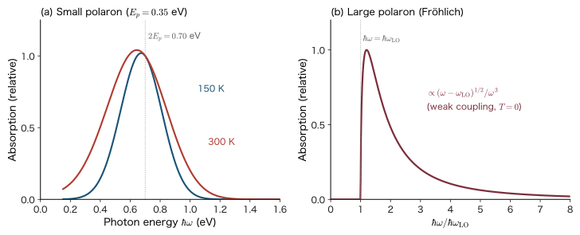

Chapter 31Excitons and Polarons — Excited States and Lattice Relaxation, the Franck–Condon Principle
When we shine light on a semiconductor or an insulator and raise an electron from the valence band to the conduction band, a hole, that is, a vacancy left by the missing electron, remains behind. In Chapter 17 and in the first half of Chapter 33, we treated the electrons and holes created in this way as mutually independent particles. In reality, however, an electron (charge $-e$) and a hole (charge $+e$) attract each other through the Coulomb force and can form a bound state, like the proton and electron of a hydrogen atom. This bound state is the exciton. Furthermore, where an electron, a hole, or an exciton is present, the surrounding ions are pulled or pushed, and the crystal structure is locally distorted. When a charge or an excitation moves while carrying this distortion with it, we call the result a polaron.
This chapter connects these two phenomena along a single thread: “what happens in an excited state.” At its center is the configuration-coordinate diagram. The horizontal axis is a generalized coordinate representing the atomic configuration, and the vertical axis is the total energy of the system; the energies of the electronic ground state and excited state are drawn as two parabolas. In the excited state the equilibrium positions of the atoms are displaced (that is, the crystal is locally distorted), so the bottoms of the two parabolas are shifted sideways relative to each other. Absorption and emission of light occur far faster than the atoms can move, so on this diagram they become vertical arrows. This is the Franck–Condon principle. From this single diagram, the following are all derived: the appearance of emission at a lower energy than absorption (the Stokes shift), the width and shape of the emission band, the ratio of the intensities of the phonon replicas, and the disappearance of luminescence as the temperature is raised (thermal quenching).
In the second half we discuss polarons in two separate classes. A conduction electron in an ionic crystal or a polar semiconductor polarizes many surrounding ions a little at a time through the long-range Coulomb force, and so carries a cloud of distortion much larger than the lattice constant. This is the large polaron, which is described by the Fröhlich model. In transition-metal oxides and similar materials, on the other hand, an electron may be confined to a single ion, and only the neighborhood of that ion is strongly distorted. This is the small polaron, which is described by the Holstein model. A large polaron travels through the crystal as a slightly heavier electron, whereas a small polaron hops to a neighboring ion with the help of heat. The temperature dependence of the mobility is opposite in the two cases. Because the small polaron is treated neither in the existing chapters of this book nor in the companion volumes, we derive it line by line from a model with only two sites.
This chapter is also the most concrete example of “quasiparticle = dressed particle,” introduced in Chapter 27. The exciton is a quasiparticle in which an electron and a hole each serve as the other’s cloud, and the polaron is a quasiparticle in which an electron has phonons as its cloud. One may say that this chapter applies the electron–phonon interaction of Chapter 29 (the static distortion and the dynamic cloud) to excited states and to excess charges. The detailed calculation of the dielectric function and absorption spectrum of excitons is in Section 33.7 of Chapter 33, and the overall picture of light emission in semiconductors is in Section 25.2 of Chapter 25; overlap with those is limited to a restatement of the key points and links, and in this chapter we newly write the configuration-coordinate diagram, the Franck–Condon factor, the Huang–Rhys factor and the shape of the spectrum, the two kinds of polarons, and the self-trapped exciton. In the next chapter, Chapter 32, we examine in detail the very “electric field produced by longitudinal optical phonons” that created the large polaron here.
- The two things that happen in a crystal excited by light (binding of an electron and a hole = exciton; local distortion of the lattice = lattice relaxation and the polaron), and their time scales (fs, ps, ns)
- The hydrogen-like model of the Wannier–Mott exciton, $E_n=E_g-R^*/n^2$; the binding energy and radius for each material; judging whether excitons survive at room temperature; the differences from Frenkel excitons and charge-transfer excitons
- The dispersion of the center-of-mass motion of the exciton; the fourfold increase of the exciton binding energy in two dimensions; biexcitons, trions, electron–hole droplets, Bose condensation, and the Mott transition
- Absorption and emission of excitons (free excitons and bound excitons); phonon replicas
- How to read the configuration-coordinate diagram and the Franck–Condon principle: why the transitions are vertical (classical and quantum pictures); the decomposition into an electronic matrix element and a vibrational overlap integral
- Deriving, from the equations of the parabolas, the absorption and emission peaks, the relaxation energy $E_R=S\hbar\omega$, and the Stokes shift $2S\hbar\omega$
- The Huang–Rhys factor $S$; a complete derivation that the zero-temperature spectral intensities follow the Poisson distribution $\ee^{-S}S^n/n!$; the temperature dependence of the width, $\sqrt{\coth(\hbar\omega/2k_BT)}$; nonradiative transitions and thermal quenching
- The idea of the polaron, and the difference between the large polaron (Fröhlich) and the small polaron (Holstein)
- Deriving the Fröhlich polaron energy $-\alpha_F\hbar\omega_{\rm LO}$, the effective mass, and the number of phonons in the cloud by second-order perturbation theory; the key points of strong coupling and Feynman’s theory
- Solving the two-site Holstein model in the adiabatic approximation and deriving the condition for self-trapping, the band narrowing $t\,\ee^{-S}$, and the activation energy for hopping ($E_p/2$ in the nonadiabatic case, $(E_p-t)^2/2E_p\approx E_p/2-t$ in the adiabatic case); self-trapped excitons, and the methods for observing all of these
31.1 What Happens in an Excited State
When a ZnO crystal is illuminated with ultraviolet light, a sharp emission line appears just below the absorption edge at low temperature, and weak lines are lined up at regular intervals further below it. When color centers are created in an alkali halide such as KCl and the crystal is illuminated with visible light, a broad emission band appears at a wavelength much longer than that of the absorbed light. Some halide perovskites glow white when illuminated with ultraviolet light. All of these are phenomena that reflect “what happens inside a crystal immediately after it absorbs light.” In this section we first sketch the whole picture.
Notation: Symbols used in this chapter and their correspondence with other chapters
(We collect them here in advance, but each symbol is defined again in the section where it is used. The symbols of the configuration coordinate appear in Section 31.4, and those of the polaron in Sections 31.6–31.8.)
- The configuration coordinate (generalized coordinate) is written $Q$, the angular frequency of its vibration $\omega$ (energy $\hbar\omega$), and the mass corresponding to this vibration (the effective mass of the mode) $M$. The displacement between the bottoms of the ground-state and excited-state parabolas is written $\Delta Q$, the energy difference between the two bottoms (the energy of the zero-phonon line) $E_{\rm ZPL}$, and the relaxation energy $E_R$. Section 25.2.7 of Chapter 25 writes the same quantities as $\hbar\Omega$, $Q_0$, and $E_{00}$ ($\hbar\Omega\leftrightarrow\hbar\omega$, $Q_0\leftrightarrow\Delta Q$, $E_{00}\leftrightarrow E_{\rm ZPL}$).
- The energy of an LO phonon is $\hbar\omega_{\rm LO}$, and the energy of the dispersionless optical phonon of the Holstein model is $\hbar\omega_0$.
- The Huang–Rhys factor is $S$. The Fröhlich coupling constant is $\alpha_F$ (the same as in Chapter 22; it is $\alpha$ in the literature), and it is distinct from the absorption coefficient $\alpha$. The binding energy of a polaron is $E_p$, and the activation energy of hopping is $E_a$.
- The exciton binding energy (the effective Rydberg energy) is $R^*$, and the effective Bohr radius is $a_{\rm ex}$ (Chapter 33 writes $a^*$). The Bohr radius of the hydrogen atom is $a_B=0.0529\,\mathrm{nm}$. The total exciton mass (the mass of the center-of-mass motion) is $M_X$ (Chapter 33 writes $M$; the $M$ of this chapter is the mass of the configuration coordinate). The reduced mass of the electron and the hole is $m_r$.
- The hopping integral of an electron is $t$, and in this chapter we do not use $t$ for time (time is written $\tau$). The number of nearest-neighbor sites of one site is $z$.
- The total energy of the system is $E$, and specific energies are distinguished by subscripts, as in $E_{\rm abs}$ (the absorption peak) and $E_{\rm em}$ (the emission peak). $E_g$ is the band gap.
- Symbols used with two meanings within this chapter (distinguished by context): $K$ is the wavenumber of the center of mass of an exciton (Section 31.2) and the spring constant (Section 31.4 onward; $K=M\omega^2$). $m$ is the mass of an electron ($m$, $m^*$, $m_r$) and the vibrational quantum number of the excited state ($m=0,1,2,\ldots$, Sections 31.4–31.5). $W$ is the bandwidth ($W=2zt$, Sections 31.6 and 31.8), the full width at half maximum of a band $W(T)$ (Section 31.5.4), and the rate of a transition ($W_r$, $W_0$, $W_{g,n\to e,m}$). $\mu$ is the mobility, the chemical potential ($\mu_e$ and so on, Example 31.3), and the transition dipole moment ($\bm\mu_{eg}$, Section 31.4.5). $\ell=\sqrt{\hbar/M\omega}$ is the unit of length of the harmonic oscillator (Section 31.5), and the extent of the polaron in Section 31.7.3 is written $\ell_p$ to distinguish it. $d$ is the dimensionless displacement $d=\Delta Q/\ell$ (Section 31.5.2) and the spatial dimension (Section 31.9.2). $\lambda$ is the extent of a two-dimensional exciton $\lambda_{\rm 2D}$ (Section 31.2.5) and the degree of localization $\lambda=a/L$ (Section 31.9.2). $B$ denotes the half width of the exciton band only in Section 31.9.2 (it is not the magnetic flux density). $\varepsilon_\kk=\hbar^2k^2/2m^*$ is the kinetic energy of an electron in Section 31.7, and it is distinguished by the shape of the letter from the permittivities $\epsilon_s$ and $\epsilon_\infty$.
31.1.1 The crystal immediately after absorbing light — an electron and a hole are created
When a semiconductor or an insulator absorbs a photon with energy larger than the band gap $E_g$, one electron in the valence band is raised to the conduction band (Chapter 17, Section 17.1; Chapter 33, Section 33.5). A hole left by the missing electron remains in the valence band, and it behaves as a particle with positive charge $+e$, that is, a hole (Chapter 17, Section 17.4). Therefore a “crystal excited by light” is a crystal to which one electron in the conduction band and one hole in the valence band have been added.
The simplest picture of band theory was to regard the electron and the hole as mutually unrelated particles, and in addition to regard the atoms as remaining at their original positions. In this picture, absorption should begin at $E_g$, and emission should also occur around $E_g$. Yet all of the experiments at the beginning deviate from this picture. There are two reasons for the deviation.
- The electron and the hole attract each other through the Coulomb force. The electron with charge $-e$ and the hole with charge $+e$ attract each other in a crystal of permittivity $\epsilon_s$ with energy $-e^2/(4\pi\epsilon_0\epsilon_s r)$. This is very similar to the relation between the proton and the electron in a hydrogen atom, and a state in which the electron and the hole are bound to each other is formed. This is the exciton (Section 31.2).
- The surrounding atoms move. If an electron moves from the valence band (bonding orbitals) to the conduction band (antibonding orbitals), the forces that bind the atoms to one another change. In an ionic crystal, the negative charge of the electron attracts the cations and pushes away the anions. In this way, in the excited state the crystal structure is locally distorted. The process in which the distortion settles down is called lattice relaxation, and a charge or an excitation dressed in a distortion is called a polaron (Sections 31.6–31.8).
These two are not independent. An exciton also becomes dressed in a distortion (the self-trapped exciton of Section 31.9), and the magnitude of the distortion determines the energies of light absorption and emission, the shapes of the spectra, and whether the crystal emits light or not (Sections 31.4–31.5). Figure 31.1 is a map of the whole chapter.
31.1.2 Three time scales
As drawn on the time axis of Figure 31.1, the processes that occur in an excited state have three time scales that differ by orders of magnitude. All of the discussion in this chapter rests on this separation of time scales.
- Electronic transition (the absorption of light itself): 1 to a few fs. The phase of a quantum state of energy $E$ rotates as $\ee^{-iE\tau/\hbar}$, so a rough estimate of the time in which the electronic state changes is about $h/E_g$. For $E_g=1.5\,\mathrm{eV}$, $h/E_g\approx2.8\,\mathrm{fs}$ ($1\,\mathrm{fs}=10^{-15}\,\mathrm{s}$).
- Motion of the atomic nuclei (lattice vibration and relaxation): 0.1–1 ps. The energy of an optical phonon is about $\hbar\omega=10$–$100\,\mathrm{meV}$, and the period of vibration $2\pi/\omega$ is $40$–$400\,\mathrm{fs}$. It takes several to a dozen or so vibrational periods, that is, $0.1$–$1\,\mathrm{ps}$, for the atoms to move to the new equilibrium positions and finish releasing the surplus energy to the surroundings as phonons.
- Light emission (emission of a photon): ns–μs. The radiative lifetime of an exciton in a direct-transition semiconductor is about a ns, and it can be as long as μs–ms for a forbidden transition or a self-trapped exciton (Chapter 25, Section 25.1).
Because an electronic transition is as much as 100 times faster than the motion of the atoms, we may regard the atoms as standing still during the instant in which light is absorbed (or emitted). This is the Franck–Condon principle of Section 31.4. Also, because light emission is as much as 1000 times slower than lattice relaxation, we may regard the lattice as having settled to the new equilibrium position before light is emitted. Therefore emission occurs from the excited state in which the distortion has settled. This is why the energies of absorption (before the distortion) and emission (after the distortion) differ.
Example 31.1: Comparing the time of an electronic transition with the period of atomic vibration
(1) When the optical-phonon energy is $\hbar\omega=30\,\mathrm{meV}$, find the angular frequency $\omega$ of the vibration and its period $2\pi/\omega$. (2) Compare the period with the rough estimate $h/E_g$ of the time of an electronic transition with $E_g=1.5\,\mathrm{eV}$, and explain why the atoms can be regarded as “at rest.” Use $\hbar=6.582\times10^{-16}\,\mathrm{eV\,s}$ and $h=4.136\times10^{-15}\,\mathrm{eV\,s}$.
Solution. (1) $$\omega=\dfrac{\hbar\omega}{\hbar}=\dfrac{0.030\,\mathrm{eV}}{6.582\times10^{-16}\,\mathrm{eV\,s}}=4.56\times10^{13}\,\mathrm{s^{-1}}$$. The period is
$$ \frac{2\pi}{\omega}=\frac{2\pi}{4.56\times10^{13}\,\mathrm{s^{-1}}}=1.38\times10^{-13}\,\mathrm{s}=138\,\mathrm{fs} $$(2) $$\dfrac{h}{E_g}=\dfrac{4.136\times10^{-15}\,\mathrm{eV\,s}}{1.5\,\mathrm{eV}}=2.8\times10^{-15}\,\mathrm{s}=2.8\,\mathrm{fs}$$. The ratio is $138/2.8\approx50$. The distance an atom moves during 1/50 of one period is at most about $2\pi/50\approx1/8$ of the amplitude. Moreover, near the turning points of the vibration the atom is almost at rest.
∎ An electronic transition is completed in a time of a few percent of one vibrational period of the atoms, so during the transition the atomic positions (the configuration coordinate $Q$) can be regarded as unchanged. The larger the phonon energy (a fast vibration of a light atom, for example the O–H stretch at $\sim0.4\,\mathrm{eV}$), the more this approximation gradually worsens.
31.1.3 How this chapter proceeds
In Sections 31.2–31.3, we first keep the atoms fixed and consider only the Coulomb attraction between an electron and a hole (excitons). In Sections 31.4–31.5, conversely, we simplify the electronic states to just two, a “ground state” and an “excited state,” describe the motion of the atoms by a single coordinate $Q$, and derive the energies and line shapes of absorption and light emission (the configuration-coordinate diagram). In Sections 31.6–31.8, we study the phenomenon in which an extra charge (an electron or hole created by light, or one introduced by doping) puts on a distortion, namely the polaron, treating separately the large polaron (Fröhlich) and the small polaron (Holstein). In Section 31.9 we combine the two (the self-trapped exciton), and in Section 31.10 we summarize the methods of observation.
Physical Meaning: A “polaron” is not limited to excited states
The word polaron is not limited to electrons and holes created by light. It refers in general to the phenomenon in which, when one extra charge enters a crystal, the surrounding lattice distorts in response, and the charge moves carrying that distortion along with it. An electron released from a donor into the conduction band, and a site where the valence of Fe or Ti changes in the cathode material of a battery into which Li has been inserted, involve the same physics. In this chapter we enter through the context of excited states, but the results of Sections 31.6–31.8 apply as they stand to doped electrons and holes as well. In the language of the general theory of quasiparticles (Chapter 27, Section 27.2), the polaron is the quasiparticle “an electron dressed in a phonon cloak,” and the exciton is the quasiparticle “a pair of an electron and a hole bound together by the attraction of the hole.”
31.2 Excitons — Hydrogen Atoms in a Solid
The idea that an electron and a hole created by light attract each other and form a bound state goes back to Frenkel (1931) and Wannier (1937). The derivation of the exciton energy and absorption spectrum is described in detail in Chapter 33, Section 33.7, so in this section we restate the main points and then look at the kinds of excitons, differences among materials, motion inside the crystal, two-dimensional excitons, and phenomena that occur when many excitons gather.
31.2.1 An electron and a hole bind like a hydrogen atom
The hydrogen atom is a system in which an electron (charge $-e$, mass $m$) orbits a proton (charge $+e$), bound by the Coulomb force. In a semiconductor excited by light, a hole (charge $+e$, effective mass $m_h^*$) and an electron (charge $-e$, effective mass $m_e^*$) attract each other by the Coulomb force in the same way. There are only three differences (Figure 31.2).
- Mass. The proton is 1836 times heavier than the electron, so in the hydrogen atom it was fine to assume that only the electron moves. In an exciton the electron and the hole have comparable masses, so the two orbit around each other. The mass for the relative motion is the reduced mass $m_r$ ($1/m_r=1/m_e^*+1/m_h^*$).
- Permittivity. Many atoms lie between the electron and the hole, and their electron clouds polarize and weaken (screen) the Coulomb force to $1/\epsilon_s$.
- Energy reference. To create an electron and a hole, $E_g$ is needed first. When they bind, the energy drops from that value by the binding energy.
Section 33.7.2 of Chapter 33 split the two-body Hamiltonian into center-of-mass motion and relative motion and showed that the relative motion obeys the same equation as the hydrogen atom. We restate the result here (the $a^*$ and $M$ of Chapter 33 are written $a_{\rm ex}$ and $M_X$ in this chapter).
Here $n=1,2,3,\ldots$ is the principal quantum number, $\bm K$ is the wave vector of the exciton's center of mass, and $M_X=m_e^*+m_h^*$ is the total exciton mass. Multiplying $R^*$ by $a_{\rm ex}$ eliminates $m_r$, giving
$$ R^*a_{\rm ex}=\frac{e^2}{8\pi\epsilon_0\epsilon_s} $$(from $R^*=\hbar^2/(2m_ra_{\rm ex}^2)$ and $a_{\rm ex}=4\pi\epsilon_0\epsilon_s\hbar^2/(m_re^2)$ we obtain $R^*a_{\rm ex}=\hbar^2/(2m_ra_{\rm ex})=e^2/(8\pi\epsilon_0\epsilon_s)$). For a material whose masses are uncertain, we estimate $a_{\rm ex}$ from this relation using the measured $R^*$. The shape of the hydrogen wave function can be seen in the simulator The Hydrogen Atom — Orbital Shapes and the Blurred Electron Cloud (for the exciton, the unit of length is stretched from $a_B$ to $a_{\rm ex}$).
Example 31.2: Excitons in GaAs and ZnO — Hydrogen-like model and measurement
(1) Find $R^*$ and $a_{\rm ex}$ for GaAs ($m_e^*=0.067m$, heavy hole $m_h^*=0.45m$, $\epsilon_s=12.9$) using Eq. \eqref{eq:31-exciton}. (2) For ZnO ($m_e^*=0.24m$, $m_h^*=0.59m$, $\epsilon_s=8.5$, $\epsilon_\infty=3.7$), find $R^*$ using $\epsilon_s$ and using $\epsilon_\infty$, and compare each with the measured value of $60\,\mathrm{meV}$.
Solution. (1) The reduced mass is
$$ m_r=\frac{m_e^*m_h^*}{m_e^*+m_h^*}=\frac{0.067\times0.45}{0.067+0.45}\,m=\frac{0.03015}{0.517}\,m=0.0583\,m $$ $$ \begin{aligned} &R^*=13.6\,\mathrm{eV}\times\frac{0.0583}{12.9^2}=13.6\,\mathrm{eV}\times\frac{0.0583}{166.4}=4.8\,\mathrm{meV},\\ &a_{\rm ex}=0.0529\,\mathrm{nm}\times\frac{12.9}{0.0583}=11.7\,\mathrm{nm} \end{aligned} $$This is somewhat larger than the measured $4.2\,\mathrm{meV}$ (the same result as in Example 33.17 of Chapter 33; the discrepancy arises because the heavy and light holes of the valence band are mixed).
(2) $m_r=\dfrac{0.24\times0.59}{0.83}\,m=0.171\,m$. For $\epsilon_s=8.5$, $R^*=13.6\,\mathrm{eV}\times0.171/72.25=32\,\mathrm{meV}$; for $\epsilon_\infty=3.7$, $R^*=13.6\,\mathrm{eV}\times0.171/13.69=170\,\mathrm{meV}$. The measured $60\,\mathrm{meV}$ lies between the two.
∎ The $R^*$ of ZnO ($60\,\mathrm{meV}$) is close to the LO phonon energy ($72\,\mathrm{meV}$). Because the speed of the relative motion of the electron and hole ($\sim R^*/\hbar$) is comparable to the vibration of the lattice ions ($\omega_{\rm LO}$), the ionic polarization can sometimes keep up and sometimes not, and the effective permittivity falls between $\epsilon_\infty$ and $\epsilon_s$. Whether the ions “follow” the electron or hole is precisely the polaron problem of Section 31.7.
31.2.2 Differences between materials, and whether excitons survive at room temperature
According to Eq. \eqref{eq:31-exciton}, $R^*$ is proportional to $m_r$ and inversely proportional to $\epsilon_s^2$. Materials with larger gaps tend to have larger effective masses and smaller permittivities, so the larger the gap, the more strongly bound and the smaller the exciton. Table 31.1 shows representative values (the same values as in Table 33.4 of Chapter 33, with several materials added).
| Material | $E_g$ (eV, low temperature) | $R^*$ | Estimate of $a_{\rm ex}$ | $R^*/k_BT$ (300 K) | Type and features |
|---|---|---|---|---|---|
| GaAs | 1.52 | $4.2\,\mathrm{meV}$ | $12$–$13\,\mathrm{nm}$ | 0.16 | Wannier–Mott. Sharp line only at low temperatures |
| Si (indirect) | 1.17 | $14.7\,\mathrm{meV}$ | $\sim4\,\mathrm{nm}$ | 0.57 | Wannier–Mott. Step at the absorption edge |
| GaN | 3.5 | $\sim25\,\mathrm{meV}$ | $\sim3\,\mathrm{nm}$ | $\sim1$ | Wannier–Mott |
| CdS | 2.58 | $\sim29\,\mathrm{meV}$ | $\sim3\,\mathrm{nm}$ | $\sim1.1$ | Wannier–Mott |
| ZnO | 3.44 | $60\,\mathrm{meV}$ | $\sim1.4\,\mathrm{nm}$ | 2.3 | Exciton emission even at room temperature |
| Cu$_2$O (yellow series) | 2.17 | $\sim92\,\mathrm{meV}$ | $\sim1\,\mathrm{nm}$ | 3.6 | Rydberg series (up to about $n=25$) |
| CuCl | 3.4 | $\sim0.19\,\mathrm{eV}$ | $\sim0.7\,\mathrm{nm}$ | $\sim7$ | Stable biexciton |
| Monolayers such as MoS$_2$ | $\sim2$ (optical) | $0.2$–$0.5\,\mathrm{eV}$ | $\sim1\,\mathrm{nm}$ | about 10 | Two-dimensional. Weak screening (31.2.5) |
| KCl, KBr | $\sim8$ | $\sim1\,\mathrm{eV}$ | About the lattice constant | tens | Frenkel type (31.2.3) |
| Anthracene (molecular crystal) | $\sim4$ | $\sim1\,\mathrm{eV}$ | One molecule | tens | Frenkel type |
If $R^*$ is sufficiently larger than $k_BT$, excitons are seldom broken up by heat. In GaAs ($R^*/k_BT=0.16$) the excitons are broken up immediately at room temperature, whereas in ZnO (2.3), Cu$_2$O (3.6), and monolayers (about 10) excitons dominate the optical properties even at room temperature. Strictly speaking, however, “what fraction remains as excitons” also depends on the density. Let us check this in the next example.
Example 31.3: Does the exciton survive at room temperature? — Chemical equilibrium of electrons, holes, and excitons
When three kinds of particles—electrons, holes, and excitons—are in thermal equilibrium, derive the Saha equation
$$ \frac{n_en_h}{n_X}=\left(\frac{m_rk_BT}{2\pi\hbar^2}\right)^{3/2}\ee^{-R^*/k_BT}\equiv n^*(T) $$from the balance of the reaction $e+h\rightleftarrows X$ ($n_e$, $n_h$, and $n_X$ are the number densities of electrons, holes, and excitons; all are assumed to be nondegenerate, and only the $n=1$ exciton is considered). Let $n$ be the total density of electron–hole pairs created by light and $x$ the fraction of them that exist as free electrons and holes ($n_e=n_h=xn$, $n_X=(1-x)n$). Find $x$ for GaAs ($m_r=0.058m$, $R^*=4.2\,\mathrm{meV}$) and ZnO ($m_r=0.17m$, $R^*=60\,\mathrm{meV}$) at $300\,\mathrm{K}$ and $n=10^{17}\,\mathrm{cm^{-3}}$.
Solution. Condition for chemical equilibrium. When the reaction $e+h\rightleftarrows X$ is in equilibrium, the chemical potentials satisfy $\mu_e+\mu_h=\mu_X$ (the free energies of the two sides are equal).
Density of each particle. By the same calculation as in Section 17.5 of Chapter 17, the density of a nondegenerate particle can be written as $n_i=g_i\left(\dfrac{m_ik_BT}{2\pi\hbar^2}\right)^{3/2}\exp\left(\dfrac{\mu_i-E_i}{k_BT}\right)$. Here $g_i$ is the spin degeneracy and $E_i$ is the energy at the bottom of that particle’s band. If the bottom for electrons is $E_c$ and the bottom for holes (measured in the hole energy) is $-E_v$, then $E_e+E_h=E_c-E_v=E_g$, the bottom of the exciton is $E_X=E_g-R^*$, and its mass is $M_X=m_e^*+m_h^*$. The degeneracy is 2 for electrons and holes, and $2\times2=4$ for excitons.
Taking the ratio.
$$ \frac{n_en_h}{n_X}=\frac{g_eg_h}{g_X}\left(\frac{k_BT}{2\pi\hbar^2}\right)^{3/2}\left(\frac{m_e^*m_h^*}{M_X}\right)^{3/2}\exp\left(\frac{\mu_e+\mu_h-\mu_X-E_g+(E_g-R^*)}{k_BT}\right) $$Since $g_eg_h/g_X=4/4=1$, $m_e^*m_h^*/M_X=m_r$, and in the exponent $\mu_e+\mu_h-\mu_X=0$ leaves only $-R^*/k_BT$, we obtain the Saha equation.
The fraction $x$. Substituting $n_e=n_h=xn$ and $n_X=(1-x)n$ gives $\dfrac{x^2n}{1-x}=n^*$, that is, $nx^2+n^*x-n^*=0$, whose positive solution is $x=\dfrac{-n^*+\sqrt{n^{*2}+4nn^*}}{2n}$.
GaAs. Since $\left(\dfrac{mk_BT}{2\pi\hbar^2}\right)^{3/2}=1.25\times10^{19}\,\mathrm{cm^{-3}}$ ($300\,\mathrm{K}$, free-electron mass), $$\left(\dfrac{m_rk_BT}{2\pi\hbar^2}\right)^{3/2}=1.25\times10^{19}\times0.0583^{3/2}\,\mathrm{cm^{-3}}=1.77\times10^{17}\,\mathrm{cm^{-3}}$$. Multiplying by $\ee^{-4.2/25.85}=\ee^{-0.162}=0.850$ gives $n^*=1.50\times10^{17}\,\mathrm{cm^{-3}}$. For $n=10^{17}$, $$x=\dfrac{-1.50+\sqrt{1.50^2+4\times1\times1.50}}{2}=\dfrac{-1.50+2.87}{2}=0.69$$.
ZnO. $1.25\times10^{19}\times0.17^{3/2}\,\mathrm{cm^{-3}}=8.8\times10^{17}\,\mathrm{cm^{-3}}$ and $\ee^{-60/25.85}=\ee^{-2.32}=0.098$, so $n^*=8.6\times10^{16}\,\mathrm{cm^{-3}}$. $$x=\dfrac{-0.86+\sqrt{0.86^2+4\times0.86}}{2}=\dfrac{-0.86+2.05}{2}=0.59$$.
∎ Surprisingly, at $10^{17}\,\mathrm{cm^{-3}}$ the difference between the two is small (if the density is raised to $n=10^{18}\,\mathrm{cm^{-3}}$, ZnO has $x\approx0.25$ and excitons become the majority, whereas in GaAs the excitons are dissolved by the Mott transition (31.2.6) before that). The lower the density, the closer $x$ is to 1. This is because free electrons and holes have more accessible states (a larger entropy). Even so, the reasons ZnO is called a “material in which excitons are alive at room temperature” are that (i) $\ee^{-R^*/k_BT}$ is smaller by an order of magnitude and the Mott density is high (because $a_{\rm ex}$ is small), so that excitons can become the majority at high densities, and (ii) the electrons and holes created by light first form excitons and emit light before they reach thermal equilibrium.
The Rydberg series of Cu$_2$O. In Cu$_2$O, the bottom of the conduction band and the top of the valence band both have even parity, so the transition to the $s$ exciton is dipole-forbidden, and the absorption lines $E_n=E_g-R^*/n^2$ of the $p$ excitons ($n\ge2$) line up neatly like the Lyman series of the hydrogen atom (Chapter 33, Section 33.7.5). In 2014, lines up to about $n=25$ were observed in a natural Cu$_2$O crystal (Kazimierczuk et al.). Since the exciton radius is proportional to $n^2a_{\rm ex}$, the $n=25$ exciton has a size approaching a $\mu$m. Inside a solid, we can thus create the same thing as the “Rydberg atom” of atomic physics (Exercise 31.1).
31.2.3 Wannier excitons, Frenkel excitons, and charge-transfer excitons
The hydrogen-like model can be used only when $a_{\rm ex}$ is sufficiently larger than the lattice constant $a$ and the crystal between the electron and the hole can be regarded as a continuum with permittivity $\epsilon_s$. This type is called a Wannier–Mott exciton. The opposite limit is the Frenkel exciton (Figure 31.3).
- Frenkel exciton. In molecular crystals (anthracene, pentacene, organic semiconductors), rare-gas solids, and alkali halides, the excitation is almost confined to the excitation of an electron within a single molecule or ion (for example, a $3p$ electron of Cl$^-$ is raised to a $4s$-like orbital). The electron and the hole are on the same molecule, and the binding energy is large, about $0.1$–$1\,\mathrm{eV}$. The Frenkel exciton moves through the crystal not because the electron and the hole hop together, but because the excitation energy is handed over to the neighboring molecule (between an excited molecule A* and a ground-state molecule B, energy is transferred, A*B → AB*, by the dipole–dipole interaction; this is the same mechanism as Förster transfer).
- Charge-transfer exciton. As an intermediate type, there is one in which the electron and the hole sit on adjacent molecules or ions. It is called a charge-transfer exciton. Examples are the excitation at the interface between the donor and acceptor molecules of an organic solar cell, and the charge-transfer excitation from the O $2p$ to the metal $3d$ in transition-metal oxides (Chapter 28, Section 28.7). Because the electron and the hole are apart, it has a large electric dipole, and its position changes greatly in an electric field.
The rough criterion that separates the Wannier type from the Frenkel type is the ratio of $a_{\rm ex}$ to the lattice constant $a$, or, equivalently, the ratio of $R^*$ to the bandwidth. When $R^*$ is much smaller than the bandwidth, the electron and the hole can form a bound state using only states near the band edges, so the effective-mass approximation holds and the exciton is large. When $R^*$ becomes comparable to the bandwidth or larger, a bound state cannot be formed without mixing states from the whole Brillouin zone, and in real space the exciton shrinks to about the size of a single atom.
31.2.4 The exciton is a quasiparticle moving through the crystal — center-of-mass motion and dispersion
The last term $\hbar^2K^2/2M_X$ in Eq. \eqref{eq:31-exciton} is the energy of the motion in which the exciton as a whole travels through the crystal. The exciton has no charge (it is electrically neutral), but it is a quasiparticle that carries energy, and it propagates through the crystal as a plane wave with center-of-mass wavenumber $\bm K$. This dispersion is drawn in Figure 31.4.
![Dispersion of the exciton in GaAs. (a) The horizontal axis is the center-of-mass wavenumber K (0 to 0.5 per nanometer) and the vertical axis is the energy (1.505 to 1.545 electron volts). The parabolas of the n=1 and n=2 excitons lie below the gap, and the pale blue region above them is the continuum of unbound electrons and holes. The dispersion of light is a vertical line at K almost equal to 0. (b) Enlargement of the range of K from 0 to 0.06. The light line crosses the parabola of the n=1 exciton at K0 of about 0.028 per nanometer.](figs/ch31_fig31-4.svg)
Two things can be read from Figure 31.4(a). First, the slope $\hbar c/n_b$ of the light dispersion is steeper than that of the exciton dispersion by orders of magnitude. Therefore, light can create only excitons with $K\simeq0$ (the momentum of a photon is almost zero; Chapter 17, Section 17.1). Second, the light line and the exciton parabola cross at a single point $K_0$. Near the crossing point, light and the exciton have the same energy and the same wavenumber, so the two mix strongly and form a new quasiparticle, the exciton polariton. The exciton polariton is treated together with the phonon polariton in a unified way in Chapter 33, Section 33.10 (Section 33.10.3, “Exciton polariton”).
Example 31.4: Kinetic energy of an exciton created by light
Find the wavenumber $K_0$ inside the crystal of light that has the same energy as the $n=1$ exciton of GaAs ($E=1.515\,\mathrm{eV}$) ($n_b=3.59$, $\hbar c=197.3\,\mathrm{eV\,nm}$). Find the center-of-mass motion energy $\hbar^2K_0^2/2M_X$ of an exciton with that wavenumber, taking $M_X=0.517m$, and compare it with the exciton binding energy $4.2\,\mathrm{meV}$ and with the size of the Brillouin zone $2\pi/a$ ($a=0.565\,\mathrm{nm}$). Use $\hbar^2/2m=0.0381\,\mathrm{eV\,nm^2}$.
Solution. Solving the light dispersion $E=\hbar cK/n_b$ for $K$ gives
$$ K_0=\frac{n_bE}{\hbar c}=\frac{3.59\times1.515\,\mathrm{eV}}{197.3\,\mathrm{eV\,nm}}=0.0276\,\mathrm{nm^{-1}} $$ $$ \frac{\hbar^2K_0^2}{2M_X}=\frac{\hbar^2}{2m}\cdot\frac{m}{M_X}K_0^2=0.0381\,\mathrm{eV\,nm^2}\times\frac{1}{0.517}\times(0.0276\,\mathrm{nm^{-1}})^2=5.6\times10^{-5}\,\mathrm{eV}=56\,\mu\mathrm{eV} $$Since $2\pi/a=11.1\,\mathrm{nm^{-1}}$, $K_0$ is only $1/400$ of it.
∎ The kinetic energy of an exciton created by light is about $1/75$ of the binding energy, which is about the same as the width of the absorption line (about $0.1\,\mathrm{meV}$ even at low temperatures). An exciton created by light can be regarded as “almost at rest.” Conversely, since only excitons at rest can turn into light, an exciton that has acquired kinetic energy thermally ($K\gg K_0$) cannot emit light as it is (it must get rid of $K$ through phonons or defects). This is one of the reasons why the bound-exciton lines and phonon replicas of Section 31.3 stand out.
31.2.5 Two-dimensional excitons — the binding energy becomes four times larger
In quantum wells a few nm thick (Chapter 24, Section 24.7) and in monolayers of transition-metal dichalcogenides such as MoS$_2$ and WSe$_2$, electrons and holes can move only within the plane. The energy levels of the two-dimensional hydrogen atom were derived in Chapter 33, Section 33.7.6, by the variational method and by rewriting the radial equation. We restate the result.
The key points of the derivation are the following two. (i) When the two-dimensional Laplacian acts on $\varphi=u(\rho)\ee^{im\phi}/\sqrt\rho$, the equation for $u$ is the three-dimensional radial equation with $l(l+1)$ replaced by $(\abs m-\frac12)(\abs m+\frac12)$, that is, with $l\to\abs m-\frac12$. Substituting $l=\abs m-\frac12$ into the three-dimensional $E=-R^*/(n_r+l+1)^2$ gives $E=-R^*/(n-\frac12)^2$ with the principal quantum number $n=n_r+\abs m+1$. (ii) For the ground state $n=1$, $(1-\frac12)^2=\frac14$, so the binding energy is $4R^*$ and the spread $\lambda$ of the wave function shrinks to $a_{\rm ex}/2$. Figure 31.5 shows the three-dimensional and two-dimensional levels side by side.
Quantum wells. A real quantum well has a finite width, so the binding energy lies between $R^*$ and $4R^*$ (around $10\,\mathrm{meV}$ for a GaAs well of width $10\,\mathrm{nm}$). Because the binding is strong and the lines are sharp, exciton absorption can be seen even at room temperature, and it is used in optical modulators based on the quantum-confined Stark effect, in which an electric field shifts the absorption (Chapter 33, Section 33.8).
Monolayers of transition-metal dichalcogenides. In monolayers of MoS$_2$ and WSe$_2$, the binding energy reaches as much as $0.2$–$0.5\,\mathrm{eV}$. There are two reasons. (i) The thickness is a single layer, so the system is close to an ideal two-dimensional one, and the binding energy becomes four times larger. (ii) Outside the layer there is vacuum (or a substrate of small permittivity), so most of the electric field lines between the electron and the hole pass outside the layer, and the screening is weak. Since screening becomes less effective as the distance increases, the Coulomb force is no longer the simple $1/(\epsilon_s r)$, and the exciton series deviates from the hydrogen-like $1/(n-\frac12)^2$ (a Keldysh-type interaction).
Example 31.5: Excitons in a quantum well and a monolayer
(1) Find the binding energies of the $n=1$ and $n=2$ excitons in an ideal two-dimensional GaAs quantum well from the three-dimensional value $R^*=4.2\,\mathrm{meV}$. (2) For monolayer MoS$_2$, estimate the binding energy with a two-dimensional hydrogen model having reduced mass $m_r=0.25m$ and effective permittivity $\epsilon=4.5$, and compare it with the measured value of $0.2$–$0.5\,\mathrm{eV}$.
Solution. (1) From Eq. \eqref{eq:31-2d}, $n=1$ gives $4R^*=16.8\,\mathrm{meV}$, and $n=2$ gives $R^*/(2-\frac12)^2=4R^*/9=1.9\,\mathrm{meV}$.
(2) The three-dimensional value is $$R^*=13.6\,\mathrm{eV}\times0.25/4.5^2=13.6\times0.25/20.25\,\mathrm{eV}=0.168\,\mathrm{eV}$$, and the two-dimensional ground state is four times that, $0.67\,\mathrm{eV}$.
∎ The two-dimensional hydrogen model gives a value somewhat larger than the measured one. The screening produced by the electron cloud of the monolayer acts more strongly at shorter distances (when the distance $r$ is shorter than the “screening length” of the layer, the Coulomb force increases only logarithmically), so the short-range attraction is weaker than in the hydrogen model. Even so, the order of magnitude agrees, and the conclusion “more than 10 times $k_BT$ at room temperature” does not change. This is why the optical properties of monolayers are governed by excitons even at room temperature.
31.2.6 Many excitons — many-body effects
When many excitons are created by intense light, interactions among the excitons give rise to phenomena that span both the physics of atoms and molecules and statistical physics. We state only the main points of each.
- Biexciton. Two excitons bound together, just as two hydrogen atoms form an H$_2$ molecule. The binding energy is a fraction of the exciton binding energy (about $30\,\mathrm{meV}$ in CuCl, and less than $1\,\mathrm{meV}$ in GaAs). The emission line produced when a biexciton emits one photon and returns to an exciton appears at a lower energy than the exciton line, and its intensity grows in proportion to the square of the excitation light intensity.
- Trion (charged exciton). An exciton with one more electron or hole attached ($X^-=eeh$, $X^+=ehh$), corresponding to the negative hydrogen ion H$^-$. In doped quantum wells and monolayers it appears a few meV to a few tens of meV below the exciton line.
- Electron–hole droplet. When indirect-gap Ge or Si is strongly excited at low temperature, the electrons and holes condense into high-density droplets like a metallic liquid (about $2\times10^{17}\,\mathrm{cm^{-3}}$ in Ge). This is a phase transition between a gas (excitons) and a liquid (droplets), and the droplets are about $\mu$m in size.
- Bose condensation of excitons. An exciton consists of two fermions, so at low density it behaves as a boson. Because its mass is small (about the electron mass), Bose–Einstein condensation should occur at a much higher temperature than in an atomic gas of the same density. The short lifetime (excitons soon emit light and disappear) makes the experiments difficult; condensation or closely related phenomena have been reported for long-lived excitons in Cu$_2$O, for spatially separated excitons in coupled double quantum wells, and for exciton polaritons in cavities (Chapter 33, Section 33.10).
- Mott transition. When the density increases until the distance between excitons is about $a_{\rm ex}$, the surrounding free carriers screen the Coulomb attraction and the bound state disappears, so the excitons melt into a plasma of electrons and holes. A rough estimate is $n_M^{1/3}a_{\rm ex}\simeq0.25$, which is about $10^{16}\,\mathrm{cm^{-3}}$ in GaAs (Chapter 33, Section 33.7.8). This is the same physics as the Mott transition of donors (Chapter 36, Section 36.6), and it is also closely related to the Mott transition caused by electron correlation (Chapter 28, Section 28.6).
31.3 Observing Excitons — Absorption and Emission
Excitons appear in absorption and emission spectra as sharp lines that cannot be explained by interband transitions alone. Absorption was treated in detail in Chapter 33, Section 33.7, and light emission in Chapter 25, Section 25.2, so in this section we put the two together in a single figure (Figure 31.6) and add two points that lead into the second half of this chapter—phonon replicas and the Stokes shift.
31.3.1 Excitons in absorption, and the dielectric function of an exciton
The three main points of Figure 31.6(a) are as follows. The detailed derivation is in Chapter 33, Sections 33.7.3–33.7.4.
- Sharp lines below the gap. Light can create only excitons with $\bm K\simeq0$, so the absorption consists of discrete lines at $E_n=E_g-R^*/n^2$. The strength of a line is proportional to the probability that the electron and hole are at the same place, $\abs{\varphi_n(0)}^2=1/(\pi a_{\rm ex}^3n^3)$, and it decreases as $1/n^3$.
- Sommerfeld enhancement. Even in the continuum above $E_g$, the Coulomb attraction brings the electron and hole closer together, so the absorption equals its value without attraction multiplied by the Sommerfeld factor $2\pi x/(1-\ee^{-2\pi x})$ ($x=\sqrt{R^*/(\hbar\omega-E_g)}$) (Elliott's formula, Chapter 33, Section 33.7.4). The absorption edge does not rise from zero as $\sqrt{\hbar\omega-E_g}$ but starts from a finite value in a steplike manner.
- Connection between the lines and the continuum. Lines with large $n$ crowd together just below $E_g$, and their “strength per unit energy” joins smoothly onto the value of the continuum just above $E_g$.
Supplement: The dielectric function of an exciton
The absorption coefficient $\alpha$ is determined by the imaginary part of the dielectric function $\epsilon(\omega)=\epsilon_1+i\epsilon_2$ (Chapter 33, Section 33.1). A single exciton line adds a term of the Lorentz oscillator form to the dielectric function:
$$ \epsilon(\omega)=\epsilon_b+\frac{f}{\omega_T^2-\omega^2-i\gamma\omega} $$$\epsilon_b$ is the contribution from all other transitions (the background), $\hbar\omega_T$ is the energy of the $\bm K=0$ exciton, $f$ is a constant proportional to the oscillator strength (proportional to $\abs{\varphi(0)}^2$), and $\gamma$ is the linewidth. $\epsilon_2$ becomes a peak of width $\gamma$ near $\omega_T$, and $\epsilon_1$ takes a dispersive form. The $\omega_L$ at which $\epsilon(\omega_L)=0$ is the energy of the longitudinal exciton, and $\omega_L-\omega_T$ is called the longitudinal–transverse splitting. This has exactly the same structure as the splitting between LO and TO phonons (Chapter 32); substituting it into the dispersion of light, $c^2K^2/\omega^2=\epsilon(\omega)$, gives the two branches of the exciton polariton near the crossing point in Figure 31.4. For details, see Chapter 33, Section 33.7.8 and Section 33.10. By the Kramers–Kronig relations (Chapter 33, Section 33.2), a sharp line in $\epsilon_2$ also produces a large change in $\epsilon_1$, and hence in the refractive index, near the line.
31.3.2 Exciton emission — free excitons and bound excitons
An overview of semiconductor light emission (luminescence), how to measure it, and the rate equations for recombination are given in Chapter 25, Section 25.2. Exciton emission is treated in Section 25.2.3, so here we only summarize the main points.
- Free exciton (FX). This is the emission in which an exciton moving freely through the crystal emits a photon and disappears. Only excitons with $\bm K\simeq0$ can emit light, so the line lies at $E_g-R^*$, and its width is determined by the distribution of the exciton's kinetic energy (of the order of $k_BT$).
- Bound exciton. This is an exciton that has been captured by a neutral donor (D$^0$X), a neutral acceptor (A$^0$X), an ionized donor (D$^+$X), or the like, and can no longer move. Because the energy is lowered on capture, the line appears a few meV below the free-exciton line. In Si, an empirical rule (the Haynes rule) is known: the lowering is about $1/10$ of the ionization energy of the donor or acceptor.
- An indicator of purity. A bound exciton does not move, so there is no broadening from kinetic energy, and the line is very sharp, $0.1\,\mathrm{meV}$ or less. Moreover, the line position differs slightly from one kind of impurity to another. Therefore, by looking at the low-temperature emission spectrum, we can tell which impurities are present and how much of each. A free-exciton line that is stronger than the bound-exciton lines, together with sharp lines, is one of the most sensitive indicators of the purity and perfection of a crystal, and in Si it is used to quantify extremely small impurity concentrations of $10^{11}\,\mathrm{cm^{-3}}$.
For the recombination of an electron captured by a donor with a hole captured by an acceptor (donor–acceptor pair emission) and for emission from deep levels, see Chapter 25, Sections 25.2.4–25.2.5.
31.3.3 Phonon replicas — emitting light while emitting LO phonons
In the low-temperature emission of polar crystals such as ZnO, CdS, and GaN, weak lines appear below the exciton line at equal intervals of $\hbar\omega_{\rm LO}$ ($72\,\mathrm{meV}$ in ZnO, $92\,\mathrm{meV}$ in GaN, and about $38\,\mathrm{meV}$ in CdS) (Figure 31.7). These are called phonon replicas (Chapter 25, Section 25.2, also gives the main points on the positions and intensities of phonon replicas, in Section 25.2.6). When an exciton emits a photon and disappears, if it simultaneously emits $1$, $2$, $\ldots$ LO phonons, the photon energy is lowered correspondingly by $\hbar\omega_{\rm LO}$, $2\hbar\omega_{\rm LO}$, $\ldots$. At the moment the photon is emitted, the lattice is shaken and phonons are left behind.
Why are the replicas strong in polar crystals? An exciton is neutral as a whole, but the charge distributions of the electron and the hole are not the same (because the masses differ, the spreads of the wave functions differ). This slight charge imbalance couples to the electric field produced by LO phonons (the Fröhlich interaction, Chapter 22, Section 22.3). While the exciton is present, the lattice is slightly distorted; when the exciton disappears by emitting light, the distortion is no longer needed, and the lattice begins to vibrate, leaving phonons behind. This “distortion and its release” is precisely the subject of Sections 31.4–31.5 of this chapter.

The ratio of the replica intensities follows the Poisson distribution derived in Section 31.5,
$$ \frac{I_n}{I_0}=\frac{S^n}{n!}\qquad\left(I_n=I_{\rm tot}\,\ee^{-S}\frac{S^n}{n!}\right) $$Here $S$ is the Huang–Rhys factor, the average number of phonons emitted at the moment of light emission (in Section 31.4.6 we redefine it as $S=E_R/\hbar\omega$, the relaxation energy $E_R$ of the lattice divided by the phonon energy). Therefore, by measuring the ratio of replica intensities we can find $S$, the coupling strength between the exciton and the lattice.
Example 31.6: Finding the Huang–Rhys factor from the phonon-replica intensities
In the low-temperature emission of a bound exciton in a certain polar semiconductor, the ratio of the integrated intensities of the zero-phonon line, the 1LO replica, and the 2LO replica was $1:0.40:0.08$. (1) Find the Huang–Rhys factor $S$. (2) Check that this ratio is consistent with the Poisson distribution, and predict the intensity of the 3LO replica. (3) Find the fraction of the total emission that goes into the zero-phonon line.
Solution. (1) For the Poisson distribution, $I_1/I_0=\dfrac{\ee^{-S}S}{\ee^{-S}}=S$, so $S=0.40$.
(2) The Poisson distribution predicts $I_2/I_0=S^2/2!=0.40^2/2=0.080$, which agrees with the measured value $0.08$. For 3LO, $I_3/I_0=S^3/3!=0.064/6=0.011$.
(3) The fraction of the total intensity in the zero-phonon line is $\ee^{-S}=\ee^{-0.40}=0.67$.
∎ For an exciton with $S\lt1$, about 2/3 of the light goes into the zero-phonon line, which is not accompanied by phonons. The value of $S$ is the coupling strength between the exciton and the LO phonons, and it differs between free and bound excitons even in the same material (a bound exciton is spatially small, so its coupling is often stronger). Whether the replica intensity ratios follow the Poisson distribution is a touchstone for whether the model of Sections 31.4–31.5, “a two-level system linearly coupled to a single vibrational mode,” holds.
31.3.4 Emission appears at lower energy than absorption — the Stokes shift
For band-edge free excitons, the absorption line and the emission line lie at almost the same position. However, in deep impurities, color centers, molecular crystals, organic semiconductors, the self-trapped excitons of halide perovskites, and the like, the emission peak is shifted far to the low-energy side of the absorption peak, and moreover the emission band is very broad ($0.1$–$1\,\mathrm{eV}$). This shift is called the Stokes shift. For the F center of KCl (a color center in which one electron is trapped at an anion vacancy), absorption is in the green (near $2.3\,\mathrm{eV}$), but emission appears in the near-infrared (near $1.2\,\mathrm{eV}$).
The case in which absorption and emission appear at almost the same position, as in Figure 31.6, is the one in which the lattice is hardly distorted even in the excited state ($S\ll1$). When the lattice is strongly distorted ($S\gg1$), the absorption and emission energies differ greatly. The reason is explained by the configuration-coordinate diagram and the Franck–Condon principle of the next section.
31.4 The Configuration-Coordinate Diagram and the Franck–Condon Principle
This section is the heart of this chapter. We construct a diagram—the configuration-coordinate diagram—that describes the local distortion of a crystal in an excited state using only one coordinate and two parabolas, and on it we consider the absorption and emission of light. In Section 25.2.7 of Chapter 25 we used the same diagram (Figure 25.5) to derive the Stokes shift and thermal quenching; here we draw the diagram more carefully, write in the vibrational levels and wave functions, and derive the Franck–Condon principle from both classical and quantum viewpoints.
31.4.1 What is a generalized coordinate (configuration coordinate)?
Around a defect or a localized excitation in a crystal, many atoms move slightly. Tracking the displacements $\uu_1,\uu_2,\ldots$ of all the atoms is laborious, so we choose one pattern of displacements that actually occurs upon excitation and express its magnitude by a single number $Q$. This is called the configuration coordinate, or the generalized coordinate.
The simplest example is the breathing mode around a point defect (Figure 31.8). Consider a displacement in which the $N$ nearest-neighbor atoms around the defect all move outward (or inward) together by the same distance $u$. If we define
$$ Q=\sqrt{N}\,u $$then the sum of the kinetic energies of the $N$ atoms becomes $N\cdot\tfrac12M_{\rm at}\dot u^2=\tfrac12M_{\rm at}\dot Q^2$, and $Q$ behaves like the coordinate of a single particle of mass $M=M_{\rm at}$ (the mass of one atom). In general, we define $Q$ by normalizing the displacement pattern, and call the mass corresponding to it the effective mass $M$ of the mode. $Q$ has the dimension of length.
31.4.2 The configuration-coordinate diagram — tracing absorption, lattice relaxation, and emission in a single diagram
As we saw in Section 31.1, electrons move much faster than atomic nuclei. We therefore hold the nuclei fixed in a configuration $Q$, find the eigenstate of the electrons, and regard that energy plus the interaction among the nuclei as “the energy of the system at $Q$.” This is called the adiabatic approximation (the Born–Oppenheimer approximation; it is also the premise of the harmonic approximation of Chapter 13), and the resulting energy function $E(Q)$ is called the adiabatic potential (called the adiabatic potential surface in the multidimensional case). We write the adiabatic potential for the electron in the ground state as $E_{\rm gs}(Q)$ and that for the electron in the excited state as $E_{\rm es}(Q)$ (the subscripts gs and es stand for ground state and excited state, and are distinct from the band gap $E_g$). The nuclei move in this potential created by the electrons.
Drawing these two adiabatic potentials—one for the electron in the ground state and one for the electron in the excited state—with the generalized coordinate (configuration coordinate) $Q$ on the horizontal axis and the total energy of the system (the electronic energy plus the kinetic and potential energy of the atoms) on the vertical axis gives the configuration-coordinate diagram (Figure 31.9). Both are parabolas around their equilibrium positions, but when the electron is in the excited state the forces acting on the atoms change, so the bottom of the excited-state parabola is shifted sideways by $\Delta Q$. We will derive the reason and the formulas in Section 31.4.3 below; first, let us learn how to read the diagram.
Let us follow Figure 31.9(a) from the starting point, the black dot, in the order of the arrow numbers (clockwise in the figure).
- Starting point (black dot). At low temperatures, the system sits at the bottom of the ground-state parabola ($Q=0$, vibrational quantum number $n=0$).
- ① Absorption (vertical upward arrow). When light is absorbed, the electron moves to the excited state. The electronic transition is over in fs, and during that time the atoms have no time to move (Section 31.1.2). Therefore $Q$ stays at $0$, the arrow points straight up, and the system lands on the slope of the excited-state parabola. The length of the arrow is the absorption energy $E_{\rm abs}$.
- ② Lattice relaxation in the excited state. The system on the slope rolls down toward the bottom of the parabola, like a pendulum. The surplus energy $E_R$ escapes into the surrounding crystal as phonons (0.1–1 ps), and the system settles at the bottom of the excited state, $Q=\Delta Q$. This is a state in which the atomic positions are displaced by $\Delta Q$—the crystal is locally distorted.
- ③ Light emission (vertical downward arrow). After a time of the order of ns, the electron emits a photon and returns to the ground state. Again the atoms cannot move, so the system goes straight down at $Q=\Delta Q$ and lands on the slope of the ground-state parabola. The length of the arrow is the emission energy $E_{\rm em}$.
- ④ Lattice relaxation in the ground state. The system rolls down from the slope to the bottom, emitting the energy $E_R$ once more as phonons, and returns to the starting point.
During one cycle, the system received the light energy $E_{\rm abs}$, returned $E_{\rm em}$ as light, and handed the remainder, $E_{\rm abs}-E_{\rm em}=2E_R$, to the crystal as heat (phonons). As shown by the absorption and emission arrows placed side by side at the right edge of Figure 31.9(a), the absorption arrow is longer than the emission arrow by $2E_R$. This is the Stokes shift. The larger the displacement $\Delta Q$ between the bottoms of the two parabolas, the higher the two slopes become, and the larger the Stokes shift becomes.
Figure 31.9(b) shows the same figure with the quantum-mechanical vibrational levels and wave functions written in. The absorption arrow rises straight up from the $n=0$ level and reaches the $m=3$ level of the excited state. Which levels it reaches, and how strongly (the bars on the right), is determined by the Franck–Condon factors of Section 31.4.5. For now, let us only observe that “at the tip of a vertical arrow there is a level whose wave function has a large peak directly above the starting point.”
31.4.3 Equations of the parabolas — why the equilibrium position shifts in the excited state
Let us express the two parabolas of Figure 31.9 by equations.
Derivation: The bottom of the excited-state parabola is displaced by $\Delta Q=A/K$, and the relaxation energy is $E_R=A^2/2K$
Step 1: The ground state. Take the equilibrium position of the ground state as $Q=0$ and use the harmonic approximation around it (Chapter 13, Section 13.1). Taking the origin of energy also at the bottom of the ground state, we have
$$ E_{\rm gs}(Q)=\frac12KQ^2,\qquad K=M\omega^2 $$Here $K$ is the spring constant of this mode and $\omega$ is the angular frequency.
Step 2: Expand the excited-state energy in $Q$. Let $E_{\rm el}(Q)$ denote the energy required to excite the electron while holding the atoms at $Q$ (the energy difference of the electrons alone); then $E_{\rm es}(Q)=E_{\rm gs}(Q)+E_{\rm el}(Q)$. We expand $E_{\rm el}(Q)$ around $Q=0$ to first order:
$$ E_{\rm el}(Q)=E_{\rm el}(0)-AQ,\qquad A\equiv-\left.\frac{\dd E_{\rm el}}{\dd Q}\right|_{Q=0} $$The quantity $A$ expresses “by how much the excitation energy decreases when the atoms are moved in the direction of $Q$,” and corresponds to the magnitude of the force acting on the atoms when the electron is excited (for example, when an electron enters an antibonding orbital, a force acts that pushes the atoms apart). For simplicity, we ignore the second-order term (the change in the spring constant). Then
$$ E_{\rm es}(Q)=E_{\rm el}(0)+\frac12KQ^2-AQ $$Step 3: Completing the square.
$$ \frac12KQ^2-AQ=\frac12K\left(Q^2-\frac{2A}{K}Q\right)=\frac12K\left(Q-\frac AK\right)^2-\frac{A^2}{2K} $$so that
$$ E_{\rm es}(Q)=\left(E_{\rm el}(0)-\frac{A^2}{2K}\right)+\frac12K\left(Q-\frac AK\right)^2 $$Step 4: Fix the notation. Define the displacement $\Delta Q$ of the position of the parabola's bottom, the relaxation energy $E_R$, and the energy difference $E_{\rm ZPL}$ between the two bottoms by
$$ \Delta Q\equiv\frac AK,\qquad E_R\equiv\frac{A^2}{2K}=\frac12K\Delta Q^2,\qquad E_{\rm ZPL}\equiv E_{\rm el}(0)-E_R $$Then we obtain
∎ The excited-state parabola keeps the same shape as the ground state (the same $K$), but is displaced sideways by $\Delta Q$ and vertically by $E_{\rm ZPL}$.
The meaning of this derivation is significant. Because the electronic excitation causes a force $A$ to act on the atoms, the atoms move to a new equilibrium position $\Delta Q=A/K$ (force ÷ spring constant). This is the true nature of the “crystal structure is locally distorted in the excited state” in the question that was posed, and the magnitude of that distortion is $\Delta Q$. By distorting, the system gains the energy $E_R=\frac12K\Delta Q^2$. This structure, “a charge or an excitation distorts its surroundings and gains from doing so,” appears unchanged in the polarons of Section 31.6 and later.
31.4.4 The Franck–Condon principle (1) — the classical explanation
Definition: Franck–Condon principle
An electronic transition (absorption or emission of light) occurs far faster than the motion of the atomic nuclei, so during the transition the positions and velocities of the nuclei do not change. Therefore, on the configuration-coordinate diagram, an optical transition is represented by a vertical arrow (constant $Q$).
This principle was stated by Franck (1926) as a classical argument to explain the photodissociation of molecules, and in the same year Condon put it into quantum-mechanical form. The classical explanation is easy to understand through the analogy of a pendulum.
When a pendulum (an atom) swings, its speed is zero at the turning points, and it stays there for the longest time. It passes quickly through the center. Absorption of light occurs instantaneously, so the probability of “where the atom is at the moment of absorption” is proportional to the time the atom spends at that position. Moreover, since neither the position nor the velocity of the atom changes across the transition,
- the potential energy $E_{\rm gs}(Q)$ and the kinetic energy before the transition are carried over as they are, and
- the only part whose energy changes in the transition is the electronic part, $E_{\rm es}(Q)-E_{\rm gs}(Q)$.
Therefore the photon energy of a transition occurring at position $Q$ is $\hbar\omega_{\rm photon}=E_{\rm es}(Q)-E_{\rm gs}(Q)$, that is, the vertical difference between the two parabolas at that $Q$. If the atoms oscillate slightly around $Q=0$, the absorption energy is distributed around the vertical difference at $Q=0$. This is the classical origin of the width of the spectrum, which we quantify together with its temperature dependence in Section 31.5.4.
31.4.5 The Franck–Condon principle (2) — the quantum-mechanical explanation and the Franck–Condon factor
In quantum mechanics, the motion of the nuclei is also quantized into vibrational levels. The strength of an optical transition is determined by the square of the electric-dipole matrix element between the initial and final states (Fermi's golden rule; the companion volume “Quantum Mechanics,” Chapters 51 and 52, and Chapter 33 of this book, Section 33.5). Let us show that this matrix element splits into a product of an electronic part and a vibrational part.
Derivation: Transition matrix element $=$ (electronic matrix element) $\times$ (overlap integral of the vibrational wave functions)
Step 1: Wave functions in the adiabatic approximation. Denote the electronic coordinates collectively by $\bm r$ and the configuration coordinate by $Q$. In the adiabatic approximation, the state of the system can be written as the product of “the electronic wave function $\psi_i(\bm r;Q)$ with $Q$ held fixed” and “the vibrational wave function $\chi_{i,n}(Q)$ in the adiabatic potential of that electronic state”:
$$ \Psi_{g,n}(\bm r,Q)=\psi_g(\bm r;Q)\,\chi_{g,n}(Q),\qquad \Psi_{e,m}(\bm r,Q)=\psi_e(\bm r;Q)\,\chi_{e,m}(Q) $$Here $\chi_{g,n}$ is the $n$th eigenfunction of the harmonic oscillator in the parabola $E_{\rm gs}(Q)$, and $\chi_{e,m}$ is the $m$th eigenfunction in the parabola $E_{\rm es}(Q)$ (with its center displaced by $\Delta Q$).
Step 2: The dipole operator. What couples to light is the electric dipole $\hat{\bm\mu}=-e\sum_j\bm r_j+(\text{nuclear charge}\times\text{position})$. The nuclear part does not change the electronic state, so by the orthogonality of $\psi_g$ and $\psi_e$ it does not contribute to the transition matrix element. We consider only the electronic part $\hat{\bm\mu}_{\rm el}$.
Step 3: Integrate over the electronic coordinates first.
$$ \begin{aligned} \bra{\Psi_{e,m}}\hat{\bm\mu}_{\rm el}\ket{\Psi_{g,n}} &=\int\dd Q\,\chi_{e,m}^*(Q)\left[\int\dd\bm r\,\psi_e^*(\bm r;Q)\,\hat{\bm\mu}_{\rm el}\,\psi_g(\bm r;Q)\right]\chi_{g,n}(Q)\\ &=\int\dd Q\,\chi_{e,m}^*(Q)\,\bm\mu_{eg}(Q)\,\chi_{g,n}(Q) \end{aligned} $$Here $\bm\mu_{eg}(Q)\equiv\int\dd\bm r\,\psi_e^*\hat{\bm\mu}_{\rm el}\psi_g$ is the electronic transition dipole moment with the atoms held fixed at $Q$.
Step 4: The Condon approximation. The quantity $\bm\mu_{eg}(Q)$ hardly changes over the range in which the vibrational wave functions extend (several times the amplitude of the zero-point vibration, $\sim\sqrt{\hbar/M\omega}$, which is a few percent of the interatomic distance). This is because, even if the nuclei move by a few percent of the interatomic distance, the shape and extent of the electronic orbitals hardly change. We therefore set $\bm\mu_{eg}(Q)\simeq\bm\mu_{eg}(Q_0)$ ($Q_0$ is a representative value near where the transition occurs) and take it outside the integral:
Step 5: The strength of the transition. The transition probability of the golden rule is proportional to the square of the matrix element, so
$$ W_{g,n\to e,m}\propto\abs{\bm\mu_{eg}}^2\,\abs{\langle\chi_{e,m}|\chi_{g,n}\rangle}^2 $$∎ The strength of the transition is the product of the electronic part $\abs{\bm\mu_{eg}}^2$ (between which electronic states the transition occurs; the selection rule is determined here) and the vibrational part $\abs{\langle\chi_{e,m}|\chi_{g,n}\rangle}^2$. The latter is called the Franck–Condon factor.
The Franck–Condon factor measures “how much the vibrational wave function of the initial state overlaps with that of the final state.” The bars on the right of Figure 31.9(b) show its values, and the transition occurs strongly to levels with a large overlap. Since $\{\chi_{e,m}\}$ forms a complete set, $\sum_m\abs{\langle\chi_{e,m}|\chi_{g,n}\rangle}^2=1$ holds. That is, the total strength of the electronic transition, $\abs{\bm\mu_{eg}}^2$, does not change; it is distributed among the various vibrational final states $m$. What determines the manner of this distribution is the Franck–Condon factor.
![Configuration-coordinate diagram drawn with the actual wave functions of the harmonic oscillator. On the left, the horizontal axis is the configuration coordinate Q (in units of √(ħ/Mω)) and the vertical axis is the total energy (in units of ħω). The ground-state parabola (maroon) and the excited-state parabola (indigo), whose bottom is displaced to the right by 2, carry their vibrational levels (numbered n = 0 to 3 and m = 0 to 8) and wave functions. The yellow band (Q = −1 to 1) is the range over which the n = 0 ground-state wave function extends; the absorption arrow rises vertically through its center from the n = 0 level to the m = 2 level, and the emission arrow descends vertically at Q = 2 from the m = 0 level to the n = 2 level. On the right is a bar graph of the Franck–Condon factors: m = 0 is 0.135, m = 1 and 2 are 0.271, m = 3 is 0.180, and m = 4 is 0.090, a Poisson distribution with S = 2.](figs/ch31_fig31-10.svg)
What can be read from Figure 31.10 is the following. The $m=0$ wave function of the excited state lies near $Q=\Delta Q$ and overlaps little with the $n=0$ wave function of the ground state (near $Q=0$). As $m$ increases, the excited-state wave function spreads to the left and right, and its left turning point (the place where the classical particle stays longest) approaches $Q=0$. The overlap is largest for the level whose left turning point comes near $Q=0$, that is, the level at the tip of the arrow rising straight up from $Q=0$ ($m\approx S$). In Figure 31.9(b) ($S=3$), the wave functions of $m=3$ at the tip of the absorption arrow and of $m=2$ just below it have large peaks inside the yellow band, and the bars on the right are the longest (both $0.22$). On the other hand, the $m=0$ wave function lies around $Q=\Delta Q$, outside the band, and its overlap is only $0.05$. This is the quantum-mechanical meaning of the classical “vertical transition.” For still larger $m$, the wave function oscillates rapidly near $Q=0$, and its integral with the smooth Gauss function of the ground state becomes small through cancellation.
31.4.6 Absorption and emission peaks, the relaxation energy, and the Stokes shift
From the parabola formula \eqref{eq:31-cc}, let us derive the positions of the absorption and emission peaks. Here we define the Huang–Rhys factor as
$$ S\equiv\frac{E_R}{\hbar\omega}=\frac{\frac12K\Delta Q^2}{\hbar\omega}=\frac{M\omega\Delta Q^2}{2\hbar} $$(the last equality used $K=M\omega^2$). $S$ is a dimensionless number that tells how many phonons the relaxation energy is worth; as we will see in Section 31.5, it is also the mean number of phonons emitted in the transition.
Derivation: $E_{\rm abs}=E_{\rm ZPL}+S\hbar\omega$, $E_{\rm em}=E_{\rm ZPL}-S\hbar\omega$, Stokes shift $=2S\hbar\omega$
Absorption. A system at low temperature sits at the bottom of the ground state, $Q=0$. By the Franck–Condon principle it rises vertically while staying at $Q=0$, so the energy of the absorption peak is the difference of the two parabolas at $Q=0$:
$$ E_{\rm abs}=E_{\rm es}(0)-E_{\rm gs}(0)=\left[E_{\rm ZPL}+\frac12K(0-\Delta Q)^2\right]-0=E_{\rm ZPL}+\frac12K\Delta Q^2=E_{\rm ZPL}+E_R $$Relaxation. Immediately after absorption, the system is on the excited-state parabola at a position higher than the bottom by $E_{\rm es}(0)-E_{\rm es}(\Delta Q)=\frac12K\Delta Q^2=E_R$. Through lattice relaxation this $E_R$ is emitted as phonons.
Emission. The relaxed system is at $Q=\Delta Q$. Since it descends vertically,
$$ E_{\rm em}=E_{\rm es}(\Delta Q)-E_{\rm gs}(\Delta Q)=E_{\rm ZPL}-\frac12K\Delta Q^2=E_{\rm ZPL}-E_R $$Immediately after emission, the system is on the ground-state parabola at a position higher than the bottom by $E_R$, and this too is emitted as phonons.
Summary. Substituting $E_R=S\hbar\omega$, we obtain
∎ The formula for the Stokes shift is the same as $E_{abs}-E_{em}=2S\hbar\Omega$ in Section 25.2.7 of Chapter 25 (the correspondence of symbols is given in the box of Section 31.1).
Three things can be read from Eq. \eqref{eq:31-peaks}.
- The zero-phonon line lies in the middle. $E_{\rm ZPL}=(E_{\rm abs}+E_{\rm em})/2$. The absorption and emission peaks lie above and below the zero-phonon line by the same distance $S\hbar\omega$.
- The Stokes shift is proportional to the square of the distortion. $2S\hbar\omega=K\Delta Q^2$. The more strongly the crystal is distorted in the excited state (the larger $\Delta Q$), the farther apart absorption and emission lie. If there is no distortion ($\Delta Q=0$), absorption and emission coincide.
- The mirror-image relation between absorption and emission. If the two parabolas have the same shape (the same $K$), the absorption spectrum and the emission spectrum are mirror images of each other, reflected left to right about the zero-phonon line. This is because the absorption lines are arranged at positions $+\hbar\omega$, $+2\hbar\omega$, $\ldots$ from the zero-phonon line, and the emission lines at $-\hbar\omega$, $-2\hbar\omega$, $\ldots$, with the same intensity ratios (we show in Section 31.5 and Exercise 31.3 that the intensities at $T=0$ follow the same Poisson distribution in both cases). This is the well-known “mirror-image rule” of molecular fluorescence. If the spring constant of the excited state differs from that of the ground state, the mirror-image relation breaks down.
Try It Live: Configuration-coordinate diagram and absorption and emission spectra
In the configuration-coordinate diagram above, the ball goes once around the same path as in Figure 31.9(a) in the order ① absorption → ② lattice relaxation → ③ emission → ④ lattice relaxation (it can be stopped with “Pause”). Below, the absorption (amber) and emission (green) spectra are shown. There are five knobs: the Huang–Rhys factor $S$, the phonon energy $\hbar\omega$, the zero-phonon line $E_{\rm ZPL}$, the temperature $T$, and the linewidth $\Gamma$ (half width at half maximum); the default is $S=3$, the same as in Figure 31.9.
- Increasing $S$ widens the displacement of the parabola bottoms, $\Delta Q=\sqrt{2S\hbar/M\omega}$, and widens the difference in length between the absorption and emission arrows and the spacing of the two bands of the spectrum below (the Stokes shift $2S\hbar\omega$, Eq. \eqref{eq:31-peaks}).
- With the preset “$S=0.3$,” only the zero-phonon line stands out (Figure 31.11(a)); with “NV center” ($S\approx3.7$), the phonon sideband becomes dominant (Example 31.9); with “F center” ($S=27$, the KCl of Example 31.7), there are two broad bands far apart from each other (Section 31.5.3). “Example 31.10” is the band for $S=10$, $\hbar\omega=30\,\mathrm{meV}$.
- Changing $\hbar\omega$ changes the spacing of the vibrational levels and of the replicas. Raising the temperature broadens the band (Eq. \eqref{eq:31-width}, derived in Section 31.5.4).
Example 31.7: The F center in KCl — estimating the distortion from the Stokes shift
The absorption-band peak of the F center in KCl (a color center in which one electron is trapped at a Cl$^-$ vacancy) is at $2.31\,\mathrm{eV}$, and the emission-band peak is at $1.22\,\mathrm{eV}$. In the configuration-coordinate model with one vibrational mode (assume $\hbar\omega=20\,\mathrm{meV}$), (1) find the Stokes shift, the Huang–Rhys factor $S$, the relaxation energy $E_R$, and the position $E_{\rm ZPL}$ of the zero-phonon line. (2) Taking the mass of this mode to be the mass of one Cl atom ($35.45\,\mathrm{u}$), find the distortion $\Delta Q$ and compare it with the zero-point vibration amplitude $\sqrt{\hbar/2M\omega}$.
Solution. (1) The Stokes shift is $2.31-1.22=1.09\,\mathrm{eV}$. From Eq. \eqref{eq:31-peaks}, $2S\hbar\omega=1.09\,\mathrm{eV}$, so
$$ \begin{aligned} &S=\frac{1.09\,\mathrm{eV}}{2\times0.020\,\mathrm{eV}}=27,\qquad E_R=S\hbar\omega=\frac{1.09}{2}\,\mathrm{eV}=0.55\,\mathrm{eV},\\ &E_{\rm ZPL}=\frac{2.31+1.22}{2}\,\mathrm{eV}=1.77\,\mathrm{eV} \end{aligned} $$(2) Solving $S=M\omega\Delta Q^2/(2\hbar)$ for $\Delta Q$ gives $\Delta Q=\sqrt{2S\hbar/(M\omega)}$. The numerical values are $$M=35.45\times1.661\times10^{-27}\,\mathrm{kg}=5.89\times10^{-26}\,\mathrm{kg}$$ and $\omega=0.020\,\mathrm{eV}/\hbar=3.04\times10^{13}\,\mathrm{s^{-1}}$, so
$$ \frac{\hbar}{M\omega}=\frac{1.055\times10^{-34}}{5.89\times10^{-26}\times3.04\times10^{13}}\,\mathrm{m^2}=5.89\times10^{-23}\,\mathrm{m^2} $$ $$ \begin{aligned} &\Delta Q=\sqrt{2\times27\times5.89\times10^{-23}}\,\mathrm{m}=5.6\times10^{-11}\,\mathrm{m}=0.056\,\mathrm{nm},\\ &\sqrt{\frac{\hbar}{2M\omega}}=\sqrt{2.95\times10^{-23}}\,\mathrm{m}=0.0054\,\mathrm{nm} \end{aligned} $$∎ The distortion is about $0.06\,\mathrm{nm}$, a little under one fifth of the nearest-neighbor distance ($0.31\,\mathrm{nm}$) and about 10 times the zero-point vibration amplitude. About half the square of “how many times $\Delta Q$ is the zero-point vibration amplitude” gives $S$ ($S=\frac12(\Delta Q/\sqrt{\hbar/M\omega})^2$). In a center with $S\gg1$, the crystal is distorted on excitation “far more than the quantum fluctuations.” Note, however, that in a real F center the electron in the relaxed excited state spreads widely, for example, so a one-mode model is oversimplified; please regard the $S$ and $\Delta Q$ here as order-of-magnitude estimates.
Example 31.8: Reading the zero-phonon line from the mirror-image relation
For the emission center of a certain phosphor, the low-temperature absorption-band peak is at $2.80\,\mathrm{eV}$ and the emission-band peak is at $2.20\,\mathrm{eV}$, and the two bands have nearly mirror-image shapes. On the low-energy side of the emission band, a faint structure with a spacing of $40\,\mathrm{meV}$ is visible. Find $E_{\rm ZPL}$, $S$, and $E_R$, and estimate the height of the crossing point of the two parabolas (the activation energy $E_a=(E_{\rm ZPL}-E_R)^2/4E_R$ used in Section 31.5.5).
Solution. From the mirror-image relation, the zero-phonon line is midway between the two peaks, $E_{\rm ZPL}=(2.80+2.20)/2=2.50\,\mathrm{eV}$. From the spacing of the structure we take $\hbar\omega=0.040\,\mathrm{eV}$. Since the Stokes shift is $0.60\,\mathrm{eV}=2S\hbar\omega$, $S=0.60/(2\times0.040)=7.5$ and $E_R=S\hbar\omega=0.30\,\mathrm{eV}$. The height of the crossing point is
$$ E_a=\frac{(E_{\rm ZPL}-E_R)^2}{4E_R}=\frac{(2.50-0.30)^2}{4\times0.30}\,\mathrm{eV}=\frac{4.84}{1.20}\,\mathrm{eV}=4.0\,\mathrm{eV} $$∎ The crossing point lies as much as $4\,\mathrm{eV}$ above the bottom of the excited state, so it is hardly ever crossed thermally, and this center should emit light efficiently up to high temperatures (Section 31.5.5). Even if $S$ is large, as long as $E_{\rm ZPL}$ is much larger than $E_R$, the two parabolas stay apart and do not cross.
31.5 The Huang–Rhys Factor and the Shape of the Spectrum
In Section 31.4 we saw that the strength of a transition is distributed among the final vibrational states according to the Franck–Condon factor $\abs{\langle\chi_{e,m}|\chi_{g,n}\rangle}^2$. In this section we actually calculate this factor and show that the shape of the spectrum is determined by a single number, the Huang–Rhys factor $S$ (Kun Huang and Rhys, 1950).
31.5.1 The meaning of the Huang–Rhys factor
Definition: Huang–Rhys factor $S$
$$ S\equiv\frac{E_R}{\hbar\omega}=\frac{M\omega\,\Delta Q^2}{2\hbar}=\frac12\left(\frac{\Delta Q}{\ell}\right)^2,\qquad \ell\equiv\sqrt{\frac{\hbar}{M\omega}} $$Here $E_R$ is the relaxation energy of the lattice, $\hbar\omega$ is the phonon energy of the configuration-coordinate mode, $\Delta Q$ is the shift of the equilibrium position caused by the excitation, and $\ell$ is the unit of length of the harmonic oscillator (a rough measure of the spread of the zero-point vibration).
$S$ can be read in three ways. (i) It is the number of phonons that the relaxation energy corresponds to. (ii) It is half the square of the ratio of the distortion $\Delta Q$ to the spread $\ell$ of the zero-point vibration. (iii) As we show in the next subsection, it is the average number of phonons emitted (or absorbed) in an optical transition. The case $S\ll1$ is called weak coupling, and $S\gg1$ is called strong coupling.
31.5.2 The intensity distribution at $T=0$ — derivation of the Poisson distribution
Consider absorption at low temperature ($T=0$). The initial state is the lowest vibrational level $\chi_{g,0}$ of the ground state, and the final state is a vibrational level $\chi_{e,m}$ ($m=0,1,2,\ldots$) of the excited state. The photon energy of the $m$th transition is
$$ E_m=\left[E_{\rm ZPL}+\left(m+\tfrac12\right)\hbar\omega\right]-\tfrac12\hbar\omega=E_{\rm ZPL}+m\hbar\omega $$(the zero-point energy $\frac12\hbar\omega$ is the same for both parabolas and therefore cancels), and its strength is proportional to the Franck–Condon factor $I_m=\abs{\langle\chi_{e,m}|\chi_{g,0}\rangle}^2$. In Section 25.2.7 of Chapter 25 we obtained this using coherent states; here we calculate the overlap integral directly, using the generating function of the Hermite polynomials (the companion volume “Quantum Mechanics,” Chapter 60, Section 60.6, gives another derivation, as the exact solution for an oscillator subject to a constant force).
Derivation: $I_m=\abs{\langle\chi_{e,m}|\chi_{g,0}\rangle}^2=\ee^{-S}\dfrac{S^m}{m!}$ (Poisson distribution)
Step 1: Dimensionless coordinate. Let $\xi=Q/\ell$ (with $\ell=\sqrt{\hbar/M\omega}$), and write the center of the excited-state parabola as $d=\Delta Q/\ell$. Then $S=\frac12d^2$. The normalized eigenfunctions of the harmonic oscillator are (companion volume “Quantum Mechanics,” Chapter 13)
$$ \phi_m(\xi)=\frac{1}{\sqrt{2^mm!\sqrt\pi}}H_m(\xi)\,\ee^{-\xi^2/2},\qquad \phi_0(\xi)=\pi^{-1/4}\ee^{-\xi^2/2} $$where $H_m$ is the Hermite polynomial and $\int\abs{\phi_m}^2\dd\xi=1$. The $n=0$ wave function of the ground-state parabola is $\phi_0(\xi)$, and the $m$th wave function of the excited-state parabola is $\phi_m(\xi-d)$, shifted so that its center is at $d$.
Step 2: The integral to be evaluated. Replacing $\xi$ by $\xi+d$ does not change the value of the integral, so we may exchange which function is shifted:
$$ c_m\equiv\langle\chi_{e,m}|\chi_{g,0}\rangle=\int_{-\infty}^{\infty}\phi_m(\xi-d)\,\phi_0(\xi)\,\dd\xi=\int_{-\infty}^{\infty}\phi_m(\xi)\,\phi_0(\xi+d)\,\dd\xi $$(the wave functions are real, so the complex conjugate has been omitted). It is inconvenient to regard $\phi_0(\xi+d)$ as a Gaussian function centered at $-d$, so below we calculate the integral $J_m(d)\equiv\int\phi_m(\xi)\phi_0(\xi-d)\dd\xi$, obtained by replacing $d\to-d$, and at the end set $c_m=J_m(-d)$.
Step 3: Generating function of the Hermite polynomials. The Hermite polynomials can be defined by the generating function
$$ \ee^{2\xi s-s^2}=\sum_{m=0}^\infty H_m(\xi)\frac{s^m}{m!} $$($s$ is an auxiliary variable). We therefore calculate the quantity
$$ G(s)\equiv\sum_{m=0}^\infty\frac{s^m}{m!}\int H_m(\xi)\,\ee^{-\xi^2/2}\,\ee^{-(\xi-d)^2/2}\,\dd\xi=\int\ee^{2\xi s-s^2}\,\ee^{-\xi^2/2}\,\ee^{-(\xi-d)^2/2}\,\dd\xi $$in which the $H_m$ inside $J_m$ have been combined using the generating function.
Step 4: Combine the exponents and complete the square. The exponent is
$$ 2\xi s-s^2-\frac{\xi^2}{2}-\frac{(\xi-d)^2}{2}=2\xi s-s^2-\frac{\xi^2}{2}-\frac{\xi^2}{2}+\xi d-\frac{d^2}{2}=-\xi^2+\xi(2s+d)-s^2-\frac{d^2}{2} $$Since $-\xi^2+\xi(2s+d)=-\left(\xi-s-\frac d2\right)^2+\left(s+\frac d2\right)^2$,
$$ \begin{aligned} -\xi^2+\xi(2s+d)-s^2-\frac{d^2}{2}&=-\left(\xi-s-\frac d2\right)^2+s^2+sd+\frac{d^2}{4}-s^2-\frac{d^2}{2}\\ &=-\left(\xi-s-\frac d2\right)^2+sd-\frac{d^2}{4} \end{aligned} $$Step 5: Gaussian integral. Using $\int_{-\infty}^\infty\ee^{-(\xi-a)^2}\dd\xi=\sqrt\pi$ (Appendix A), we obtain
$$ G(s)=\sqrt\pi\,\ee^{-d^2/4}\,\ee^{sd}=\sqrt\pi\,\ee^{-d^2/4}\sum_{m=0}^\infty\frac{(sd)^m}{m!} $$Step 6: Compare the coefficients of $s^m$. Comparing with the definition of $G(s)$, the coefficients of $s^m/m!$ must be equal, so
$$ \int H_m(\xi)\,\ee^{-\xi^2/2}\,\ee^{-(\xi-d)^2/2}\,\dd\xi=\sqrt\pi\,\ee^{-d^2/4}\,d^m $$Step 7: Attach the normalization factors. Since $$\phi_m(\xi)\phi_0(\xi-d)=\dfrac{1}{\sqrt{2^mm!\sqrt\pi}}\cdot\pi^{-1/4}\,H_m(\xi)\ee^{-\xi^2/2}\ee^{-(\xi-d)^2/2}$$ we have
$$ J_m(d)=\frac{\pi^{-1/4}}{\sqrt{2^mm!}\,\pi^{1/4}}\cdot\sqrt\pi\,\ee^{-d^2/4}\,d^m=\frac{d^m}{\sqrt{2^mm!}}\,\ee^{-d^2/4} $$(note that $\pi^{-1/4}\cdot\pi^{-1/4}\cdot\pi^{1/2}=1$). Therefore $c_m=J_m(-d)=\dfrac{(-d)^m}{\sqrt{2^mm!}}\ee^{-d^2/4}$.
Step 8: Square it.
$$ I_m=c_m^2=\frac{d^{2m}}{2^mm!}\,\ee^{-d^2/2}=\frac{1}{m!}\left(\frac{d^2}{2}\right)^m\ee^{-d^2/2} $$Substituting $d^2/2=S$, we obtain
∎ This is a Poisson distribution with mean $S$.
The following facts follow immediately from the properties of the Poisson distribution (Exercise 31.2).
- The total is 1. $\sum_m\ee^{-S}S^m/m!=\ee^{-S}\ee^{S}=1$. The strength of the electronic transition is merely distributed among the final vibrational states (Section 31.4.5).
- The mean phonon number is $S$. $\langle m\rangle=\sum_mm\,\ee^{-S}S^m/m!=S$. Hence the center of gravity of the absorption spectrum is $E_{\rm ZPL}+S\hbar\omega=E_{\rm abs}$, which agrees with the classical result of Eq. \eqref{eq:31-peaks}.
- The variance is also $S$. $\langle m^2\rangle-\langle m\rangle^2=S$. The width (standard deviation) of the spectrum is $\sqrt S\,\hbar\omega$.
- The fraction of the zero-phonon line is $\ee^{-S}$. This is sometimes called the Debye–Waller factor.
The same calculation can be done for light emission. The initial state is the lowest vibrational level of the excited state and the final state is the vibrational level $n$ of the ground state; the photon energy is $E_{\rm ZPL}-n\hbar\omega$, and the strength is the same $\ee^{-S}S^n/n!$ (Exercise 31.3). This is the quantum-mechanical reason for the mirror-image relation in Section 31.4.6. The bar graph in Figure 31.10 shows that the numerically calculated overlap integrals agree with Eq. \eqref{eq:31-poisson}.
31.5.3 Three types of spectra according to $S$
Figure 31.11 shows the distribution of Eq. \eqref{eq:31-poisson} broadened by realistic spectral linewidths. Depending on the magnitude of $S$, the appearance of the spectrum changes completely.
![Absorption (amber) and emission (green) spectra for different values of the Huang–Rhys factor. The horizontal axis is the photon energy measured from the zero-phonon line (in units of ħω). (a) S = 0.3: the sharp central zero-phonon line is overwhelmingly strong, with small sidebands on the left and right. (b) S = 3.7: on either side of a small zero-phonon line, broad sidebands with peaks near ±3.7 are arranged as mirror images. (c) S = 25: the zero-phonon line is not visible, and there are two broad Gaussian-shaped bands centered at ±25, separated by the Stokes shift 2Sħω.](figs/ch31_fig31-11.svg)
- $S\ll1$: the zero-phonon line dominates. This is a center that is hardly distorted by the excitation. A representative example is the R line of ruby (Al$_2$O$_3$:Cr$^{3+}$) ($694.3\,\mathrm{nm}$, $1.786\,\mathrm{eV}$). It is a transition ($^2E\to{}^4A_2$) in which only the spin of the Cr$^{3+}$ $3d$ electrons changes, so the spatial distribution of the electrons hardly changes and the atoms do not move. Because it is a sharp line, it is used in lasers (the first laser, 1960) and in pressure gauges (the position of the line shifts with pressure). Free excitons at band edges are also mostly of this type.
- $S\sim1$–$5$: the phonon sideband is prominent. A representative example is the negatively charged state of the NV center in diamond (nitrogen–vacancy center), whose zero-phonon line is at $637\,\mathrm{nm}$ ($1.945\,\mathrm{eV}$) and for which $S\approx3.7$ is estimated. Most of the light appears in a broad sideband at $650$–$800\,\mathrm{nm}$.
- $S\gg1$: a broad Gaussian-shaped band. A representative example is the F center in alkali halides, for which $S$ reaches several tens (Example 31.7). The zero-phonon line is practically invisible, and absorption and emission form two broad bands far apart from each other. For large $S$, the Poisson distribution approaches a Gaussian distribution with mean $S$ and variance $S$ (the central limit theorem).
Example 31.9: Zero-phonon line and phonon sideband of the NV center
The zero-phonon line of the NV center in diamond is at $637\,\mathrm{nm}$. (1) Find this energy in eV. (2) Taking $S=3.7$, find the fraction of the $T=0$ emission that goes into the zero-phonon line, and the strongest line (the line with how many phonons) and its fraction. (3) To use it as a light source for quantum information, it is better for the light to be concentrated in the zero-phonon line. Devise a way to raise the fraction going into the zero-phonon line while keeping $S=3.7$.
Solution. (1) $$E=hc/\lambda=1239.84\,\mathrm{eV\,nm}/637\,\mathrm{nm}=1.946\,\mathrm{eV}$$.
(2) The fraction of the zero-phonon line is $I_0=\ee^{-3.7}=0.025$, that is, $2.5\%$. The strength increases as long as the ratio of the Poisson distribution, $I_{n+1}/I_n=S/(n+1)$, is greater than 1, so the maximum occurs at the largest $n+1$ satisfying $n+1\le S$, that is, $n=3$ ($S/3=1.23\gt1$, $S/4=0.93\lt1$). $$I_3=\ee^{-3.7}\times3.7^3/3!=0.025\times50.65/6=0.209$$. The line accompanied by three phonons is the strongest, at about 21% of the total.
(3) Control where the light goes. If the NV center is placed in a tiny optical cavity resonant with the wavelength of the zero-phonon line, only the spontaneous emission into that wavelength is accelerated (the Purcell effect), and the fraction of light going into the zero-phonon line increases.
∎ The measured fraction of the zero-phonon line is about $3$–$4\%$, which roughly agrees with the $2.5\%$ of the single-mode model (the value of $S$ has a spread of about $3$–$4$ depending on how it is estimated). The zero-phonon line of the NV center is used in quantum light sources that emit single photons and in the readout of quantum sensors that measure the magnetic field.
31.5.4 Temperature dependence — the band width is proportional to $\sqrt{\coth(\hbar\omega/2k_BT)}$
When the temperature is raised, the initial state is already vibrating (the levels with $n\ge1$ are also populated), so the spectral band becomes broader. Let us derive the temperature dependence of the width from the second moment (variance) of the spectrum.
Derivation: Variance of the absorption band $\sigma^2(T)=S(\hbar\omega)^2\coth\left(\dfrac{\hbar\omega}{2k_BT}\right)$
Step 1: Transition energy at position $Q$. By the Franck–Condon principle, the photon energy of an absorption that occurs at position $Q$ is the vertical difference between the two parabolas. From Eq. \eqref{eq:31-cc},
$$ \Delta E(Q)=E_{\rm es}(Q)-E_{\rm gs}(Q)=E_{\rm ZPL}+\frac12K(Q-\Delta Q)^2-\frac12KQ^2=E_{\rm ZPL}+\frac12K\Delta Q^2-K\Delta Q\,Q $$Since $\frac12K\Delta Q^2=S\hbar\omega$, we have $\Delta E(Q)=E_{\rm ZPL}+S\hbar\omega-K\Delta Q\,Q$. The transition energy is a linear function of $Q$.
Step 2: Mean and variance. The oscillator in the ground state is in thermal equilibrium, and $Q$ fluctuates around $\langle Q\rangle=0$. Because the transition energy is a linear function,
$$ \langle\Delta E\rangle=E_{\rm ZPL}+S\hbar\omega,\qquad \sigma^2\equiv\langle(\Delta E-\langle\Delta E\rangle)^2\rangle=(K\Delta Q)^2\langle Q^2\rangle $$Step 3: $\langle Q^2\rangle$ of a quantum oscillator. In the $n$th state of a harmonic oscillator, the average potential energy is half of the total energy (the virial theorem), so $\frac12K\langle Q^2\rangle_n=\frac12\left(n+\frac12\right)\hbar\omega$, that is, $\langle Q^2\rangle_n=\dfrac{\hbar}{M\omega}\left(n+\dfrac12\right)$. At temperature $T$ we replace $n$ by the Bose-distribution mean $\bar n=1/(\ee^{\hbar\omega/k_BT}-1)$, which gives
$$ \langle Q^2\rangle_T=\frac{\hbar}{2M\omega}\,(2\bar n+1) $$Step 4: $2\bar n+1=\coth(\hbar\omega/2k_BT)$. Writing $x=\hbar\omega/k_BT$, we have
$$ 2\bar n+1=\frac{2}{\ee^x-1}+1=\frac{\ee^x+1}{\ee^x-1}=\frac{\ee^{x/2}+\ee^{-x/2}}{\ee^{x/2}-\ee^{-x/2}}=\coth\frac x2 $$(we divided the numerator and the denominator by $\ee^{x/2}$).
Step 5: Substitution. Using $K=M\omega^2$,
$$ \sigma^2=(M\omega^2\Delta Q)^2\cdot\frac{\hbar}{2M\omega}\coth\frac{\hbar\omega}{2k_BT}=\frac12M\omega^2\Delta Q^2\cdot\hbar\omega\cdot\coth\frac{\hbar\omega}{2k_BT}=S\hbar\omega\cdot\hbar\omega\coth\frac{\hbar\omega}{2k_BT} $$∎ Here $W$ is the full width at half maximum (for a Gaussian band, $2\sqrt{2\ln2}\,\sigma=2.355\,\sigma$), and $W(0)=2.355\sqrt S\,\hbar\omega$. The value at $T=0$, $\sigma^2=S(\hbar\omega)^2$, agrees with the variance $S$ of the Poisson distribution (in units of $\hbar\omega$).
This calculation, which “maps the fluctuation of the position $Q$ onto the fluctuation of the transition energy,” looks semiclassical, but for the second moment it gives an exact result in the two-parabola model (Lax, 1952). Let us look at the limits.
- Low temperature $k_BT\ll\hbar\omega$. Here $\coth\to1$, and the width is the constant value $W(0)=2.355\sqrt S\,\hbar\omega$ determined by the zero-point vibration.
- High temperature $k_BT\gg\hbar\omega$. Since $\coth(x/2)\simeq2/x$, we have $\sigma^2\simeq2S\hbar\omega\,k_BT=2E_Rk_BT$, and the width grows in proportion to $\sqrt T$. This agrees with the result $\langle Q^2\rangle=k_BT/K$ for the thermal fluctuation of a classical oscillator.
![Temperature dependence of the width of the light-emission band. (a) The horizontal axis is temperature (0 to 600 kelvin) and the vertical axis is the width ratio W(T)/W(0). The three curves for ħω = 10, 30, and 60 millielectronvolts start flat at 1 at low temperature and rise at high temperature. The smaller the phonon energy, the lower the temperature at which the curve begins to rise. The dashed line is the high-temperature asymptotic form √(2kBT/ħω) for ħω = 30 millielectronvolts. (b) Absorption bands for S = 10 and ħω = 30 millielectronvolts compared at 10 kelvin (indigo, FWHM 0.22 electronvolt) and 300 kelvin (red, FWHM 0.31 electronvolt). The peak position stays at E_ZPL + Sħω, and at high temperature the band broadens and its top is lowered.](figs/ch31_fig31-12.svg)
Example 31.10: Finding the phonon energy from the temperature dependence of the width of a light-emission band
(1) Find the full width at half maximum at $T=0$ of a center with $S=10$ and $\hbar\omega=30\,\mathrm{meV}$. (2) By what factor is the width at $300\,\mathrm{K}$ larger than that at $T=0$? (3) Conversely, a certain light-emission band has a full width at half maximum of $0.20\,\mathrm{eV}$ at $10\,\mathrm{K}$ and $0.28\,\mathrm{eV}$ at $300\,\mathrm{K}$. Find $\hbar\omega$ and $S$.
Solution. (1) $$W(0)=2.355\sqrt{10}\times0.030\,\mathrm{eV}=2.355\times3.162\times0.030\,\mathrm{eV}=0.223\,\mathrm{eV}$$.
(2) $\hbar\omega/2k_BT=0.030/(2\times0.02585)=0.580$. Since $\tanh0.580=0.523$, we have $\coth0.580=1.913$ and $\sqrt{1.913}=1.383$. The width becomes $1.38$ times larger ($0.31\,\mathrm{eV}$).
(3) At $10\,\mathrm{K}$ the width can be regarded as essentially $W(0)$ (we check this later), so we solve $\coth(\hbar\omega/2k_BT)=(0.28/0.20)^2=1.96$ for $T=300\,\mathrm{K}$. From $\tanh y=1/1.96=0.510$, $$y=\tanh^{-1}0.510=\frac12\ln\frac{1.510}{0.490}=\frac12\ln3.08=0.563$$. $$\hbar\omega=2yk_BT=2\times0.563\times0.02585\,\mathrm{eV}=0.0291\,\mathrm{eV}=29\,\mathrm{meV}$$. From $W(0)=2.355\sqrt S\hbar\omega$, $\sqrt S=0.20/(2.355\times0.0291)=2.92$, so $S=8.5$. At $10\,\mathrm{K}$, $\hbar\omega/2k_BT=17$ and $\coth=1.000$, so the initial assumption is correct.
∎ The temperature change of the width gives the “effective phonon energy,” and the low-temperature width gives $S$. Furthermore, $S$ can be compared with the Stokes shift $2S\hbar\omega$ (which should be $0.50\,\mathrm{eV}$ here) to check whether a one-mode model is adequate.
31.5.5 Nonradiative transitions and thermal quenching
The phenomenon in which light emission weakens as the temperature is raised (thermal quenching) was introduced in Section 25.2.7 of Chapter 25 in the form of Eq. \eqref{eq:31-quench} (the Mott–Seitz formula). Here we derive that its activation energy is determined by the crossing point of the two parabolas of the configuration-coordinate diagram (Figure 31.13).
Derivation: Height of the crossing point $E_a=\dfrac{(E_{\rm ZPL}-E_R)^2}{4E_R}$
Step 1: Condition for the crossing point. At the crossing point $Q_c$ we have $E_{\rm gs}(Q_c)=E_{\rm es}(Q_c)$:
$$ \frac12KQ_c^2=E_{\rm ZPL}+\frac12K(Q_c-\Delta Q)^2=E_{\rm ZPL}+\frac12KQ_c^2-K\Delta Q\,Q_c+\frac12K\Delta Q^2 $$The terms $\frac12KQ_c^2$ on the two sides cancel, leaving $K\Delta Q\,Q_c=E_{\rm ZPL}+E_R$ (with $\frac12K\Delta Q^2=E_R$).
Step 2: Height measured from the bottom of the excited state. $$Q_c-\Delta Q=\dfrac{E_{\rm ZPL}+E_R}{K\Delta Q}-\Delta Q=\dfrac{E_{\rm ZPL}+E_R-K\Delta Q^2}{K\Delta Q}=\dfrac{E_{\rm ZPL}-E_R}{K\Delta Q}$$. Therefore
$$ E_a=E_{\rm es}(Q_c)-E_{\rm ZPL}=\frac12K(Q_c-\Delta Q)^2=\frac12K\frac{(E_{\rm ZPL}-E_R)^2}{K^2\Delta Q^2}=\frac{(E_{\rm ZPL}-E_R)^2}{2K\Delta Q^2} $$∎ (We used $2K\Delta Q^2=4E_R$.)
The meaning of Eq. \eqref{eq:31-Ea} is clear. The closer $E_R$ (the magnitude of the distortion) comes to $E_{\rm ZPL}$, the lower the crossing point becomes, and at $E_R=E_{\rm ZPL}$ the crossing point coincides with the bottom of the excited state itself ($E_a=0$), so the excited state always returns nonradiatively before it can emit light. The more strongly a center is distorted, the less readily it emits light. A center with a small gap (small $E_{\rm ZPL}$) emits poorly for the same reason.
The radiative rate $W_r$ (independent of temperature) competes with the thermally activated rate $W_0\ee^{-E_a/k_BT}$ of passing over the crossing point, so the quantum efficiency of light emission is
(the same as the equation in Chapter 25, Section 25.2.7, where it was written with $C_q$).
Supplement: Multiphonon emission and the energy gap law
Even when the crossing point is so high that it cannot be surmounted thermally, a nonradiative transition can still occur in which the system goes directly from the excited state to a high vibrational level of the ground state, like tunneling. In this case the whole electronic energy $E_{\rm ZPL}$ must be converted into phonons, so as many as $p=E_{\rm ZPL}/\hbar\omega$ phonons are emitted at once: multiphonon emission. Its probability is determined by a factor of the same form as the Franck–Condon factor $\ee^{-S}S^p/p!$, and for $p\gg S$ it decreases almost exponentially with $p$. This is called the energy gap law, and it means that “the larger the gap ($E_{\rm ZPL}$) and the smaller the phonon energy, the less likely a nonradiative transition is.” This is why rare-earth ions emit light efficiently when placed in fluoride crystals, whose phonon energies are small.
Example 31.11: Predicting the quenching temperature from the crossing of the parabolas
For a certain luminescence center, $E_{\rm ZPL}=1.2\,\mathrm{eV}$ and $E_R=S\hbar\omega=0.40\,\mathrm{eV}$. (1) Find the height $E_a$ of the crossing point. (2) Taking $C=W_0/W_r=10^5$, find the temperature $T_{1/2}$ at which the quantum efficiency $\eta$ becomes $1/2$, and calculate $\eta$ at $300\,\mathrm{K}$ and $500\,\mathrm{K}$.
Solution. (1) From Eq. \eqref{eq:31-Ea}, $$E_a=(1.2-0.40)^2/(4\times0.40)\,\mathrm{eV}=0.64/1.6\,\mathrm{eV}=0.40\,\mathrm{eV}$$.
(2) The condition $\eta=1/2$ is $C\ee^{-E_a/k_BT}=1$, that is, $k_BT_{1/2}=E_a/\ln C$:
$$ T_{1/2}=\frac{0.40\,\mathrm{eV}}{8.617\times10^{-5}\,\mathrm{eV/K}\times\ln10^5}=\frac{0.40}{8.617\times10^{-5}\times11.51}\,\mathrm{K}=403\,\mathrm{K} $$$300\,\mathrm{K}$: $E_a/k_BT=0.40/0.02585=15.47$, $C\ee^{-15.47}=10^5\times1.91\times10^{-7}=0.019$, $\eta=1/1.019=0.98$. $500\,\mathrm{K}$: $E_a/k_BT=0.40/0.04309=9.28$, $C\ee^{-9.28}=10^5\times9.3\times10^{-5}=9.3$, $\eta=1/10.3=0.097$.
∎ At room temperature the center emits light with an efficiency of 98%, but above $400\,\mathrm{K}$ it suddenly goes dark. The phosphors of white LEDs warm up to $100$–$150\,$°C during operation, so materials with a sufficiently high crossing point (large $E_a$) are chosen.
31.5.6 Applications — Phosphors, color centers, and quantum light sources
- Phosphors for white LEDs. Y$_3$Al$_5$O$_{12}$:Ce$^{3+}$ (Ce:YAG) absorbs part of the light from a blue LED (InGaN, about $450\,\mathrm{nm}$) and converts it into broad yellow light (a band about $100\,\mathrm{nm}$ wide centered around $530$–$580\,\mathrm{nm}$); mixing the two gives white. The $4f\to5d$ transition of Ce$^{3+}$ has a large $S$, because the $5d$ orbital interacts strongly with the surrounding oxygen, and this gives a broad band with a large Stokes shift. This “breadth” matters for color rendering (how naturally colors appear).
- Color centers. As in the F center, electrons and holes trapped at vacancies or impurities couple strongly to the lattice and have large Stokes shifts. They were once also used in tunable lasers (color-center lasers). When the Stokes shift is large, the center does not absorb the light it has emitted itself, so the conditions for a four-level laser are met naturally.
- Quantum light sources and quantum sensors. The NV center in diamond and color centers in SiC emit single photons at room temperature, and the state of the electron spin can be read out optically. Since the fraction of the zero-phonon line, $\ee^{-S}$, governs the performance, the search for color centers with small $S$ (such as the SiV center in diamond) is progressing.
31.6 What Is a Polaron — A Charge Dressed in a Lattice Distortion
In Section 31.4 we saw that an excited electron (and hole) exerts forces on the atoms and distorts the crystal locally. The same thing happens not only for excited states created by light but also whenever a single extra electron or hole enters a crystal. The extra charge attracts or repels the surrounding ions and distorts them, and it then falls into the potential well created by that distortion. The composite object in which the charge moves together with this distortion is called a polaron.
31.6.1 An electron dressed in a distortion
The idea of the polaron was put forward by Landau (1933) as the possibility that “an electron is caught by the lattice distortion it has created itself (is self-trapped),” and Pekar (1946) made it quantitative with a continuum model of an ionic crystal. The name “polaron” comes from the polarization of an ionic crystal.
Consider an electron in an ionic crystal (Figure 31.14(a)). The negative charge of the electron attracts the surrounding cations and pushes away the anions. When the ions are displaced, a polarization appears, and the electric field created by this polarization forms, at the position of the electron, a hollow of low energy for the electron (a potential well) (for an electron with negative charge, the potential energy is low where cations have come close). The electron falls into this hole and becomes stable. When the electron moves, the polarization follows along with it. This is the “electron dressed in a polarization cloud.”
In the language of Chapter 27 (Section 27.2), a polaron is a quasiparticle in which the electron is dressed in a phonon cloak, and because of that cloud (i) the energy is lowered (the polaron binding energy $E_p$) and (ii) the particle becomes heavier (it drags the cloud along, so the effective mass increases). Among the effects of “the electron puts on a phonon cloak” seen in Section 29.5 of Chapter 29, this is the strongest and the most visible one.
31.6.2 Large polarons and small polarons
Polarons are divided into two kinds according to whether the extent of the distortion (the polaron radius $r_p$) is larger or smaller than the lattice constant $a$.
- Large polaron ($r_p\gg a$). The electron is close to an ordinary conduction electron moving in a band, and it is dressed in a weak polarization spread over a wide region around it. The lattice may be treated as a continuum, and the polaron is described by the Fröhlich model (Section 31.7). The coupling arises from the long-range Coulomb force created by LO phonons.
- Small polaron ($r_p\lesssim a$). The electron is confined to a single ion (or a single bond), and only its immediate surroundings are strongly distorted. The discreteness of the lattice is essential, and the polaron is described by the Holstein model (Section 31.8). The coupling arises from a short-range interaction that acts only on the site where the electron is.
What decides which one occurs is a competition between the following quantities.
- Kinetic energy of the electron (bandwidth $W=2zt$). If the electron is confined to a single site, the uncertainty relation costs it a kinetic energy of about half the bandwidth, $zt$. The wider the band (the larger $t$, the smaller the effective mass), the more the electron wants to spread out.
- Energy gained from the distortion (polaron binding energy $E_p$). The more the electron is gathered at one place, the more strongly the lattice there is distorted and the more energy is gained. The stronger the coupling and the softer the phonons, the larger $E_p$ is.
- Range of the coupling. The long-range Coulomb force (Fröhlich) can couple even to a spread-out electron, so it readily produces a large polaron. Short-range couplings (Holstein, deformation potential, Jahn–Teller) act especially strongly when the electron is localized, so they readily produce a small polaron.
- Phonon energy $\hbar\omega_0$. It determines how quickly the lattice can follow the motion of the electron (adiabatic or nonadiabatic).
Roughly speaking, $E_p\gt zt$ gives a small polaron (self-trapping), and $E_p\lt zt$ gives a large polaron (or an ordinary electron with a light cloud) (Figure 31.14(c); we derive this from a two-site model in Section 31.8).
Caution: “strong or weak coupling” and “large or small polaron” are separate axes
There are two axes along which polarons are classified. One is the coupling strength (for the Fröhlich model, the magnitude of $\alpha_F$; for the Holstein model, the magnitude of $S=E_p/\hbar\omega_0$; weak coupling and strong coupling). The other is the spatial extent of the distortion (the size of the polaron radius compared with the lattice constant $a$; large polaron and small polaron). The two are not the same. For example, in the strong-coupling regime of the Fröhlich model (Section 31.7.3), the electron is confined in the polarization well it has created, but if its extent is larger than the lattice constant, it remains a large polaron that can be treated as a continuum. Conversely, even in the Holstein model, if $E_p\lt zt$ the electron spreads out and does not become a small polaron. The rough correspondence is as follows: the electron in GaAs is “weak coupling, large,” the conduction electron in KCl is “intermediate coupling, large” (Example 31.12), and the electron in rutile TiO$_2$ and the hole in KCl are “strong coupling, small.”
| Large polaron | Small polaron | |
|---|---|---|
| Model | Fröhlich (continuum, LO phonons, long-range coupling; even for strong coupling, this applies if the extent is larger than the lattice constant) | Holstein (lattice points, local vibrations, short-range coupling; if $E_p\lt zt$, the electron spreads out and does not become a small polaron) |
| Measure of coupling strength | $\alpha_F$ (Section 31.7) | $E_p/zt$, $S=E_p/\hbar\omega_0$ (Section 31.8) |
| Radius | $r_p\gg a$ (example: about $4\,\mathrm{nm}$ in GaAs) | $r_p\approx a$ (a single ion or bond) |
| Effective mass | Slightly heavier, about $m^*(1+\alpha_F/6)$ | $\ee^{S}$ times (heavier by orders of magnitude) |
| Conduction behavior | Band conduction (propagates as a wave and is scattered by phonons) | Low temperature: a very narrow band. High temperature: thermally activated hopping |
| Temperature dependence of mobility | Decreases with temperature ($\mu\propto T^{-n}$, etc.) | Increases with temperature ($\mu\propto T^{-1}\ee^{-E_a/k_BT}$) |
| Magnitude of mobility | $1$–$10^4\,\mathrm{cm^2/(V\,s)}$ | $\lesssim1\,\mathrm{cm^2/(V\,s)}$ (often $10^{-2}$ or less) |
| Optical absorption | Infrared absorption rising from $\hbar\omega_{\rm LO}$ | A broad band centered at $\sim2E_p$ (near-infrared to visible) |
| Representative materials | Polar semiconductors (GaAs, CdTe, ZnO), conduction electrons in alkali halides and silver halides, electrons in anatase TiO$_2$, electrons in SrTiO$_3$ | Electrons in rutile TiO$_2$ (Ti$^{3+}$), $\alpha$-Fe$_2$O$_3$, BiVO$_4$, LiFePO$_4$, CeO$_2$, holes in NiO, self-trapped holes in alkali halides ($V_K$ centers), manganese oxides |
The most important difference in Table 31.2 is the direction of the temperature dependence of the mobility. A large polaron is a “slightly heavy electron,” so as the temperature rises and the phonons increase in number, it is scattered more and moves less easily. A small polaron hops to the neighboring site with the help of heat, so the higher the temperature, the more easily it moves.
Example 31.12: Deciding whether a polaron is large or small from its radius
A measure of the radius of a large polaron is the wavelength of an electron whose kinetic energy corresponds to the LO phonon energy, $r_p=\sqrt{\hbar/(2m^*\omega_{\rm LO})}$ (derived in Section 31.7). Find $r_p$ for (1) GaAs ($m^*=0.067m$, $\hbar\omega_{\rm LO}=36\,\mathrm{meV}$, lattice constant $0.565\,\mathrm{nm}$) and (2) the conduction electron in KCl ($m^*\approx0.5m$, $\hbar\omega_{\rm LO}\approx26.5\,\mathrm{meV}$, lattice constant $0.629\,\mathrm{nm}$), and compare each with the lattice constant. Use $\hbar^2/2m=0.0381\,\mathrm{eV\,nm^2}$.
Solution.$$r_p^2=\dfrac{\hbar}{2m^*\omega_{\rm LO}}=\dfrac{\hbar^2}{2m^*\cdot\hbar\omega_{\rm LO}}=\dfrac{\hbar^2}{2m}\cdot\dfrac{m}{m^*}\cdot\dfrac{1}{\hbar\omega_{\rm LO}}$$.
(1) $r_p^2=0.0381\times\dfrac{1}{0.067}\times\dfrac{1}{0.036}\,\mathrm{nm^2}=15.8\,\mathrm{nm^2}$, $r_p=4.0\,\mathrm{nm}$. This is about seven times the lattice constant.
(2) $r_p^2=0.0381\times\dfrac{1}{0.5}\times\dfrac{1}{0.0265}\,\mathrm{nm^2}=2.88\,\mathrm{nm^2}$, $r_p=1.7\,\mathrm{nm}$. This is about three times the lattice constant.
∎ The conduction electron in GaAs is unquestionably a large polaron. The radius of the conduction electron in KCl is also larger than the lattice constant, and it is treated as a large polaron (though with intermediate coupling, $\alpha_F\approx3.5$–$4$; Section 31.7). On the other hand, the hole in KCl has a narrow valence band (Cl $3p$) and, confined between two Cl$^-$ ions, forms a Cl$_2^-$ molecular ion, becoming a small polaron ($V_K$ center). Even in the same crystal, the type of polaron can differ between the electron and the hole.
31.7 Large Polarons — The Fröhlich Model
The conduction electrons of a polar crystal couple to the electric field produced by LO phonons. This coupling is the Fröhlich interaction derived in Chapter 22, Section 22.3.1, where it was used to calculate scattering (mobility). In this section we use the same interaction to derive the energy, the mass, and the number of phonons in the cloud that dresses the electron—the large polaron.
31.7.1 The Fröhlich Hamiltonian and the coupling constant $\alpha_F$
We restate the result derived in Chapter 22. The squared matrix element for absorbing or emitting an LO phonon (angular frequency $\omega_{\rm LO}$, dispersion neglected) is (this is the matrix-element expression of the Fröhlich interaction in Chapter 22, Section 22.3.1, with the phonon-number factor $n(\omega_{\rm LO})$ or $n(\omega_{\rm LO})+1$ removed; SI units)
$$ \abs{V_\qq}^2=\frac{e^2\hbar\omega_{\rm LO}}{2\epsilon_0Vq^2}\left(\frac{1}{\epsilon_\infty}-\frac{1}{\epsilon_s}\right) $$where $V$ is the volume of the crystal. Using this, the Hamiltonian of a system of one electron and LO phonons is
(Fröhlich, 1954). Here $a_\qq^\dagger$ and $a_\qq$ are the creation and annihilation operators of an LO phonon of wave vector $\qq$ (Chapter 27, Section 27.4: $a_\qq^\dagger$ increases the number of phonons by one and $a_\qq$ decreases it by one), and $\rr$ and $\hat{\pp}$ are the position and momentum of the electron. In the third term, $a_\qq\ee^{i\qq\cdot\rr}$ represents the process in which “the electron absorbs the phonon $\qq$ and receives momentum $\hbar\qq$,” and $a_\qq^\dagger\ee^{-i\qq\cdot\rr}$ represents the process in which “the electron emits the phonon $\qq$ and loses momentum $\hbar\qq$.”
The coupling strength is summarized by the dimensionless Fröhlich coupling constant defined in Chapter 22,
As a rough estimate of length, we introduce
$$ r_p\equiv\sqrt{\frac{\hbar}{2m^*\omega_{\rm LO}}}\qquad\left(\frac{\hbar^2}{2m^*r_p^2}=\hbar\omega_{\rm LO}\right) $$(the inverse of the wavenumber at which the kinetic energy is exactly $\hbar\omega_{\rm LO}$); then the matrix element can be written neatly as follows.
Derivation: $\abs{V_\qq}^2=\dfrac{4\pi\alpha_F}{V}\,\dfrac{(\hbar\omega_{\rm LO})^2\,r_p}{q^2}$
Solving Eq. \eqref{eq:31-alphaF} for $\dfrac{e^2}{\epsilon_0}\left(\dfrac1{\epsilon_\infty}-\dfrac1{\epsilon_s}\right)$ gives
$$ \frac{e^2}{\epsilon_0}\left(\frac{1}{\epsilon_\infty}-\frac{1}{\epsilon_s}\right)=4\pi\hbar\alpha_F\sqrt{\frac{2\hbar\omega_{\rm LO}}{m^*}} $$Substituting this into $\abs{V_\qq}^2$, we obtain
$$ \abs{V_\qq}^2=\frac{\hbar\omega_{\rm LO}}{2Vq^2}\cdot4\pi\hbar\alpha_F\sqrt{\frac{2\hbar\omega_{\rm LO}}{m^*}}=\frac{4\pi\alpha_F}{Vq^2}\,\hbar^2\omega_{\rm LO}\cdot\frac12\sqrt{\frac{2\hbar\omega_{\rm LO}}{m^*}} $$Since $$\frac12\sqrt{2\hbar\omega_{\rm LO}/m^*}=\sqrt{\hbar\omega_{\rm LO}/(2m^*)}=\omega_{\rm LO}\sqrt{\hbar/(2m^*\omega_{\rm LO})}=\omega_{\rm LO}r_p$$ we have
$$ \abs{V_\qq}^2=\frac{4\pi\alpha_F}{Vq^2}\,\hbar^2\omega_{\rm LO}^2\,r_p=\frac{4\pi\alpha_F}{V}\,\frac{(\hbar\omega_{\rm LO})^2r_p}{q^2} $$∎
Why? The coupling strength is determined by $1/\epsilon_\infty-1/\epsilon_s$
The charge around an electron is subject to two kinds of screening: the polarization of the electron cloud (a fast response) and the polarization due to the displacement of the ions (a slow response, on the order of the LO-phonon frequency). If only the electron cloud screens, the Coulomb force is multiplied by $1/\epsilon_\infty$; if the ions screen as well, it is multiplied by $1/\epsilon_s$. The difference $1/\epsilon_\infty-1/\epsilon_s$ is the part of “the screening carried only by the displacement of the ions.” The polarization of the electron cloud follows the electron instantaneously and is therefore already incorporated in the effective mass $m^*$ and in $\epsilon_\infty$, so the only contribution that should be newly counted as the cloud of the polaron is that of the slow ionic displacement. In a crystal such as Si, where the atoms in the unit cell are identical and there is no effective charge, $\epsilon_s=\epsilon_\infty$ and no Fröhlich polaron is formed.
31.7.2 Weak coupling — deriving the polaron energy by second-order perturbation
For $\alpha_F\ll1$ (many III–V semiconductors such as GaAs), the coupling can be treated as a perturbation. The second-order correction to the energy of the state $\ket{\kk;0}$ (an electron of wave vector $\kk$ plus no phonons) corresponds to the real part of the self-energy of the polaron (the energy shift; Chapter 27, Section 27.5). In terms of a Feynman diagram, it is the process in which the electron emits one phonon and immediately absorbs it again.
Derivation 1: Polaron energy $\Delta E=-\alpha_F\hbar\omega_{\rm LO}$ ($\kk=0$)
Step 1: The second-order perturbation formula. The first-order correction is zero, because the only terms present change the number of phonons by one. The second-order correction goes through the intermediate state $\ket{\kk-\qq;1_\qq}$ (the state in which the electron has lost $\hbar\qq$ and one phonon $\qq$ is present):
$$ \Delta E(\kk)=\sum_\qq\frac{\abs{\bra{\kk-\qq;1_\qq}\Ham'\ket{\kk;0}}^2}{E_\kk^{(0)}-E_{\kk-\qq,1_\qq}^{(0)}}=-\sum_\qq\frac{\abs{V_\qq}^2}{\hbar\omega_{\rm LO}+\varepsilon_{\kk-\qq}-\varepsilon_\kk} $$Here $\varepsilon_\kk=\hbar^2k^2/2m^*$ is the kinetic energy of the electron (a one-electron energy, unrelated to the chemical potential), and the matrix element is $\bra{\kk-\qq;1_\qq}V_\qq^*a_\qq^\dagger\ee^{-i\qq\cdot\rr}\ket{\kk;0}=V_\qq^*$. The denominator is the “extra energy of the intermediate state” and is positive, so the second-order correction is always negative (the energy is lowered).
Step 2: Turning the sum into an integral at $\kk=0$. At $\kk=0$ the denominator is $\hbar\omega_{\rm LO}+\hbar^2q^2/2m^*=\hbar\omega_{\rm LO}(1+q^2r_p^2)$. We replace the sum by $\sum_\qq\to\dfrac{V}{(2\pi)^3}\displaystyle\int\dd^3q$ (the counting of states in Chapter 14). Inserting $\abs{V_\qq}^2$, we obtain
$$ \Delta E(0)=-\frac{V}{(2\pi)^3}\int\dd^3q\,\frac{4\pi\alpha_F(\hbar\omega_{\rm LO})^2r_p}{Vq^2}\cdot\frac{1}{\hbar\omega_{\rm LO}(1+q^2r_p^2)}=-\frac{4\pi\alpha_F\hbar\omega_{\rm LO}r_p}{(2\pi)^3}\int\frac{\dd^3q}{q^2(1+q^2r_p^2)} $$Step 3: The angular integral. The integrand is a function of $q=\abs\qq$ only, so $\dd^3q=4\pi q^2\dd q$. The factor $q^2$ cancels, giving
$$ \Delta E(0)=-\frac{4\pi\alpha_F\hbar\omega_{\rm LO}r_p\cdot4\pi}{8\pi^3}\int_0^\infty\frac{\dd q}{1+q^2r_p^2}=-\frac{2\alpha_F\hbar\omega_{\rm LO}r_p}{\pi}\int_0^\infty\frac{\dd q}{1+q^2r_p^2} $$Step 4: The remaining integral. Setting $x=qr_p$, we have $$\displaystyle\int_0^\infty\frac{\dd q}{1+q^2r_p^2}=\frac1{r_p}\int_0^\infty\frac{\dd x}{1+x^2}=\frac1{r_p}\Big[\tan^{-1}x\Big]_0^\infty=\frac{\pi}{2r_p}$$.
∎ The lowering of the polaron energy (the polaron binding energy) takes the simple form of the product of the coupling constant and the phonon energy.
Looking at the integral, we see that the phonons that matter are those with $x=qr_p\lesssim1$, that is, $q\lesssim1/r_p$. Phonons with wavelengths longer than $r_p$ build the cloud, so the extent of the cloud is about $r_p$. This is why $r_p$ is called the polaron radius; for GaAs in Example 31.12 it is $4\,\mathrm{nm}$, much larger than the lattice constant.
Derivation 2: Effective mass $m_{\rm pol}=\dfrac{m^*}{1-\alpha_F/6}\simeq m^*\left(1+\dfrac{\alpha_F}{6}\right)$
Step 1: Expanding the denominator in $\kk$. Since $\varepsilon_{\kk-\qq}-\varepsilon_\kk=\dfrac{\hbar^2}{2m^*}(q^2-2\kk\cdot\qq)$, using the dimensionless quantities $x=qr_p$, $\kappa=kr_p$, and $c=\cos\theta$ ($\theta$ is the angle between $\kk$ and $\qq$), the denominator becomes $\hbar\omega_{\rm LO}(1+x^2-2\kappa xc)$. We expand to second order in $\kappa$:
$$ \frac{1}{1+x^2-2\kappa xc}=\frac{1}{1+x^2}\cdot\frac{1}{1-\frac{2\kappa xc}{1+x^2}}=\frac{1}{1+x^2}\left[1+\frac{2\kappa xc}{1+x^2}+\frac{4\kappa^2x^2c^2}{(1+x^2)^2}+\cdots\right] $$Step 2: Averaging over angle. We have $\dd^3q=2\pi q^2\dd q\,\dd c$ ($c$ runs from $-1$ to $1$). The term first order in $c$ averages to zero, and the average of $c^2$ is $\frac12\int_{-1}^1c^2\dd c=\frac13$. Therefore, with the same prefactor as in Step 3 of Derivation 1,
$$ \Delta E(\kk)=-\frac{2\alpha_F\hbar\omega_{\rm LO}}{\pi}\int_0^\infty\dd x\left[\frac{1}{1+x^2}+\frac{4\kappa^2}{3}\frac{x^2}{(1+x^2)^3}\right] $$Step 3: The integral. $\displaystyle\int_0^\infty\frac{x^2\,\dd x}{(1+x^2)^3}=\frac{\pi}{16}$ (setting $x=\tan\phi$ gives $\int_0^{\pi/2}\sin^2\phi\cos^2\phi\,\dd\phi=\frac14\int_0^{\pi/2}\sin^22\phi\,\dd\phi=\frac{\pi}{16}$). Hence
$$ \Delta E(\kk)=-\alpha_F\hbar\omega_{\rm LO}-\frac{2\alpha_F\hbar\omega_{\rm LO}}{\pi}\cdot\frac{4\kappa^2}{3}\cdot\frac{\pi}{16}=-\alpha_F\hbar\omega_{\rm LO}-\frac{\alpha_F}{6}\hbar\omega_{\rm LO}k^2r_p^2 $$Step 4: The mass. Since $\hbar\omega_{\rm LO}r_p^2=\hbar^2/2m^*$, the second term is $-\dfrac{\alpha_F}{6}\dfrac{\hbar^2k^2}{2m^*}$. The total energy is
$$ E(\kk)=\frac{\hbar^2k^2}{2m^*}+\Delta E(\kk)=-\alpha_F\hbar\omega_{\rm LO}+\frac{\hbar^2k^2}{2m^*}\left(1-\frac{\alpha_F}{6}\right)\equiv-\alpha_F\hbar\omega_{\rm LO}+\frac{\hbar^2k^2}{2m_{\rm pol}} $$∎ $m_{\rm pol}=m^*/(1-\alpha_F/6)\simeq m^*(1+\alpha_F/6)$. Because it drags its cloud along, the polaron becomes heavier.
Derivation 3: Average number of virtual phonons in the cloud $N=\alpha_F/2$
To first order in perturbation theory, the state of the polaron can be written $\ket{\Psi}\simeq\ket{0;0}+\sum_\qq c_\qq\ket{-\qq;1_\qq}$, $c_\qq=-\dfrac{V_\qq^*}{\hbar\omega_{\rm LO}+\varepsilon_\qq}$ ($\kk=0$). The average number of phonons is $N=\sum_\qq\abs{c_\qq}^2$, and by the same procedure as in Derivation 1,
$$ \begin{aligned} N&=\frac{V}{(2\pi)^3}\int\dd^3q\,\frac{4\pi\alpha_F(\hbar\omega_{\rm LO})^2r_p}{Vq^2}\cdot\frac{1}{(\hbar\omega_{\rm LO})^2(1+q^2r_p^2)^2}\\ &=\frac{2\alpha_F}{\pi}\int_0^\infty\frac{\dd x}{(1+x^2)^2}=\frac{2\alpha_F}{\pi}\cdot\frac{\pi}{4}=\frac{\alpha_F}{2} \end{aligned} $$($\int_0^\infty\dd x/(1+x^2)^2=\int_0^{\pi/2}\cos^2\phi\,\dd\phi=\pi/4$). ∎ “Virtual” means that these phonons are never actually emitted and carried away, but exist as a cloud bound around the electron.
Example 31.13: A large polaron in GaAs
For GaAs ($m^*=0.067m$, $\epsilon_s=12.9$, $\epsilon_\infty=10.9$, $\hbar\omega_{\rm LO}=36\,\mathrm{meV}$), find (1) $\alpha_F$, (2) the lowering of the polaron energy, (3) the increase of the effective mass, and (4) the number of phonons in the cloud. Use the fine-structure constant $e^2/(4\pi\epsilon_0\hbar c)=1/137.0$ and $mc^2=0.511\,\mathrm{MeV}$.
Solution. (1) Rewrite Eq. \eqref{eq:31-alphaF} as $\alpha_F=\dfrac{1}{137.0}\sqrt{\dfrac{m^*c^2}{2\hbar\omega_{\rm LO}}}\left(\dfrac1{\epsilon_\infty}-\dfrac1{\epsilon_s}\right)$ (the same as in Example 22.11 of Chapter 22). Since $$m^*c^2=0.067\times0.511\times10^6\,\mathrm{eV}=3.42\times10^4\,\mathrm{eV}$$, $\sqrt{3.42\times10^4/0.072}=690$, and $1/10.9-1/12.9=0.0917-0.0775=0.0142$, we obtain $\alpha_F=690\times0.0142/137.0=0.072$.
(2) $$\Delta E=-\alpha_F\hbar\omega_{\rm LO}=-0.072\times36\,\mathrm{meV}=-2.6\,\mathrm{meV}$$.
(3) $$m_{\rm pol}/m^*=1/(1-0.072/6)=1/0.988=1.012$$. The mass increases by 1.2%.
(4) $N=\alpha_F/2=0.036$.
∎ The conduction electron in GaAs is “almost bare,” and its cloud is very thin. The difference between the effective mass from a band calculation and the mass measured by cyclotron resonance falls within the range of this correction of about 1%. Even so, $\alpha_F$ enters in proportion to the scattering rate, so it is decisive for the mobility (Chapter 22).
31.7.3 Strong coupling — the electron is confined in a hole of its own making
When $\alpha_F$ is large, perturbation theory cannot be used. In the opposite limit, we can think of the electron as first forming a localized wave function inside a polarization hole made by the heavy (slow) lattice, with the lattice then distorting statically to match that charge distribution. Since the lattice responds only to the average charge distribution of the electron, this too is a kind of adiabatic approximation (the Landau–Pekar picture).
Derivation: Strong-coupling energy $E\simeq-\dfrac{\alpha_F^2}{3\pi}\hbar\omega_{\rm LO}\approx-0.106\,\alpha_F^2\hbar\omega_{\rm LO}$ (Gaussian trial function)
Step 1: Fix the electron wave function and optimize the lattice distortion. Let the electron wave function be $\psi(\rr)$, and let $\rho_\qq=\int\abs{\psi}^2\ee^{i\qq\cdot\rr}\dd^3r$ be the Fourier component of its charge distribution. The phonon part of Eq. \eqref{eq:31-frohlichH}, averaged over the electron position, is $\hbar\omega_{\rm LO}a_\qq^\dagger a_\qq+V_\qq\rho_\qq a_\qq+V_\qq^*\rho_\qq^*a_\qq^\dagger$ for each $\qq$. This is an “oscillator subject to a constant force,” and setting $b_\qq=a_\qq+V_\qq^*\rho_\qq^*/\hbar\omega_{\rm LO}$ and completing the square gives
$$ \hbar\omega_{\rm LO}b_\qq^\dagger b_\qq-\frac{\abs{V_\qq}^2\abs{\rho_\qq}^2}{\hbar\omega_{\rm LO}} $$(This is the same operation as the completion of the square for the parabola in Section 31.4.3; $b_\qq$ describes vibration about the displaced position.) The lowest energy occurs when $b_\qq^\dagger b_\qq=0$, and the energy gained from the distortion is $-\sum_\qq\abs{V_\qq}^2\abs{\rho_\qq}^2/\hbar\omega_{\rm LO}$.
Step 2: The energy functional. Adding the kinetic energy of the electron, we obtain
$$ E[\psi]=\int\frac{\hbar^2}{2m^*}\abs{\nabla\psi}^2\dd^3r-\sum_\qq\frac{\abs{V_\qq}^2\abs{\rho_\qq}^2}{\hbar\omega_{\rm LO}} $$The more narrowly the electron is confined, the more the second term gains, but the first term loses. The size is determined by the balance between the two.
Step 3: Gaussian trial function. Let $\abs{\psi}^2=(\pi\ell_p^2)^{-3/2}\ee^{-r^2/\ell_p^2}$ ($\ell_p$ is the variational parameter for the spread). Then the kinetic energy is $\dfrac{3\hbar^2}{4m^*\ell_p^2}=\dfrac32\hbar\omega_{\rm LO}\dfrac{r_p^2}{\ell_p^2}$, and the Fourier transform of the Gaussian function is $\rho_\qq=\ee^{-q^2\ell_p^2/4}$. By the same procedure as in Derivation 1, the second term is
$$ -\frac{2\alpha_F\hbar\omega_{\rm LO}r_p}{\pi}\int_0^\infty\ee^{-q^2\ell_p^2/2}\dd q=-\frac{2\alpha_F\hbar\omega_{\rm LO}r_p}{\pi}\cdot\frac{1}{\ell_p}\sqrt{\frac{\pi}{2}}=-\alpha_F\hbar\omega_{\rm LO}\sqrt{\frac2\pi}\,\frac{r_p}{\ell_p} $$Step 4: Minimization. Setting $y=r_p/\ell_p$, we have $E(y)=\hbar\omega_{\rm LO}\left(\frac32y^2-\alpha_F\sqrt{2/\pi}\,y\right)$. From $\dd E/\dd y=0$ we get $y=\dfrac{\alpha_F}{3}\sqrt{\dfrac2\pi}$, and substituting gives
$$ E_{\min}=\hbar\omega_{\rm LO}\left[\frac32\cdot\frac{2\alpha_F^2}{9\pi}-\frac{2\alpha_F^2}{3\pi}\right]=-\frac{\alpha_F^2}{3\pi}\hbar\omega_{\rm LO}=-0.106\,\alpha_F^2\hbar\omega_{\rm LO} $$∎ Pekar's value, obtained with an improved trial function, is $-0.1085\,\alpha_F^2\hbar\omega_{\rm LO}$, so even the Gaussian form agrees to within 2%. The spread is $\ell_p=r_p/y\propto r_p/\alpha_F$: the stronger the coupling, the more tightly the electron is confined. However, as long as $\ell_p$ is larger than the lattice constant, this is a large polaron, for which the continuum treatment holds (see the caution in Section 31.6.2). For example, even for $\alpha_F=4$ we have $\ell_p\approx r_p/1.06$, and for a conduction electron in KCl ($r_p\approx1.7\,\mathrm{nm}$, Example 31.12) this is larger than the lattice constant $0.63\,\mathrm{nm}$.
A strong-coupling polaron carries a large static distortion around its localized charge distribution, so to move it the whole distortion must be moved, and it is very heavy. The mass grows in proportion to $\alpha_F^4$ (the coefficient is about $0.02$).
Feynman's all-coupling theory. The theory that connects weak and strong coupling was constructed by Feynman (1955) using the variational method of the path integral. The electron is approximated by a model in which it is paired with a “fictitious particle connected by a spring,” and the two parameters of this model are determined variationally. The results are $-\alpha_F-\alpha_F^2/81$ (in units of $\hbar\omega_{\rm LO}$) for weak coupling and $-\alpha_F^2/3\pi-3\ln2-\frac34$ for strong coupling, and they agree well with precise numerical calculations over the whole range (Figure 31.15).
![Coupling-constant dependence of the energy and effective mass of a Fröhlich polaron. (a) The horizontal axis is the coupling constant α_F (0 to 12), and the vertical axis is the energy (in units of ħω_LO, 0 to −20). The weak-coupling straight line −α_F (green dashed line), the strong-coupling parabola −α_F²/3π (red dashed line), and the result of Feynman's variational theory (solid maroon line). Feynman's curve approaches the weak-coupling line at small α_F and the strong-coupling parabola at large α_F. The two approximations intersect at α_F≈9.4. (b) Ratio of the effective mass (logarithmic scale). Weak coupling 1/(1−α_F/6) (green dashed line), strong coupling 0.02α_F⁴ (red dashed line); Feynman's model (maroon) rises sharply once α_F exceeds 6 and reaches about 270 times at 12.](figs/ch31_fig31-15.svg)
31.7.4 $\alpha_F$ for various materials and measurement of the polaron mass
| Material | $\alpha_F$ | Regime | Remarks |
|---|---|---|---|
| InSb | 0.02 | Weak coupling | Very small effective mass |
| GaAs | 0.07 | Weak coupling | Example 31.13 |
| CdTe | about 0.3 | Weak coupling | |
| GaN | about 0.4–0.5 | Weak coupling | Example 22.11 in Chapter 22 |
| ZnO | about 1 | Intermediate | Also affects the exciton (Example 31.2) |
| AgBr, AgCl | about 1.5–2 | Intermediate | Electrons in photographic emulsions |
| KCl, KBr (conduction electrons) | about 3–4 | Intermediate to strong | The hole is a small polaron ($V_K$ center) |
| SrTiO$_3$ (electrons) | about 2–4 (various views) | Intermediate | $\epsilon_s$ is very large |
The polaron mass can be measured directly by cyclotron resonance (Chapter 21, Section 21.2). In weakly coupled materials, the measured mass is $1+\alpha_F/6$ times the band mass. Furthermore, when the magnetic field is made strong and the cyclotron energy $\hbar\omega_c$ approaches $\hbar\omega_{\rm LO}$, the two states “an electron in Landau level $n=1$” and “an electron in $n=0$ plus one LO phonon” have the same energy and mix, and the resonance position splits by repulsion (the resonant polaron effect). This is an example of directly seeing the polaron's cloud by spectroscopy.
Example 31.14: Conduction electron in KCl — which approximation to use in intermediate coupling
For a conduction electron in KCl, take $m^*=0.5m$, $\epsilon_\infty=2.19$, $\epsilon_s=4.68$, and $\hbar\omega_{\rm LO}=26.5\,\mathrm{meV}$. (1) Find $\alpha_F$. (2) Find the polaron energy using the weak-coupling formula and the strong-coupling formula (Gaussian form), and compare them with Feynman's theoretical value $-4.1\hbar\omega_{\rm LO}$ (read from Figure 31.15). (3) Find the mass using the weak-coupling formula.
Solution. (1) $m^*c^2=0.5\times0.511\times10^6\,\mathrm{eV}=2.555\times10^5\,\mathrm{eV}$, $\sqrt{2.555\times10^5/0.053}=2.20\times10^3$, and $1/2.19-1/4.68=0.4566-0.2137=0.243$, so $\alpha_F=2.20\times10^3\times0.243/137.0=3.9$.
(2) Weak coupling: $-3.9\times26.5\,\mathrm{meV}=-103\,\mathrm{meV}$. Strong coupling: $$-\dfrac{3.9^2}{3\pi}\times26.5\,\mathrm{meV}=-1.61\times26.5\,\mathrm{meV}=-43\,\mathrm{meV}$$. Feynman: $-4.1\times26.5\,\mathrm{meV}=-110\,\mathrm{meV}$.
(3) $m_{\rm pol}/m^*=1/(1-3.9/6)=1/0.35=2.9$ (with $1+\alpha_F/6$ it would be $1.65$).
∎ For $\alpha_F\approx4$, the energy from the weak-coupling formula is closer to Feynman's value, and the strong-coupling formula (valid for $\alpha_F\gtrsim10$) is far off. The mass has a spread of 1.6 to 2.9 times depending on the approximation (about 2.3 times in Feynman's model), so precise theory is needed in intermediate coupling. The $\alpha_F$ values in the literature for KCl have a spread of about $3.4$–$3.9$.
31.8 Small Polarons — The Holstein Model
In a system whose bands are narrow and in which the electron strongly changes the bond lengths around the ion it occupies, such as the $d$ electrons of transition-metal oxides, the charge is confined to a single ion, and only the neighborhood of that ion is strongly distorted. When an extra electron is put into rutile-type TiO$_2$, it does not spread into the conduction band; it sits on a single Ti as Ti$^{3+}$ and pushes the surrounding O atoms away. This is a small polaron, and the confinement of a charge by the distortion it has created itself is called self-trapping. In this section we solve the simplest model of this phenomenon with just two sites, and derive band narrowing and hopping conduction.
31.8.1 The Holstein model
Holstein (1959) considered a crystal in which molecules are lined up in a row. He gave each molecule $i$ one vibration (displacement $x_i$, mass $M$, angular frequency $\omega_0$) and set up a model in which the energy of the electron on a molecule changes in proportion to the displacement of that molecule alone.
- First term: the electron hops to a neighboring site (hopping integral $t\gt0$; $\langle ij\rangle$ is a nearest-neighbor pair). $c_i^\dagger$ and $c_i$ are the creation and annihilation operators of the electron at site $i$, and $n_i=c_i^\dagger c_i$ is the number of electrons at site $i$ (0 or 1). By itself this gives a band of width $W=2zt$ ($z$ is the number of nearest-neighbor sites; the tight-binding model of Chapter 16).
- Second term: the vibration of each site (an optical phonon with no dispersion, the Einstein model). $a_i^\dagger$ and $a_i$ are the creation and annihilation operators of the vibrational quantum at site $i$.
- Third term: only at a site occupied by the electron ($n_i=1$) does the energy change, in proportion to the displacement of that site, $x_i=\sqrt{\hbar/2M\omega_0}\,(a_i+a_i^\dagger)$. This is a short-range coupling (the same site only), and $g$ is a coupling strength with the dimension of energy.
It is easier to understand if we rewrite this in classical language. In terms of the displacement $x_i$, the second term can be written as $\sum_i\left(\frac{p_i^2}{2M}+\frac12Kx_i^2\right)$ ($K=M\omega_0^2$) and the third term as $-A\sum_in_ix_i$. Here $A=-g\sqrt{2M\omega_0/\hbar}$, and below we choose the sign so that $A\gt0$ (a site occupied by the electron is distorted in the $+x$ direction).
31.8.2 Confinement to a single site — the polaron binding energy $E_p$
Derivation: For $t=0$, the site occupied by the electron is distorted by $x_0=A/K$, and its energy is lowered by $E_p=\dfrac{A^2}{2K}=\dfrac{g^2}{\hbar\omega_0}$
Classically. When the electron is at site 1 and does not move ($t=0$), the potential energy of site 1 is $\frac12Kx_1^2-Ax_1=\frac12K\left(x_1-\frac AK\right)^2-\frac{A^2}{2K}$ (completing the square). The minimum is at $x_1=x_0\equiv A/K$, and the energy there is $-A^2/2K$.
Quantum-mechanically. Rewriting the site-1 part of the second and third terms, $\hbar\omega_0a^\dagger a+g(a+a^\dagger)$, with $b=a+g/\hbar\omega_0$, we obtain $$\hbar\omega_0\left(b^\dagger-\frac{g}{\hbar\omega_0}\right)\left(b-\frac{g}{\hbar\omega_0}\right)+g\left(b+b^\dagger-\frac{2g}{\hbar\omega_0}\right)=\hbar\omega_0b^\dagger b-\frac{g^2}{\hbar\omega_0}$$. The lowest energy is $-g^2/\hbar\omega_0$.
Agreement of the two. From $A^2=g^2\cdot2M\omega_0/\hbar$ we get $\dfrac{A^2}{2K}=\dfrac{g^2\cdot2M\omega_0/\hbar}{2M\omega_0^2}=\dfrac{g^2}{\hbar\omega_0}$. ∎
This is exactly the same calculation as the “completing the square of the excited-state parabola” in Section 31.4.3. The energy gain $E_p$ due to the distortion when the electron is localized at one site is called the polaron binding energy. The Huang–Rhys factor for the vibration of a single site is then
$$ S=\frac{E_p}{\hbar\omega_0}=\frac{g^2}{(\hbar\omega_0)^2}=\frac{M\omega_0x_0^2}{2\hbar} $$(the definition of Section 31.5.1 with $\Delta Q\to x_0$). On the other hand, localization loses the gain in kinetic energy (the gain from being at the bottom of the band, $-zt$). So there is a competition between “localizing and gaining $E_p$ from the distortion” and “spreading out and gaining $zt$ at the bottom of the band.” Let us examine this exactly with a two-site model.
31.8.3 Solving the two-site model in the adiabatic approximation
Consider a system of site 1 and site 2, one electron, and two vibrations $x_1$ and $x_2$. Since the atoms are slow, we use the adiabatic approximation: we hold $x_1$ and $x_2$ fixed and find the eigenstates of the electron (the same idea as in Section 31.4.2).
Derivation: The adiabatic potential of the two-site Holstein model, $E_\pm(Q)=-\dfrac{E_p}{2}+\dfrac12KQ^2\pm\sqrt{t^2+g'^2Q^2}$
Step 1: Energy in the adiabatic approximation. With $x_1$ and $x_2$ fixed, the lattice energy is $\frac12K(x_1^2+x_2^2)$, and the electron Hamiltonian in the basis $\{\ket1,\ket2\}$ (the states with the electron at site 1 and at site 2) is
$$ H_{\rm el}=\begin{pmatrix}-Ax_1&-t\\-t&-Ax_2\end{pmatrix} $$Step 2: Changing coordinates. We use the center-of-mass coordinate $Q_+=(x_1+x_2)/\sqrt2$ and the relative coordinate $Q=(x_1-x_2)/\sqrt2$. Conversely, $x_1=(Q_++Q)/\sqrt2$ and $x_2=(Q_+-Q)/\sqrt2$, and since $x_1^2+x_2^2=Q_+^2+Q^2$, the lattice energy is $\frac12K(Q_+^2+Q^2)$. The electron matrix is
$$ H_{\rm el}=-\frac{A}{\sqrt2}Q_+\begin{pmatrix}1&0\\0&1\end{pmatrix}+\begin{pmatrix}-g'Q&-t\\-t&g'Q\end{pmatrix},\qquad g'\equiv\frac{A}{\sqrt2} $$(we split $-Ax_1=-\frac{A}{\sqrt2}(Q_++Q)$ and $-Ax_2=-\frac{A}{\sqrt2}(Q_+-Q)$ into the diagonal parts).
Step 3: The center-of-mass coordinate is dealt with in one stroke. The $Q_+$ part is proportional to the identity matrix, so regardless of the state of the electron it merely adds $\frac12KQ_+^2-g'Q_+$. The minimum is at $Q_+=g'/K$, and its value is $-g'^2/2K=-A^2/4K=-E_p/2$.
Step 4: Diagonalize the two-by-two matrix of the relative coordinate. The eigenvalues of $\begin{pmatrix}-g'Q&-t\\-t&g'Q\end{pmatrix}$ satisfy $\lambda^2=g'^2Q^2+t^2$, that is, $\pm\sqrt{t^2+g'^2Q^2}$. Putting everything together,
∎ The total energy when the electron is in the lower state is $E_-(Q)$.
Eq. \eqref{eq:31-twosite} has exactly the same form as the adiabatic potential $E_\pm(Q)=\frac12KQ^2\pm\sqrt{\Delta_0^2+g^2Q^2}$ of the “two-level system plus lattice” model in Chapter 29, Section 29.2 (the equation of the two-level-plus-lattice model of Section 29.2.2 of Chapter 29, repeated here; $\Delta_0$ is half the spacing of the electronic levels in Chapter 29, and $g$ is the coupling strength there). The correspondence is as follows: half the spacing of the electronic levels in Chapter 29, $\Delta_0$, corresponds to the hopping integral $t$ of this chapter (the bonding–antibonding splitting of the two sites is $2t$), and the coupling $g$ of Chapter 29 (the change in energy per unit distortion) corresponds to $g'=A/\sqrt2$ of this chapter. From this form, in Chapter 29 we derived that “when the coupling is strong, a single well becomes a double well and the curvature becomes negative (a phonon with an imaginary frequency appears).” Here the same mathematics means that “the electron is self-trapped at one of the sites.”
Derivation: The self-trapping condition $E_p\gt t$ and the energy of the localized state
Step 1: Extrema of $E_-(Q)$. $$\dfrac{\dd E_-}{\dd Q}=KQ-\dfrac{g'^2Q}{\sqrt{t^2+g'^2Q^2}}=Q\left(K-\dfrac{g'^2}{\sqrt{t^2+g'^2Q^2}}\right)=0$$. The solutions are $Q=0$ or $\sqrt{t^2+g'^2Q^2}=g'^2/K=E_p$.
Step 2: Condition for a double well to form. The second solution requires $g'^2Q^2=E_p^2-t^2\gt0$, that is, it exists only when
$$ E_p\gt t $$In this case $Q=0$ changes into a maximum (concave downward), and $E_-(Q)$ becomes a double well with two valleys at $Q=\pm Q_0$ ($g'Q_0=\sqrt{E_p^2-t^2}$). If $E_p\lt t$, $Q=0$ is the only minimum, and the electron is spread equally over the two sites.
Step 3: Energy of the valley. Substituting $\frac12KQ_0^2=\dfrac{K}{2g'^2}(E_p^2-t^2)=\dfrac{E_p^2-t^2}{2E_p}$ and $\sqrt{t^2+g'^2Q_0^2}=E_p$, we obtain
$$ E_-(\pm Q_0)=-\frac{E_p}{2}+\frac{E_p^2-t^2}{2E_p}-E_p=-E_p-\frac{t^2}{2E_p} $$On the other hand, at $Q=0$ (the extended state), $E_-(0)=-\dfrac{E_p}{2}-t$.
Step 4: Barrier. The height from the valley to the pass at $Q=0$ is
$$ E_-(0)-E_-(\pm Q_0)=-\frac{E_p}{2}-t+E_p+\frac{t^2}{2E_p}=\frac{E_p^2-2tE_p+t^2}{2E_p}=\frac{(E_p-t)^2}{2E_p} $$∎ For $t\ll E_p$, $\dfrac{(E_p-t)^2}{2E_p}=\dfrac{E_p}{2}-t+\dfrac{t^2}{2E_p}\simeq\dfrac{E_p}{2}-t$.
In the valley $Q=+Q_0$, the weights of the eigenvector of the lower state are $\frac12\left(1+g'Q_0/E_p\right)$ at site 1 and $\frac12\left(1-g'Q_0/E_p\right)$ at site 2 (the formula for the eigenvector of a two-level system). If $t\ll E_p$, then $g'Q_0\simeq E_p$, and the electron is almost entirely at site 1. The electron distorts site 1, that distortion lowers the energy of site 1 for the electron, and this confines the electron there. This is self-trapping. The energy of the localized state, $-E_p-t^2/2E_p$, is the “binding of a single site, $-E_p$” plus the “second-order perturbation gain $-t^2/2E_p$ from leaking slightly to the neighbor.”
In a crystal with many sites arranged side by side, the extended state has its energy shifted by $-zt$ at the bottom of the band, a gain. The rough-estimate condition is therefore
$$ E_p\gtrsim zt=\frac W2 $$(with $z=1$ for two sites). When the polaron binding energy exceeds half the bandwidth, the charge becomes a small polaron. This is why small polarons readily appear in $d$ and $f$ orbitals with small $t$ (narrow bands), and for holes in the nonbonding valence band of O $2p$.
![Adiabatic potential of the two-site Holstein model. (a) Horizontal axis g'Q/t (the difference of the distortions of the two sites), vertical axis E_-(Q)/t (the constant -E_p/2 is omitted). For E_p/t = 0.5 (green) and 1 (amber) there is a single well with its minimum at Q = 0; for E_p/t = 2 (indigo) and 4 (maroon), Q = 0 becomes a pass and the potential is a double well with valleys on the left and right. (b) The upper surface E_+ (indigo) and the lower surface E_- (maroon) for E_p/t = 3; the gray dashed lines are the diabatic potentials (parabolas) when the electron is at site 1 or at site 2. At Q = 0 the upper and lower surfaces are separated by 2t, and the barrier from a valley of the lower surface to the pass is (E_p-t)²/2E_p. In the right valley the electron is localized on the site-1 side, and in the left valley on the site-2 side.](figs/ch31_fig31-16.svg)
Example 31.15: Checking self-trapping in the two-site model
For a two-site model with $E_p=0.30\,\mathrm{eV}$ and $t=0.10\,\mathrm{eV}$: (1) Determine whether self-trapping occurs. (2) Compare the energies of the localized state and the extended state. (3) Find the probability that the electron is at site 1 in the localized state. (4) Find the barrier from the valley to the pass, using both the exact formula and the approximate formula $E_p/2-t$.
Solution. (1) Since $E_p=0.30\gt t=0.10$, a double well forms and self-trapping occurs.
(2) Localized: $$-E_p-t^2/2E_p=-0.30-0.01/0.60=-0.317\,\mathrm{eV}$$. Extended state ($Q=0$): $-E_p/2-t=-0.15-0.10=-0.25\,\mathrm{eV}$. The localized state is lower by $0.067\,\mathrm{eV}$.
(3) $$g'Q_0=\sqrt{E_p^2-t^2}=\sqrt{0.09-0.01}\,\mathrm{eV}=0.283\,\mathrm{eV}$$, and $g'Q_0/E_p=0.943$. The probability of being at site 1 is $\frac12(1+0.943)=0.97$.
(4) Exact formula: $(E_p-t)^2/2E_p=0.04/0.60=0.067\,\mathrm{eV}$. Approximate formula: $0.15-0.10=0.050\,\mathrm{eV}$.
∎ The electron is at one of the sites with a probability of 97%. The barrier is equal to the difference in (2) (the pass is the extended state). For $t/E_p=1/3$ the approximate formula still differs by 30%, so when comparing numerical values, use the exact formula.
Supplement: Viewing the double well in the simulator
The adiabatic potential of Eq. \eqref{eq:31-twosite} can be run and viewed in the simulator, the tab for the two-level system plus lattice and the double well (the one used in Chapter 29, Section 29.2). Switch “Model to display” to “Two-site Holstein ($\Delta_0\to t$)” and press “Example 31.15” under “Examples from the text.” The lower surface $E_-(Q)$ for this example, with $E_p=0.30\,\mathrm{eV}$ and $t=0.10\,\mathrm{eV}$, is drawn, and the valley ($-0.317\,\mathrm{eV}$), the pass ($-0.25\,\mathrm{eV}$), the barrier ($0.067\,\mathrm{eV}$), and the probability of being at site 1 ($0.97$) are read out. If you weaken the coupling so that $E_p\lt t$, the double well returns to a single well (Figure 31.16(a)).
31.8.4 How a small polaron moves (1) — low temperature: band narrowing $t\,\ee^{-S}$
A small polaron is not unable to move. At low temperatures the electron, carrying the whole distortion with it, tunnels quantum-mechanically to the neighboring site and forms a very narrow band. Let us find its effective hopping integral.
Derivation: $t_{\rm eff}=t\,\ee^{-S}$ (the nonadiabatic case at $T=0$, $t\ll\hbar\omega_0$)
Step 1: The dressed state. Taking $t$ to be small, we first construct the eigenstates for $t=0$. The state $\ket{\Phi_1}$ in which the electron is on site 1 is the product of “the electron is on site 1,” “oscillator 1 is in the ground state $\tilde\chi_0(x_1)$ displaced by $x_0$,” and “oscillator 2 is in the undisplaced ground state $\chi_0(x_2)$.” Similarly, $\ket{\Phi_2}$ is “the electron is on site 2” × $\chi_0(x_1)$ × $\tilde\chi_0(x_2)$. Both have energy $-E_p$ and are degenerate.
Step 2: The hopping matrix element. The operator $-t(c_2^\dagger c_1+c_1^\dagger c_2)$ that transfers the electron does not act on the lattice, so
$$ \bra{\Phi_2}(-t)c_2^\dagger c_1\ket{\Phi_1}=-t\,\langle\chi_0|\tilde\chi_0\rangle_{x_1}\,\langle\tilde\chi_0|\chi_0\rangle_{x_2} $$Even when the electron moves, the state of the lattice must change from “site 1 is distorted and site 2 is not” to “site 1 is not distorted and site 2 is.” The amplitude for this is the product of the overlaps of the vibrational wave functions.
Step 3: The overlap integral is a Franck–Condon factor. The overlap between the displaced and undisplaced ground states is $c_0=J_0=\ee^{-d^2/4}$ of Section 31.5.2 (with $d=x_0/\sqrt{\hbar/M\omega_0}$), which becomes $\ee^{-S/2}$ when we use $S=d^2/2$. Multiplying the contributions of the two oscillators gives
∎ The bandwidth of the small polaron becomes $2zt\,\ee^{-S}$, and the effective mass becomes $\ee^{S}$ times larger.
The factor $\ee^{-S}$ in Eq. \eqref{eq:31-teff} is the same Franck–Condon factor as $\abs{\langle\chi_{e,0}|\chi_{g,0}\rangle}^2=\ee^{-S}$, which appeared in Section 31.5 as the intensity of the zero-phonon line. The smaller the “overlap between the clouds,” the harder it is for the electron to move to a neighboring site while keeping its cloud. The weakening of the zero-phonon line in optical absorption and emission and the narrowing of the small-polaron band are two faces of the same physics. This result is also obtained for the general case by the Lang–Firsov transformation (1962), which removes the cloud from the Hamiltonian by a unitary transformation.
As the temperature rises, the initial state of the oscillator is excited and the overlap becomes smaller still, giving $t_{\rm eff}(T)=t\exp\left[-S\coth(\hbar\omega_0/2k_BT)\right]$ (the same $\coth$ factor as in Section 31.5.4 appears; for the derivation, see the Lang–Firsov reference). This coherent band motion is easily disrupted by phonon scattering, so it is actually observed only in very pure samples at low temperatures.
Example 31.16: Estimating the band narrowing from the parameters of the Holstein model
Suppose that the electrons in a certain oxide are described by a Holstein model with $E_p=0.50\,\mathrm{eV}$, $\hbar\omega_0=50\,\mathrm{meV}$, $t=0.05\,\mathrm{eV}$, and $z=6$. (1) Verify the rough criterion for self-trapping, $E_p\gt zt$. (2) Find $S$, $t_{\rm eff}$, and the polaron bandwidth $2zt_{\rm eff}$, and compare the bandwidth with $k_BT$ at $300\,\mathrm{K}$. (3) Using the formula for the temperature dependence of $t_{\rm eff}(T)$, find its values at $200\,\mathrm{K}$ and $300\,\mathrm{K}$.
Solution. (1) Since $zt=0.30\,\mathrm{eV}\lt E_p=0.50\,\mathrm{eV}$, a small polaron forms.
(2) $S=0.50/0.050=10$, $$t_{\rm eff}=0.05\,\mathrm{eV}\times\ee^{-10}=0.05\times4.54\times10^{-5}\,\mathrm{eV}=2.3\,\mu\mathrm{eV}$$. The bandwidth $2\times6\times2.3\,\mu\mathrm{eV}=27\,\mu\mathrm{eV}$ is about 1/1000 of $k_BT=26\,\mathrm{meV}$.
(3) $\hbar\omega_0/2k_BT$ is $0.050/0.0345=1.45$ at $200\,\mathrm{K}$ ($\coth=1.116$) and $0.967$ at $300\,\mathrm{K}$ ($\coth=1.338$). Then $t_{\rm eff}=0.05\,\mathrm{eV}\times\ee^{-11.16}=0.71\,\mu\mathrm{eV}$ and $0.05\,\mathrm{eV}\times\ee^{-13.38}=0.077\,\mu\mathrm{eV}$.
∎ The bandwidth of the bare electron, $0.6\,\mathrm{eV}$, shrinks to $10^{-5}$ times its value or less because of the cloud. Since the bandwidth is far smaller than $k_BT$, motion as a band loses its meaning at room temperature, and hopping, the subject of the next subsection, is responsible for the conduction.
31.8.5 How a small polaron moves (2) — high temperatures: thermally activated hopping
When the temperature rises above roughly $\hbar\omega_0/2k_B$, thermal vibrations of the lattice occasionally make the distortions at the two sites happen to be equal. At that moment the energies of the two sites are equal for the electron, and the electron can move to the neighboring site. Once the electron has moved, the surroundings of the new site become distorted, and the electron is confined there. This is called hopping. Let us find the activation energy of hopping with the configuration-coordinate diagram (Figure 31.17).
Let us first state the relations that result. Two formulas appear for the activation energy $E_a$ (the height from the valley to the pass). (i) In the nonadiabatic case, where the electron rarely moves to the neighboring site even when it reaches the crossing point (small $t$), the barrier is the height $E_a=E_p/2$ of the crossing point of the two parabolas (diabatic potentials) obtained by neglecting $t$. (ii) In the adiabatic case, where the electron reliably follows the lower surface each time it passes the crossing point, $t$ pulls the upper and lower surfaces apart by $2t$ and lowers the pass, and the barrier is $E_a=(E_p-t)^2/2E_p$, derived in Section 31.8.3. This formula returns to $E_p/2$ as $t\to0$, and for $t\ll E_p$ we have $(E_p-t)^2/2E_p=E_p/2-t+t^2/2E_p\approx E_p/2-t$. In other words, for $t\ll E_p$ the two are both approximately $E_p/2$, and including $t$ lowers the pass by about $t$.
Derivation: The activation energy for hopping $E_a=E_p/2$ (nonadiabatic) and the optical transition energy $2E_p$
Step 1: Diabatic potentials. If we neglect $t$, the energies of the state with the electron on site 1 and the state with the electron on site 2 follow from the diagonal elements of the matrix in Eq. \eqref{eq:31-twosite} (we omit the constant $-E_p/2$, which is common to both):
$$ E_1(Q)=\frac12KQ^2-g'Q,\qquad E_2(Q)=\frac12KQ^2+g'Q $$The minimum of $E_1$ is at $Q=g'/K$, with value $-g'^2/2K=-E_p/2$; the minimum of $E_2$ is at $Q=-g'/K$, with the same value.
Step 2: Crossing point. $E_1(Q)=E_2(Q)$ holds at $Q=0$, where the value is $0$. The height from the valley to the crossing point is
$$ E_a=0-\left(-\frac{E_p}{2}\right)=\frac{E_p}{2} $$(in Figure 31.17 the left and right sides are drawn interchanged). This agrees with $E_a=(0-2E_p)^2/(4\cdot2E_p)=E_p/2$, obtained from Eq. \eqref{eq:31-Ea} of Section 31.5.5 by setting $E_{\rm ZPL}=0$ (the two states have the same energy) and $E_R=2E_p$ (Step 3 below).
Step 3: Optical transition. Starting from the state in which the electron is on site 1 and the lattice has settled ($Q=g'/K$), the energy required to move the electron to the neighboring site while holding the atoms fixed is
$$ E_{\rm op}=E_2\!\left(\frac{g'}{K}\right)-E_1\!\left(\frac{g'}{K}\right)=2g'\cdot\frac{g'}{K}=\frac{2g'^2}{K}=2E_p=4E_a $$Step 4: The adiabatic case. If $t$ is large enough that the electron reliably moves along the lower surface each time it passes the crossing point (adiabatic), the barrier is lowered to the value $(E_p-t)^2/2E_p\simeq E_p/2-t$ obtained in Section 31.8.3. ∎
Hopping rate and mobility. The rate of a single hop $w$ (the probability per unit time of moving to one particular neighboring site) is proportional to the probability $\ee^{-E_a/k_BT}$ of reaching the crossing point thermally. In the adiabatic case, the vibration attempts to reach the crossing point about $\omega_0/2\pi$ times per unit time, so
$$ w\simeq\frac{\omega_0}{2\pi}\ee^{-E_a/k_BT}\qquad(\text{adiabatic}) $$In the nonadiabatic case, even when the system reaches the crossing point, the probability that the electron moves is small and proportional to $t^2$, and Fermi's golden rule gives $w=\dfrac{t^2}{\hbar}\sqrt{\dfrac{\pi}{4E_ak_BT}}\,\ee^{-E_a/k_BT}$ (the same form as Marcus theory in chemistry).
Derivation: The hopping mobility $\mu=\dfrac{ea^2w}{k_BT}\propto T^{-1}\ee^{-E_a/k_BT}$
Step 1: Diffusion coefficient. In a simple cubic lattice with lattice constant $a$, suppose that the polaron hops to each of its $z=6$ nearest-neighbor sites at rate $w$. Focusing on the $x$ direction, during a time $\tau$ it hops $w\tau$ times toward $+x$ and $w\tau$ times toward $-x$ (the other four directions do not change $x$). Since each hop is an independent step of $\pm a$, $\langle x^2\rangle=2w\tau\cdot a^2$. Comparing with the definition of the diffusion coefficient, $\langle x^2\rangle=2D\tau$, we obtain $D=a^2w$.
Step 2: Einstein relation. For nondegenerate particles, the mobility and the diffusion coefficient are related by $\mu=eD/k_BT$ (the Einstein relation of Chapter 17, Section 17.8, and Chapter 21). Therefore
∎ In the nonadiabatic case $w$ carries a factor $T^{-1/2}$, so $\mu\propto T^{-3/2}\ee^{-E_a/k_BT}$.
Equation \eqref{eq:31-hop} shows that the mobility increases as the temperature rises. This is the exact opposite of band conduction (large polarons and ordinary semiconductors), in which the mobility decreases with rising temperature because of phonon scattering (Figure 31.18). Moreover, the prefactor $ea^2\omega_0/(2\pi k_BT)$ is only about $0.3\,\mathrm{cm^2/(V\,s)}$ at room temperature for $a=0.3\,\mathrm{nm}$ and $\omega_0/2\pi=10^{13}\,\mathrm{s^{-1}}$. Once the activation factor is multiplied in, the mobility of a small polaron is of order $10^{-4}$–$10^{-1}\,\mathrm{cm^2/(V\,s)}$. Plotting the logarithm of $\mu T$ against $1/T$ (an Arrhenius plot) gives a straight line, and $E_a$ can be read from its slope.
![Temperature dependence of the mobility. (a) The horizontal axis is temperature (80 to 700 kelvin) and the vertical axis is mobility (logarithmic, from 10 to the power of minus 7 up to 10 to the power of 5). The indigo curve for band conduction follows T^−3/2 and decreases with temperature. The maroon curve for small-polaron hopping is very small at low temperature and rises steeply with temperature. (b) Plotting ln(μT) for hopping against 1000/T gives a straight line whose slope is −E_a/k_B (E_a = 0.173 electron volts).](figs/ch31_fig31-18.svg)
Example 31.17: Finding the activation energy for hopping from the temperature dependence of the mobility
The electron mobility in a certain oxide at $400\,\mathrm{K}$ is 4.0 times that at $300\,\mathrm{K}$. (1) Assuming the adiabatic hopping formula, Eq. \eqref{eq:31-hop}, find $E_a$. (2) Estimate $E_p$ using the Holstein two-site model (nonadiabatic), and predict the peak $E_{\rm op}$ of the optical absorption of the small polaron. (3) Taking $a=0.30\,\mathrm{nm}$ and $\omega_0/2\pi=1.21\times10^{13}\,\mathrm{s^{-1}}$, estimate the mobility at $300\,\mathrm{K}$.
Solution. (1) From Eq. \eqref{eq:31-hop}, $\mu T\propto\ee^{-E_a/k_BT}$. Taking the ratio at the two temperatures gives
$$ \frac{\mu_2T_2}{\mu_1T_1}=\exp\left[E_a\left(\frac1{k_BT_1}-\frac1{k_BT_2}\right)\right],\qquad \frac{\mu_2T_2}{\mu_1T_1}=4.0\times\frac{400}{300}=5.33 $$Since $$1/k_BT_1-1/k_BT_2=38.68-29.01=9.67\,\mathrm{eV^{-1}}$$ we have $$E_a=\ln5.33/9.67\,\mathrm{eV}=1.674/9.67\,\mathrm{eV}=0.173\,\mathrm{eV}$$.
(2) Here we assume $t\ll E_p$, neglect the correction ($-t$) to the barrier due to $t$, and use $E_a=E_p/2$ of the two-site model. Then $E_p\approx2E_a=0.35\,\mathrm{eV}$ and $E_{\rm op}=2E_p=4E_a\approx0.69\,\mathrm{eV}$ (near-infrared, wavelength $1.8\,\mu\mathrm{m}$). When $t$ cannot be neglected, solve $E_a=(E_p-t)^2/2E_p$ for $E_p$.
(3) The prefactor is $$\dfrac{ea^2}{k_BT}\dfrac{\omega_0}{2\pi}=\dfrac{(0.30\times10^{-9}\,\mathrm{m})^2\times1.21\times10^{13}\,\mathrm{s^{-1}}}{0.02585\,\mathrm{V}}=4.2\times10^{-5}\,\mathrm{m^2/(V\,s)}=0.42\,\mathrm{cm^2/(V\,s)}$$ ($k_BT/e=0.02585\,\mathrm{V}$). Multiplying by $\ee^{-0.173/0.02585}=\ee^{-6.69}=1.24\times10^{-3}$ gives $\mu\approx5\times10^{-4}\,\mathrm{cm^2/(V\,s)}$.
∎ That the mobility rises steeply with temperature and that its value is much smaller than $1\,\mathrm{cm^2/(V\,s)}$ are typical features of small-polaron conduction. Confirming that the ratio of the optical absorption peak to the activation energy is $E_{\rm op}/E_a\approx4$ provides strong evidence that the carrier is a small polaron (the Austin–Mott relation). However, in a sample where the number of carriers itself changes with temperature, the activation energy of the conductivity also includes the energy of carrier generation, so the mobility must be obtained separately by means of the Hall effect or the thermoelectric power.
Try It Live: Hopping of a small polaron
The simulator shows a lattice animation of a ring of 10 sites (the charge cloud and the surrounding distortion hop together), the two-site configuration-coordinate diagram (the same as Figure 31.17; a ball goes over the pass), and a mobility plot (the same example as Figure 31.18). There are five controls in total: four sliders for the polaron binding energy $E_p$, the hopping integral $t$, the phonon energy $\hbar\omega_0$, and the temperature $T$, and the “fast-forward” control of the animation.
- The setting “How to take the barrier $E_a$” defaults to the adiabatic formula $(E_p-t)^2/2E_p$ and can be switched to “nonadiabatic $E_p/2$” (for the default $E_p=0.40\,\mathrm{eV}$ and $t=0.03\,\mathrm{eV}$ these give $0.171\,\mathrm{eV}$ and $0.200\,\mathrm{eV}$).
- Increasing $E_p$ raises the barrier and makes hopping rare, and raising the temperature increases the number of hops in Arrhenius fashion (Eq. \eqref{eq:31-hop}). Switching to the “Arrhenius plot” lets you read $E_a$ from the slope of the line of $\ln(\mu T)$ versus $1000/T$, and with “Collect statistics” you can check that the hopping frequency you counted agrees with $\ee^{-E_a/k_BT}$.
- Under “Example from the text,” “Figure 31.18” is the example with $E_p=0.346\,\mathrm{eV}$ and $t=0$, and “Example 31.15” and “Example 31.16” are the values of the respective examples. How a single well turns into a double well (Figure 31.16) can be checked in the two-level + lattice tab of the same simulator (the Supplement in Section 31.8.3).
31.8.6 Materials in which small polarons appear, and their treatment in first-principles calculations
- TiO$_2$. In the rutile type, an extra electron localizes on a single Ti to form Ti$^{3+}$ (a small electron polaron), and that Ti$^{3+}$ can be seen directly by electron spin resonance. In the anatase type the electron is more spread out and is close to a large polaron (ARPES in Section 31.10). This is an example in which the type of polaron changes with the crystal structure even for the same composition.
- $\alpha$-Fe$_2$O$_3$ (hematite), BiVO$_4$. These are materials for photocatalysts and photoelectrodes, and the fact that photogenerated electrons and holes become small polarons and move with difficulty is one cause of reduced efficiency.
- LiFePO$_4$. A cathode of lithium-ion batteries. The Fe$^{2+}$/Fe$^{3+}$ charge that accompanies the insertion and extraction of Li hops as a small polaron, and the electronic conductivity is low. Making the particles small and coating them with carbon is a device to compensate for this.
- CeO$_2$. The electrons left behind by oxygen vacancies become small polarons on Ce$^{3+}$ and are involved in the uptake and release of oxygen (catalysis).
- Holes in NiO, and self-trapped holes in alkali halides ($V_K$ centers). In KCl and similar crystals, a hole attracts two Cl$^-$ ions and forms a Cl$_2^-$ molecular ion.
- Manganese oxides. In (La,Sr)MnO$_3$ and similar compounds, the $e_g$ electron of Mn$^{3+}$ forms a small polaron accompanied by a Jahn–Teller distortion (a Jahn–Teller polaron), which is involved in the physics of colossal magnetoresistance.
- Organic semiconductors. In crystals in which molecules are weakly bound, $t$ is small, and hopping of a polaron localized on a single molecule competes with band-like conduction.
Bipolarons. If two electrons distort the same site (or neighboring sites) together, they gain by sharing the distortion energy between the two. If the attraction due to the distortion exceeds the Coulomb repulsion $U$, a bipolaron, in which the two electrons form a pair, is created. In the two-site Holstein model, the binding energy is $4E_p$ when two electrons are on the same site (the force pushing on the site is doubled, so the distortion energy $A^2/2K$ becomes four times larger) and $2E_p$ when they are on separate sites, so for $U\lt2E_p$ the bipolaron is favored. The bipolaron of polyacetylene in Chapter 35 (charge $\pm2e$) has been discussed, as has the bipolaron as one candidate for the mechanism of superconductivity.
Caution: A pitfall in creating small polarons in first-principles calculations
The usual approximations of density functional theory (semilocal functionals such as LDA and GGA) suffer from an error in which an electron interacts with itself (the self-interaction error), and they tend to give a lower energy when the electron is spread out. As a result, an electron that would actually form a small polaron often ends up in a state spread over the whole crystal in the calculation. To treat small polarons correctly, one needs either the DFT+$U$ method, which adds $U$ to the localized $d$ orbitals, or a hybrid functional, which replaces part of the exchange energy by exact exchange (Chapter 28, Section 28.8). Furthermore, unless the structure optimization is started from a structure slightly distorted around a single site from the outset, it may fail to reach the localized solution. The values of $E_p$ and $E_a$ obtained from the calculation depend strongly on $U$ and on the mixing fraction of the hybrid, so it is important to compare them with experiment ($2E_p$ from optical absorption, $E_a$ from hopping).
Difference from variable-range hopping. The low-temperature conduction of amorphous semiconductors and heavily doped semiconductors is also called “hopping,” but its physics is different (Chapter 36, Section 36.3). In variable-range hopping, electrons are confined by disorder (Anderson localization) in localized states with scattered energies, and jump to distant localized states with the help of phonons. The activation energy is determined by the energy difference between localized states, and the conductivity takes the form $\exp[-(T_0/T)^{1/4}]$. In a small polaron, the cause of localization is the distortion that the electron itself creates; it occurs even in a perfect crystal, and the activation energy is determined by the distortion energy $E_p/2$.
31.9 Self-Trapped Excitons and Exciton Polarons
An exciton is electrically neutral, but the charge distributions of the electron and the hole differ slightly, and moreover the presence of an exciton changes the chemical bonds there. Therefore an exciton also distorts the surrounding lattice and becomes dressed in the distortion. If the distortion is weak, the exciton becomes somewhat heavier and moves through the crystal (an exciton polaron, the exciton version of the large polaron). If the distortion is strong, the exciton is confined by the distortion it has created and cannot move. This is the self-trapped exciton (STE).
31.9.1 Examples of self-trapped excitons
- Alkali halides. In KCl and similar crystals, a hole first attracts two Cl$^-$ ions to form a Cl$_2^-$ molecular ion (the $V_K$ center, a small polaron), and an electron is then captured there to form a self-trapped exciton. The emission lies several eV below the absorption, and the bandwidth is $0.5\,\mathrm{eV}$ or more.
- Rare-gas solids. In solid Ar and Xe, an excited atom bonds with a neighboring atom to form an excimer such as Ar$_2^*$ (a diatomic molecule that is bound only in the excited state). A broad emission in the vacuum ultraviolet appears.
- SiO$_2$ (quartz). The exciton distorts the lattice so strongly that it breaks Si–O bonds, and the material shows a broad visible (blue) emission and a large Stokes shift (several eV).
- Halide perovskites and low-dimensional metal halides. In some compounds with layered or isolated metal-halide octahedra, self-trapped excitons give a broad emission (white emission) spanning the whole visible range, and they are being studied as phosphors that produce white light from a single material. In three-dimensional perovskites (such as MAPbI$_3$), the exciton is not self-trapped and shows a sharp band-edge emission.
In every case, the emission (i) appears at an energy much lower than the absorption (a large Stokes shift) and (ii) is broad. This is exactly the case $S\gg1$ of the configuration-coordinate model of Sections 31.4–31.5.
Example 31.18: Reading $S$ and the phonon energy from the emission band of a self-trapped exciton
The emission band of the self-trapped exciton of a certain metal halide was Gaussian at $10\,\mathrm{K}$, with a Stokes shift (the difference between the absorption peak and the emission peak) of $1.0\,\mathrm{eV}$ and a full width at half maximum of $0.40\,\mathrm{eV}$. Find $S$ and $\hbar\omega$ in the one-mode configuration-coordinate model.
Solution. From Eq. \eqref{eq:31-peaks}, $2S\hbar\omega=1.0\,\mathrm{eV}$, that is, $S\hbar\omega=0.50\,\mathrm{eV}$. The low-temperature width is, from Eq. \eqref{eq:31-width} with $\coth\to1$, $W(0)=2\sqrt{2\ln2}\,\sqrt S\,\hbar\omega$, so $\sqrt S\,\hbar\omega=0.40/2.355\,\mathrm{eV}=0.170\,\mathrm{eV}$. Taking the ratio of the two equations gives
$$ \sqrt S=\frac{S\hbar\omega}{\sqrt S\,\hbar\omega}=\frac{0.50}{0.170}=2.94,\qquad S=8.7,\qquad \hbar\omega=\frac{0.50\,\mathrm{eV}}{8.7}=58\,\mathrm{meV} $$∎ The strong distortion in the excited state ($S\approx9$) makes the emission a broad band lying as much as $1\,\mathrm{eV}$ away from the absorption. The value of $\hbar\omega$ obtained is somewhat larger than the rough estimate for metal–halogen stretching vibrations (several tens of meV), which suggests that several modes may actually be involved. In this way, combining the two quantities, the Stokes shift and the width, makes it possible to check the validity of the one-mode model.
31.9.2 Coexistence of free and self-trapped excitons — in three dimensions there is a barrier
In the low-temperature emission of alkali halides, a sharp free-exciton emission and a broad self-trapped-exciton emission can sometimes be seen simultaneously. The free state and the self-trapped state coexist, separated by a barrier. Yutaka Toyozawa et al. showed that this barrier is determined by the dimension. Let us show the essence of the argument with a simple estimate.
Derivation: The adiabatic potential of self-trapping $E(\lambda)=B\lambda^2-E_{\rm LR}\lambda^d$ and the barrier in three dimensions
Step 1: Degree of localization. Suppose the exciton is confined in a region of radius $L$, and let $\lambda=a/L$ ($0\le\lambda\le1$; $\lambda=0$ is the extended free exciton and $\lambda=1$ is localization on one site). Here $a$ is the lattice constant.
Step 2: Loss of kinetic energy. Confinement to radius $L$ raises the kinetic energy above the band bottom by $\sim\hbar^2/(2M_XL^2)$. Writing it so that it equals the exciton half bandwidth $B$ at $\lambda=1$, we obtain $B\lambda^2$.
Step 3: Gain from the distortion. For a short-range coupling (the Holstein type of Section 31.8), the gain from the distortion is proportional to “the sum of the squares of the probability of finding the exciton at each site.” If the exciton spreads uniformly over $L^d/a^d$ sites in $d$ dimensions, the probability per site is $(a/L)^d$, and the sum of its squares is $(L/a)^d\times(a/L)^{2d}=(a/L)^d=\lambda^d$. Writing the gain at $\lambda=1$ as $E_{\rm LR}$ (the lattice relaxation energy), we obtain $-E_{\rm LR}\lambda^d$.
Step 4: Three dimensions. $E(\lambda)=B\lambda^2-E_{\rm LR}\lambda^3$. Near $\lambda=0$ the $\lambda^2$ term wins, so the energy rises to $E\gt0$, and $\lambda=0$ is a minimum (the free exciton is stable). From $\dd E/\dd\lambda=2B\lambda-3E_{\rm LR}\lambda^2=0$, the maximum is at $\lambda^*=2B/3E_{\rm LR}$, and its height (the barrier) is
$$ E(\lambda^*)=B\lambda^{*2}-E_{\rm LR}\lambda^{*3}=\lambda^{*2}\left(B-\frac{2B}{3}\right)=\frac{4B^3}{27E_{\rm LR}^2} $$At $\lambda=1$, $E(1)=B-E_{\rm LR}$, and if $E_{\rm LR}\gt B$ the self-trapped state lies lower.
Step 5: One dimension. For $E(\lambda)=B\lambda^2-E_{\rm LR}\lambda$, the slope at $\lambda=0$ is $-E_{\rm LR}\lt0$, so the free state is unstable and self-trapping always occurs without a barrier. ∎
As Figure 31.19 shows, in a three-dimensional crystal a free exciton created by light can remain free for a while because of the barrier. Excitons that get over the barrier, by heat or by tunneling, are then self-trapped. This is why the emission from free excitons and that from self-trapped excitons coexist at low temperatures, and why the emission from self-trapped excitons becomes stronger as the temperature is raised. In one-dimensional chains (such as polydiacetylene) and in low-dimensional metal halides there is no barrier, and self-trapping occurs easily. The same idea applies without change to the self-trapping of electrons and holes (the small polaron of Section 31.8).
31.9.3 The Urbach rule — the absorption-edge tail created by excitons and phonons
In many ionic crystals and semiconductors, the absorption coefficient below the absorption edge decreases exponentially with photon energy:
$$ \alpha(\hbar\omega)=\alpha_0\exp\left[\frac{\sigma(\hbar\omega-E_0)}{k_BT}\right] $$This is called the Urbach rule (1953). Here $E_0$ is the point at which the tails converge (near the exciton absorption peak), and $\sigma$ is a constant that determines the slope (the steepness parameter); at low temperatures $k_BT$ is replaced by an effective temperature. The tail is caused by fluctuations of the exciton energy due to the thermal vibrations of the lattice. As we saw in Section 31.5.4, lattice vibrations make the transition energy fluctuate and broaden the absorption line. Among these fluctuations, the rare configurations that lower the exciton energy by a large amount create a faint absorption tail below the absorption edge. In the theory of Yutaka Toyozawa et al., the magnitude of $\sigma$ gives a rough estimate of the inverse of the exciton–phonon coupling strength: the smaller $\sigma$ is (the more gently sloping the tail), the stronger the coupling and the more easily self-trapping occurs. The Urbach tail of amorphous semiconductors (the tail due to disorder) is treated in Chapter 36, Section 36.1.
31.10 Observing Excitons and Polarons
Excitons and polarons are both quasiparticles in which the “electronic state” and the “lattice state” are intertwined, so we study them by combining methods that probe the electrons with light and methods that probe how they move through transport and magnetic resonance. In this section we summarize the main methods together with what each one tells us (Table 31.4).
31.10.1 Seeing with light — absorption, emission, excitation spectra, and time-resolved spectroscopy
- Absorption and emission spectra. The position of the exciton line gives $R^*$, the ratio of the replica intensities gives $S$ (Section 31.3), the difference between the absorption and emission peaks gives the Stokes shift $2S\hbar\omega$, and the width of the band and its temperature dependence give $\hbar\omega$ and $S$ (Section 31.5).
- Excitation spectrum (photoluminescence excitation, PLE). We focus on one wavelength of the emission and measure the emission intensity while varying the wavelength of the excitation light. Only the absorption that produces that emission is selected, so when a sample contains several kinds of centers, we can tell which absorption leads to which emission. It is also used to confirm the mirror-image relation (Section 31.4.6).
- Time-resolved spectroscopy. We excite with a femtosecond pulse and follow the subsequent changes in absorption and emission (the pump–probe method). The process in which the lattice relaxes from the state just after excitation (0.1–1 ps in Section 31.1.2) can be seen directly. In the process of self-trapping, the lattice continuing to vibrate during the relaxation (coherent phonon oscillations) is sometimes observed as periodic modulation of the spectrum.
31.10.2 Optical absorption of polarons
A polaron has its own characteristic optical absorption. The shapes for a small polaron and a large polaron are completely different (Figure 31.20).
Derivation: Optical absorption band of a small polaron $\propto\dfrac1\omega\exp\left[-\dfrac{(\hbar\omega-2E_p)^2}{8E_pk_BT}\right]$ (high temperatures)
Step 1: The optical transition energy depends on $Q$. The energy required to move an electron in the diabatic potential $E_1(Q)=\frac12KQ^2-g'Q$ of Figure 31.17 to the neighboring site ($E_2(Q)=\frac12KQ^2+g'Q$) with the atoms held fixed is
$$ \Delta E(Q)=E_2(Q)-E_1(Q)=2g'Q $$Step 2: Thermal distribution of $Q$. When the electron is on site 1, $Q$ fluctuates around the valley $Q_1=g'/K$. At high temperatures ($k_BT\gtrsim\hbar\omega_0$) it follows the classical Boltzmann distribution $P(Q)\propto\exp[-\frac12K(Q-Q_1)^2/k_BT]$, with mean $Q_1$ and variance $k_BT/K$.
Step 3: Distribution of the transition energy. Since $\Delta E$ is a linear function of $Q$, its mean is $2g'Q_1=2g'^2/K=2E_p$ and its variance is $(2g')^2k_BT/K=4E_pk_BT$. Therefore the absorption has the Gaussian shape
$$ \exp\left[-\frac{(\hbar\omega-2E_p)^2}{2\cdot4E_pk_BT}\right]=\exp\left[-\frac{(\hbar\omega-2E_p)^2}{8E_pk_BT}\right] $$The optical conductivity (a quantity proportional to the absorption coefficient) is further multiplied by $1/\omega$ as a factor per photon. ∎ The full width at half maximum is $2\sqrt{2\ln2}\sqrt{4E_pk_BT}=4.71\sqrt{E_pk_BT}$.
This is the same as the argument of Section 31.5.4, which “maps the fluctuation of the position onto a fluctuation of the transition energy.” The absorption peak $2E_p$ is four times the activation energy of hopping, $E_a=E_p/2$ (Section 31.8.5). For a large polaron, the electron absorbs light while emitting one LO phonon, so the absorption starts at $\hbar\omega=\hbar\omega_{\rm LO}$ and, in weak coupling, has a tail in the mid-infrared of the form $(\omega-\omega_{\rm LO})^{1/2}/\omega^3$ (the result of Gurevich et al.).

Example 31.19: Position and width of the optical absorption band of a small polaron
For the small polaron in the oxide of Example 31.17 ($E_a=0.173\,\mathrm{eV}$): (1) Find $E_p$ and the optical absorption peak $E_{\rm op}$ using the nonadiabatic two-site model. (2) Find the full width at half maximum of the absorption band at $300\,\mathrm{K}$. (3) Convert $E_{\rm op}$ to a wavelength.
Solution. (1) $E_p=2E_a=0.346\,\mathrm{eV}$, $E_{\rm op}=2E_p=0.69\,\mathrm{eV}$.
(2) The full width at half maximum is $$=4.71\sqrt{E_pk_BT}=4.71\sqrt{0.346\times0.02585}\,\mathrm{eV}=4.71\times0.0946\,\mathrm{eV}=0.45\,\mathrm{eV}$$.
(3) $$\lambda=1239.84\,\mathrm{eV\,nm}/0.69\,\mathrm{eV}=1.8\times10^3\,\mathrm{nm}=1.8\,\mu\mathrm{m}$$.
∎ A small polaron produces an absorption band about $0.5\,\mathrm{eV}$ wide in the near-infrared. This is one reason why transition-metal oxides doped with electrons or holes become dark in color (absorption reaching the edge of the visible range). Checking whether the ratio of the absorption peak to the transport activation energy, $E_{\rm op}/E_a\approx4$, holds is the standard test for a small polaron.
31.10.3 Seeing the electron dispersion — replica bands in ARPES
Angle-resolved photoemission spectroscopy (ARPES) is a method that knocks electrons out with light and directly measures the band dispersion $E(\kk)$ from their kinetic energy and angle (Chapter 27, Section 27.7). When we look at the electrons of a polaron with ARPES, weak “shadow” bands of the same shape appear below the original band (the quasiparticle band), spaced by the LO phonon energy $\hbar\omega_{\rm LO}$. These are called replica bands. They correspond to the processes in which, as the photoelectron is ejected, $1$, $2$, $\ldots$ phonons of the cloud are left behind, and the intensity ratios again take a form close to a Poisson distribution—the same physics as the phonon replicas of the emission in Section 31.3.3. They have been observed for the two-dimensional electrons at the surface of SrTiO$_3$ and for the electrons in anatase-type TiO$_2$, and the coupling strength of the polaron has been estimated from the intensity of the replicas.
31.10.4 Seeing how they move — transport, cyclotron resonance, magnetic resonance, and STM
- Temperature dependence of the mobility. If the mobility decreases with temperature, the conduction is band-like (large polaron); if it increases and is of Arrhenius type, it is hopping (small polaron). Combining this with the Hall effect separates the number of carriers from the mobility (Section 31.8.5).
- Cyclotron resonance. The mass of a large polaron, $m^*(1+\alpha_F/6)$, and the resonant polaron effect at $\hbar\omega_c\approx\hbar\omega_{\rm LO}$ (Section 31.7.4).
- Electron spin resonance (ESR). In a small polaron the unpaired electron sits on a single ion, so the $g$ value characteristic of that ion and the hyperfine interaction with the surrounding atomic nuclei are observed, and we can tell on which ion the electron is localized (Ti$^{3+}$ in rutile TiO$_2$, the $V_K$ center in alkali halides).
- Scanning tunneling microscope (STM). Small polarons at a surface can be seen one by one in real space, and the distortion around a polaron and the motion of a polaron driven by the tip voltage have been observed.
| Method | What is seen | What is learned | Sections of this chapter |
|---|---|---|---|
| Absorption spectrum | Exciton lines, Sommerfeld enhancement, absorption bands | $R^*$, $E_{\rm abs}$, Urbach tail | 31.3, 31.9 |
| Emission spectrum | FX and bound-exciton lines, replicas, Stokes shift | Purity, $S$, $E_{\rm em}$ | 31.3, 31.4 |
| Temperature dependence of emission | Width, intensity | $\hbar\omega$, $S$, $E_a$ of quenching | 31.5 |
| Excitation spectrum (PLE) | Absorption that produces a specific emission | Correspondence between absorption and emission, mirror-image relation | 31.4 |
| Time-resolved spectroscopy | Changes on fs–ps time scales | Speed of lattice relaxation and self-trapping | 31.1, 31.9 |
| Infrared-to-visible optical absorption | Absorption band of the polaron | Small: $2E_p$; large: tail from $\hbar\omega_{\rm LO}$ | 31.10 |
| ARPES | Replica bands | Coupling strength, polaron mass | 31.10 |
| Cyclotron resonance | Position of the resonance | Polaron mass | 31.7 |
| Mobility (Hall, drift) | Temperature dependence | Band conduction or hopping, $E_a$ | 31.8 |
| Electron spin resonance | $g$ value, hyperfine structure | Ion on which the electron is localized | 31.8 |
| STM | Real-space image of the surface | Shape and motion of a single polaron | 31.10 |
Supplement: For readers who want to know more
A systematic treatment of the polaron self-energy with Green's functions and Feynman diagrams (the diagrams in which an electron emits a phonon and absorbs it again) can be learned in Appendix C (Feynman Diagrams) and Chapter 14 (Interactions Involving Phonons) of the companion volume “Introduction to Linear Response Theory.” For reviews of methods that obtain polarons from the electron–phonon interaction using first-principles calculations, Giustino (2017) and Franchini et al. (2021) are detailed (see References).
31.11 Summary and Exercises
31.11.1 Summary
- When light excites a crystal, an electron in the conduction band and a hole in the valence band are created, and two things happen: (1) the two bind through the Coulomb attraction (the exciton), and (2) the surrounding lattice distorts locally (lattice relaxation, the polaron). The separation of time scales, electronic transition (fs) ≪ lattice relaxation (0.1–1 ps) ≪ light emission (ns–μs), is the foundation of the arguments in this chapter.
- The Wannier–Mott exciton is a hydrogen atom inside a solid, with $E_n=E_g-R^*/n^2$, $R^*=13.6\,\mathrm{eV}\times(m_r/m)/\epsilon_s^2$, and $a_{\rm ex}=a_B\epsilon_sm/m_r$ (about $4\,\mathrm{meV}$ and $12\,\mathrm{nm}$ in GaAs). In ZnO and in monolayers, where $R^*\gt k_BT$, excitons dominate the optical properties even at room temperature. The Frenkel exciton is localized on a single molecule and moves as the excitation is handed over to a neighbor.
- The exciton is a quasiparticle with center-of-mass kinetic energy $\hbar^2K^2/2M_X$, and it becomes an exciton polariton at the point where its dispersion crosses that of light. In two dimensions the binding energy becomes $4R^*$ and the levels are $-R^*/(n-\frac12)^2$. Many excitons together show biexcitons, trions, electron–hole droplets, Bose condensation, and the Mott transition.
- Excitons appear in absorption as sharp lines below the absorption edge and as the Sommerfeld enhancement, and in light emission as sharp lines of free and bound excitons. The bound-exciton lines are an indicator of purity. In polar crystals, phonon replicas spaced by $\hbar\omega_{\rm LO}$ line up, and the Huang–Rhys factor follows from their intensity ratios.
- Configuration-coordinate diagram: if the horizontal axis is the generalized coordinate $Q$ and the vertical axis is the total energy of the system, the ground state and the excited state are parabolas of the same shape, and the bottom of the excited state is displaced by $\Delta Q=A/K$ (force divided by spring constant). This $\Delta Q$ is the “local distortion in the excited state.” The system goes once around the diagram clockwise in the order ① absorption → ② lattice relaxation → ③ light emission → ④ lattice relaxation, and in the process it passes $2E_R$ to the crystal as heat (Figure 31.9).
- Franck–Condon principle: because the atoms do not move during an electronic transition, the transition is vertical on the configuration-coordinate diagram. Quantum mechanically, the strength of a transition factorizes into the product of the electronic matrix element and the overlap of the vibrational wave functions (the Franck–Condon factor).
- From the parabolas one obtains $E_{\rm abs}=E_{\rm ZPL}+S\hbar\omega$, $E_{\rm em}=E_{\rm ZPL}-S\hbar\omega$, the Stokes shift $2S\hbar\omega$, and the relaxation energy $E_R=\frac12M\omega^2\Delta Q^2=S\hbar\omega$. Absorption and emission are mirror images of each other about the zero-phonon line.
- The intensity distribution at $T=0$ is the Poisson distribution $\ee^{-S}S^n/n!$ (derived completely with the generating function of the Hermite polynomials). For $S\ll1$ the zero-phonon line dominates (ruby), for $S\sim1$–$5$ the sidebands stand out (NV center), and for $S\gg1$ there is a broad Gaussian band (F center). The width of the band is proportional to $\sqrt S\hbar\omega\sqrt{\coth(\hbar\omega/2k_BT)}$.
- The height of the crossing point of the two parabolas, $E_a=(E_{\rm ZPL}-E_R)^2/4E_R$, is the activation energy of the nonradiative transition (thermal quenching); the more strongly a center is distorted, the less it emits light.
- A polaron is a charge dressed in a cloud of lattice distortion, and according to the extent of the distortion it is classified as a large polaron (Fröhlich, $r_p\gg a$) or a small polaron (Holstein, $r_p\approx a$). The temperature dependence of the mobility goes in opposite directions for the two.
- Fröhlich polaron (weak coupling): energy $-\alpha_F\hbar\omega_{\rm LO}$, mass $m^*/(1-\alpha_F/6)$, number of phonons in the cloud $\alpha_F/2$, radius $r_p=\sqrt{\hbar/2m^*\omega_{\rm LO}}$ (derived by second-order perturbation theory). In strong coupling, the energy is $-0.106\alpha_F^2\hbar\omega_{\rm LO}$ and the mass is $\propto\alpha_F^4$. Feynman's variational method connects the whole range.
- Holstein polaron: from the adiabatic potential of the two-site model, $E_\pm=-E_p/2+\frac12KQ^2\pm\sqrt{t^2+g'^2Q^2}$ (the same form as the two levels plus lattice of Chapter 29), one derives the self-trapping condition $E_p\gt t$ ($E_p\gtrsim zt$ for many sites), the band narrowing $t\,\ee^{-S}$ at low temperatures (the Franck–Condon factor), the activation energy $E_p/2$ of hopping at high temperatures (nonadiabatic; in the adiabatic case it is $(E_p-t)^2/2E_p\approx E_p/2-t$), the mobility $\mu\propto T^{-1}\ee^{-E_a/k_BT}$, and the optical-absorption peak at $2E_p=4E_a$. Excitons too are self-trapped, and in three dimensions the self-trapped exciton coexists with the free exciton, separated by a barrier.
31.11.2 Exercises
Exercise 31.1: The Rydberg excitons of Cu$_2$O
The excitons of the yellow series in Cu$_2$O have $R^*\approx92\,\mathrm{meV}$ and $\epsilon_s\approx7.5$. (1) Find $a_{\rm ex}$ from $R^*a_{\rm ex}=e^2/(8\pi\epsilon_0\epsilon_s)$. (2) How many meV below the gap is the $n=25$ level? What is its spacing from $n=24$? (3) Find the size of the $n=25$ exciton ($n^2a_{\rm ex}$). (4) What is required of the sample temperature and the crystal quality in order to observe these lines separately?
Hint: $e^2/(4\pi\epsilon_0)=1.440\,\mathrm{eV\,nm}$. (1) $a_{\rm ex}\approx1.0\,\mathrm{nm}$, (2) $0.15\,\mathrm{meV}$ below, spacing $13\,\mu\mathrm{eV}$, (3) about $0.65\,\mu\mathrm{m}$. (4) Compare the line spacing with $k_BT$ and the linewidth, and consider the number of defects that fall inside an exciton.
Exercise 31.2: Properties of the Poisson distribution
For $I_n=\ee^{-S}S^n/n!$, show (1) $\sum_nI_n=1$, (2) the mean $\langle n\rangle=S$, and (3) the variance $\langle n^2\rangle-\langle n\rangle^2=S$. (4) Find the $n$ for which $I_n$ is maximal. (5) Show that for $S\gg1$, $I_n$ can be approximated by a Gaussian distribution with mean $S$ and variance $S$, by expanding $\ln I_n$ with Stirling's formula.
Hint: For (2) and (3), use $n\,S^n/n!=S\cdot S^{n-1}/(n-1)!$ (so that $\langle n(n-1)\rangle=S^2$). (4) From $I_{n+1}/I_n=S/(n+1)$, the maximum is at the largest integer not exceeding $S$ (if $S$ is an integer, at the two values $S-1$ and $S$). (5) Expanding $\ln n!\simeq n\ln n-n+\frac12\ln2\pi n$ with $n=S+x$ up to second order in $x$ gives $\ln I_n\simeq-x^2/2S-\frac12\ln2\pi S$.
Exercise 31.3: The intensity distribution of emission and the mirror-image relation
In emission at $T=0$, the initial state is the lowest vibrational level $\chi_{e,0}$ of the excited-state parabola, and the final state is the level $\chi_{g,n}$ of the ground-state parabola. (1) Show that $\abs{\langle\chi_{g,n}|\chi_{e,0}\rangle}^2=\ee^{-S}S^n/n!$, and verify that the photon energy is $E_{\rm ZPL}-n\hbar\omega$. (2) Using this and the result for absorption, explain why, when the two parabolas have the same shape, the absorption and emission spectra are mirror images of each other about the zero-phonon line. (3) Describe qualitatively how the mirror-image relation breaks down when the spring constant of the excited state is smaller than that of the ground state.
Hint: (1) The overlap is $\int\phi_n(\xi)\,\phi_0(\xi-d)\,\dd\xi$, which is exactly the $J_n(d)$ calculated in Section 31.5.2 (it differs from the $c_m$ of absorption only by the sign $(-1)^m$, owing to the parity of the Hermite functions, $\phi_n(-\xi)=(-1)^n\phi_n(\xi)$). (3) The spacing of the absorption lines is the $\hbar\omega_e$ of the excited state, and the spacing of the emission lines is the $\hbar\omega_g$ of the ground state.
Exercise 31.4: The large polaron in CdTe
For CdTe ($m^*=0.09m$, $\epsilon_\infty=7.1$, $\epsilon_s=10.2$, $\hbar\omega_{\rm LO}=21\,\mathrm{meV}$), find $\alpha_F$, the polaron energy, the increase in the effective mass, the number of phonons in the cloud, and the polaron radius, and judge whether the weak-coupling treatment is valid.
Hint: Use the same procedure as in Example 31.13. $\alpha_F\approx0.33$, $\Delta E\approx-6.9\,\mathrm{meV}$, the mass increases by about 5.5%, $N\approx0.16$, and $r_p\approx4.5\,\mathrm{nm}$.
Exercise 31.5: Does it become a small polaron? — Dimension and temperature
In the Holstein model, let $E_p=0.50\,\mathrm{eV}$, $\hbar\omega_0=40\,\mathrm{meV}$, and $t=0.10\,\mathrm{eV}$. (1) For each of a one-dimensional chain ($z=2$) and a simple cubic lattice ($z=6$), decide whether self-trapping occurs, using the rough estimate $E_p\gtrsim zt$. (2) For the case in which self-trapping occurs, find $S$ and $t_{\rm eff}$. (3) Compare the activation energy of hopping given by the nonadiabatic $E_p/2$, the adiabatic approximation $E_p/2-t$, and the exact two-site expression $(E_p-t)^2/2E_p$. (4) Find the rough estimate $\hbar\omega_0/2k_B$ of the temperature at which the motion changes from bandlike to hopping.
Hint: (1) For $z=2$, $zt=0.2\lt0.5$, so self-trapping occurs; for $z=6$, $0.6\gt0.5$, so by the estimate self-trapping does not occur (it is close to the boundary, so in reality the behavior is intermediate). (2) $S=12.5$, $t_{\rm eff}\approx0.37\,\mu\mathrm{eV}$. (3) $0.25$, $0.15$, and $0.16\,\mathrm{eV}$. (4) About $230\,\mathrm{K}$.
Exercise 31.6: Constructing a configuration-coordinate diagram from a thermal-quenching measurement
The quantum efficiency of a certain luminescence center was $0.90$ at $300\,\mathrm{K}$ and $0.30$ at $450\,\mathrm{K}$. (1) Find $E_a$ and $C$ from Eq. \eqref{eq:31-quench}. (2) From another measurement, the relaxation energy is known to be $E_R=0.30\,\mathrm{eV}$. Solve Eq. \eqref{eq:31-Ea} for $E_{\rm ZPL}$ and predict the position of the zero-phonon line. (3) Find the temperature at which the efficiency drops to half.
Hint: (1) Take the ratio of the values of $1/\eta-1$ to eliminate $C$. $E_a\approx0.24\,\mathrm{eV}$, $C\approx1.0\times10^3$. (2) $E_{\rm ZPL}=E_R+2\sqrt{E_aE_R}\approx0.83\,\mathrm{eV}$ (choose the root with $E_{\rm ZPL}\gt E_R$). (3) $T_{1/2}=E_a/(k_B\ln C)\approx400\,\mathrm{K}$.
Exercise 31.7: The barrier of a self-trapped exciton
In the model $E(\lambda)=B\lambda^2-E_{\rm LR}\lambda^3$ of Section 31.9.2, let $B=0.5\,\mathrm{eV}$ and $E_{\rm LR}=0.8\,\mathrm{eV}$. (1) Is the self-trapped state lower than the free exciton? (2) Find the position $\lambda^*$ and the height of the barrier. (3) Compare the barrier with $k_BT$ at $10\,\mathrm{K}$, $77\,\mathrm{K}$, and $300\,\mathrm{K}$, and describe how the ratio of the intensity of free-exciton emission to that of self-trapped-exciton emission changes with temperature. (4) What happens in a one-dimensional chain?
Hint: (1) $E(1)=B-E_{\rm LR}=-0.3\,\mathrm{eV}$, so it is lower. (2) $\lambda^*=2B/3E_{\rm LR}=0.42$, and the height is $4B^3/27E_{\rm LR}^2=29\,\mathrm{meV}$. (3) Barrier/$k_BT$ is about 34, 4.4, and 1.1. At low temperatures it is hard to cross the barrier before the free exciton emits light. (4) There is no barrier, and self-trapping always occurs.
References
- R. S. Knox, Theory of Excitons (Academic Press, 1963). — The classification into Wannier excitons and Frenkel excitons in Section 31.2.
- J. Frenkel, "On the transformation of light into heat in solids", Phys. Rev. 37, 17 (1931); G. H. Wannier, "The structure of electronic excitation levels in insulating crystals", Phys. Rev. 52, 191 (1937). — Frenkel excitons and Wannier excitons at the beginning of Section 31.2 and in Section 31.2.3.
- P. Y. Yu, M. Cardona, Fundamentals of Semiconductors, 4th ed. (Springer, 2010). — Absorption and emission by excitons and phonon replicas in Sections 31.2–31.3; the Fröhlich interaction in Section 31.7.
- Y. Toyozawa, Optical Processes in Solids (Cambridge University Press, 2003); Y. Toyozawa, Busshitsu to Hikari [Matter and Light] (Iwanami Shoten, in Japanese). — The configuration coordinate and linear coupling in Sections 31.4–31.5; self-trapped excitons and the barrier in Section 31.9; the Urbach rule.
- T. Kazimierczuk, D. Fröhlich, S. Scheel, H. Stolz, M. Bayer, "Giant Rydberg excitons in the copper oxide Cu$_2$O", Nature 514, 343 (2014). — The Rydberg series in Section 31.2.2 and Exercise 31.1.
- J. Franck, "Elementary processes of photochemical reactions", Trans. Faraday Soc. 21, 536 (1926); E. Condon, "A theory of intensity distribution in band systems", Phys. Rev. 28, 1182 (1926). — The Franck–Condon principle in Sections 31.4.4–31.4.5.
- K. Huang, A. Rhys, "Theory of light absorption and non-radiative transitions in F-centres", Proc. R. Soc. A 204, 406 (1950). — The Huang–Rhys factor and multiphonon transitions in Section 31.5.
- M. Lax, "The Franck–Condon principle and its application to crystals", J. Chem. Phys. (1952). — The method of second moments in Section 31.5.4.
- L. D. Landau, Phys. Z. Sowjetunion (1933); S. I. Pekar, Zh. Eksp. Teor. Fiz. (1946) (the continuum model of electron self-trapping in ionic crystals). — The origin of the polaron idea in Section 31.6.1 and strong coupling in Section 31.7.3.
- M. W. Doherty et al., "The nitrogen-vacancy colour centre in diamond", Phys. Rep. 528, 1 (2013). — The zero-phonon line and Huang–Rhys factor of the NV center in Example 31.9.
- H. Fröhlich, "Electrons in lattice fields", Adv. Phys. 3, 325 (1954). — The Fröhlich Hamiltonian and the weak-coupling results in Section 31.7.
- R. P. Feynman, "Slow electrons in a polar crystal", Phys. Rev. 97, 660 (1955). — The all-coupling variational treatment in Section 31.7.3 and Figure 31.15.
- T. Holstein, "Studies of polaron motion. Part I / Part II", Ann. Phys. 8, 325 (1959); 8, 343 (1959). — The Holstein model, band narrowing, and hopping in Section 31.8.
- I. G. Lang, Yu. A. Firsov, "Kinetic theory of semiconductors with low mobility", Sov. Phys. JETP (1963). — The factor $t\,\ee^{-S}$ and the temperature dependence in Section 31.8.4.
- V. L. Gurevich, I. G. Lang, Yu. A. Firsov, Sov. Phys. Solid State (1962). — Optical absorption by large polarons in Section 31.10.2.
- I. G. Austin, N. F. Mott, "Polarons in crystalline and non-crystalline materials", Adv. Phys. 18, 41 (1969). — The relation $E_{\rm op}\approx4E_a$ and the hopping mobility in Sections 31.8.5 and 31.10.2.
- A. S. Alexandrov, J. T. Devreese, Advances in Polaron Physics (Springer, 2010); D. Emin, Polarons (Cambridge University Press, 2013). — Sections 31.6–31.8 as a whole, the values of $\alpha_F$, and bipolarons.
- C. Franchini, M. Reticcioli, M. Setvin, U. Diebold, "Polarons in materials", Nat. Rev. Mater. 6, 560 (2021). — Examples of materials (TiO$_2$ and others) and first-principles calculations in Section 31.8.6; ARPES and STM in Section 31.10.
- F. Giustino, "Electron-phonon interactions from first principles", Rev. Mod. Phys. 89, 015003 (2017). — The Supplement in Section 31.10 (polarons from first-principles calculations).
- A. M. Stoneham, Theory of Defects in Solids (Oxford University Press, 1975). — The configuration coordinate and nonradiative transitions in Sections 31.4–31.5; the energy-gap law.
- K. S. Song, R. T. Williams, Self-Trapped Excitons (Springer). — Examples of self-trapped excitons in Section 31.9 (alkali halides, rare-gas solids, SiO$_2$).
- F. Urbach, "The long-wavelength edge of photographic sensitivity and of the electronic absorption of solids", Phys. Rev. 92, 1324 (1953). — The Urbach rule in Section 31.9.3.
- R. J. Elliott, "Intensity of optical absorption by excitons", Phys. Rev. 108, 1384 (1957). — The Elliott formula in Section 31.3.1 (Chapter 33, Section 33.7).